| GENEZ―2 ジーンズ GENEZ ジーンズ (富士見ファンタジア文庫) | |
| 深見 真 & ｍｅｂａｅ | |
| 富士見書房 (2011) | |

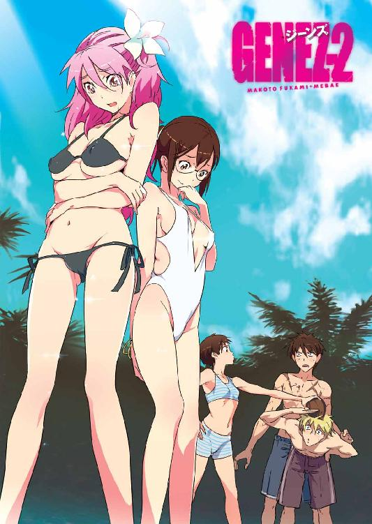
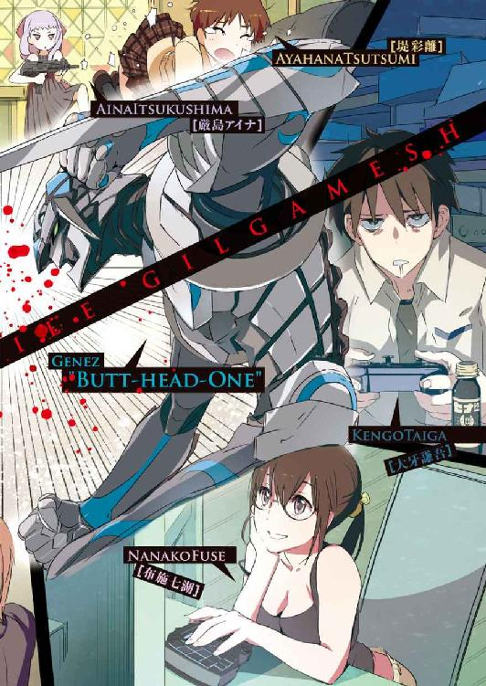
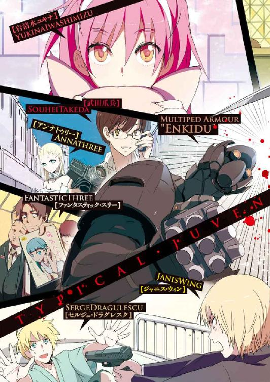
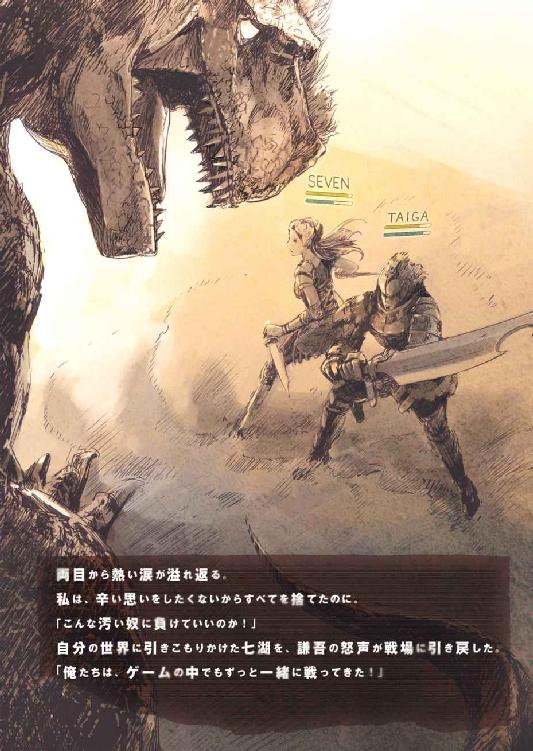
本作品の全部または一部を無断で複製、転載、配信、送信したり、ホームページ上に転載することを禁止します。また、本作品の内容を無断で改変、改ざん等を行うことも禁止します。
本作品購入時にご承諾いただいた規約により、有償・無償にかかわらず本作品を第三者に譲渡することはできません。
本作品を示すサムネイルなどのイメージ画像は、再ダウンロード時に予告なく変更される場合があります。
本作品は縦書きでレイアウトされています。
また、ご覧になるリーディングシステムにより、表示の差が認められることがあります。
口絵・本文イラスト mebae
ＣＯＮＴＥＮＴＳ
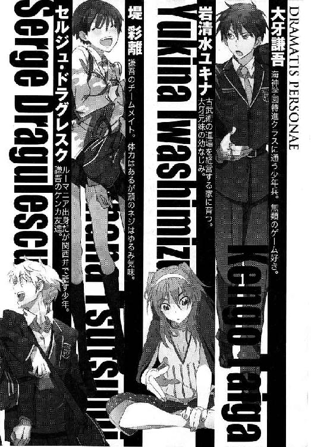
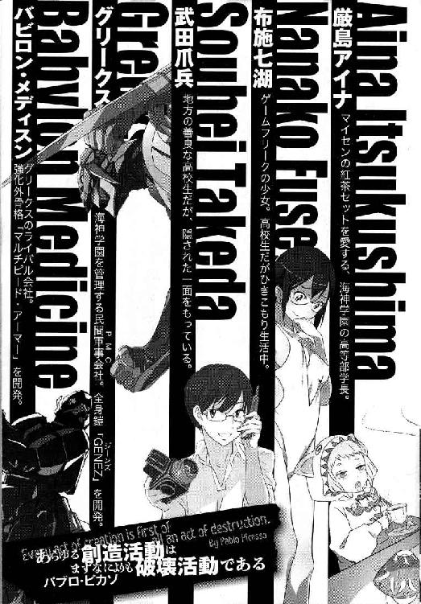
プロローグ
「ユキちーもだいぶ慣れてきたみたいじゃん、この学校に」
そう言ったのは、特進クラスの女子生徒である堤彩離だった。
ここは、海神学園の地下温水プール。季節に関係なく水泳ができる。
彩離は茶髪ショートカット。長身で、眉がやや太めの活発そうな顔立ち。よく鍛えられた体は、しなやかに引き締まっている。学校指定の黒い競泳水着が彩離の体をしめつけて、健康的な魅力が溢れる。
「ユキちー？」
と、彩離に話しかけられた岩清水ユキナは首を傾げた。
「そう、ユキナさんを呼びやすくして、ユキちー。あたしが考えたあだ名！」
「却下」
「ええー」
「今度そんなあだ名で呼んだら......」
「......呼んだら？」
「彩離をくすぐる。こちょこちょって。彩離は特にわきの下が弱くて、そこを責められるのが苦手と聞いた」
「了解です。二度と呼ばないであります！」
彩離は、青ざめた顔でユキナに向かって敬礼した。本当にくすぐられるのが苦手なのだ。
岩清水ユキナは、長く美しい手足が特徴的な少女だ。鼻筋が通っていて、鋭く凛々しい美貌が人の目を引く。競泳水着の下では、彩離より大きい胸が窮屈そうにしている。
今日は、珍しく普通の水泳の授業だ。
水中戦の授業でも、上陸作戦の授業でもない。たくさん泳いで、時々タイムを計って、最後にリレーをする予定だという。ユキナが特進クラスに入ってから、こんなに心休まる授業は初めてかもしれなかった。
彩離が言った通り、ユキナはこの海神学園にだいぶ慣れてきた。
戦闘・戦術スペシャリスト育成部門──特進クラス。
慣れてきたとはいっても、まだまだユキナは普通の高校生っぽい授業に未練がある。
「おい！ ユキナさんと彩離はおるか！」
プールにいるのは女子だけだった。男子はサバイバル料理術の実習に参加しているはずだ。ところが一人の男子が制服姿のままプールに入ってきて、女子生徒たちはざわついた。慌てて護身用の拳銃を抜いた女子もいた。
その男子生徒は、ユキナや彩離の仲間だった。
セルジュ・ドラグレスクだ。
セルジュはヨーロッパ系白人の青年だが、使う日本語はどこで覚えたのかわからないいい加減な関西弁だ。豊かなブロンド、彫りの深い顔立ち、青白い肌に真っ青な瞳という貴族的な容貌の持ち主であり、人を小馬鹿にするような冷笑を常に口元に浮かべている。
「淫獣セルジュがきた！」
女子生徒の一人が悲鳴をあげた。セルジュの女好きは特進クラスでは有名だった。
「誰が淫獣やねん！ こんな美男子つかまえてアホちゃうか！」
ぷんすかと怒りながら、セルジュはユキナたちに近づいてくる。
「まったく、失礼な連中やで......」
「どうした、セルジュ？」
「ああ、お二人さん。仕事や、仕事。謙吾が仕掛けるんで、援護が必要やて。急いで俺たちも現場に向かう」
「謙吾が......！」
そういえば、ここ数日謙吾は学校を休んでいる。ユキナが教師に質問したら「任務中。元気にやってるから心配しなさんな。そのうち説明するよ」と言われた。
「ところで......現場ってどこ？」
彩離が訊ねた。
「海外、中国や！」
＊
──中国、上海。
アジアでも指折りの大都市で、最も豊かなのが徐匯区だ。貧富の格差が拡大しているために上海の一部はスラム化しているが、徐匯区では今も大企業の超高層ビルが増え続けている。
一人の若い日本人ビジネスマンが、徐匯区の徐家匯駅近くにある「上海国際出口汽車貿易公司」の本社ビルを訪れた。出口とは中国語で「輸出」のこと。汽車は「自動車」にあたる。つまり、国際的な自動車メーカーだ。
マイクロソフトやケンタッキーフライドチキンの拠点も存在する中国のマンハッタンとでも言うべき地区で、上海国際出口汽車貿易公司の本社ビルは一際異彩を放っていた。建物の表面が強化ガラスか人工大理石の白いパネルで覆われた、七○階建ての白亜の城だ。
正面玄関から本社ビルの中に入ると、イベントホールのようなロビーが広がっていた。巨大な柱が規則的に並んでいる。ロビーは五階までの吹き抜けで、エスカレーターが四基、エレベーターが三二基、移動のために用意されている。
ロビーの受付でアポイントメントを確認してから、その日本人青年はエレベーターに乗り込んだ。
地下五階まで下りると、ドアの外で一人の中国人男性が待ち構えていた。
「お待ちしておりました。趙明と申します」
「どうも、古賀五郎です」
「今回はわが社の『特別な商品』をチェックしていただく、ということで」
「よろしくお願いします」
日本人の青年──古賀──はメガネをかけていた。捕食獣の目をした、精悍な顔つき。古代スパルタの戦士を連想させる広い肩幅と均整のとれた体形。ブランド物のスーツ姿で、右手にアタッシェケースを、左手に花束を抱えている。
趙明もスーツ姿だ。動物にたとえるなら、血統書つきの番犬のような男。ワックスで丁寧に固めた髪型からは、目的達成のためなら手段を選ばない性格が伝わってくる。
趙明の案内で、古賀は上海国際出口汽車貿易公司本社ビルの地下五階を歩く。華やかだったロビーとは打って変わって、地下は監獄のような雰囲気だ。
「古賀さんは日本国内の大手医療器具メーカーの役員だとか」
「ええ。ある目的のためにそちらの『特別な商品』が必要に」
「しかし......欧米人は『東洋人の顔はすべて子供のように見える』とよく言いますが、古賀さんは中国人の私から見てもかなりの童顔だ。まるで高校生ですよ。留学経験もあるエリートビジネスマンには見えない」
趙明が言った。
古賀は苦笑するしかない。
「童顔は私のコンプレックスの一つです」
「その、黒くて太いフレームのメガネも似合っていないからやめた方がいい」と、趙明はさらに追い打ちをかけた。「あなたは顔つきが精悍だ。体格も瘦せ過ぎず太り過ぎでもなく理想的。もっと細いフレームにすればずっとよくなる」
「アドバイス、感謝です。考えておきますよ」
ちなみに、二人とも会話は英語だ。
趙明の足が、長い廊下の突き当たりで止まった。分厚い鉄の扉の前だ。扉の左右には一人ずつ、タクティカルベストを着用し、アサルトライフルを負い紐で肩にかけた完全武装の警備員が立っていた。
「ここです」
「武器や盗聴器を持っていないか、ボディチェックを」
と、二人の武装警備員が古賀に近寄った。
警備員はまず最初に、古賀が左手に持った花束を見咎めた。
「その花束は？」
「趙明さんのオフィスにでも飾ってもらおうかと。プレゼントですよ」
「あいにく、私のオフィスは地下でね。窓がないから花は置き場所に困る。申し訳ありませんが捨てますよ」
「どうぞ......そんなに高価なものではありませんし」
警備員は花束を軽く調べてから、すぐ近くにある休憩所のゴミ箱に捨てた。次に、古賀のアタッシェケースを調べる。中に入っていたのは数億円分の札束だ。
古賀は、ジャケットの裏側はもちろん、尻のポケットやズボンの裾の裏までまさぐられた。
「ボディチェック終了、何もありません」
「よろしい」と、趙明は警備員たちに向かってうなずき、それから古賀に軽く頭をさげた。「これはこれは......失礼しました。国際刑事警察機構や人権団体が我が社のサイドビジネスを嗅ぎまわっているという噂がありましてね。用心は欠かせない」
「大丈夫ですよ。商売相手は慎重な方がいい」
「では、改めて我が社のサイドビジネス──『特別な商品』について説明させていただきます」趙明は事務的な口調で言う。「我が中華人民共和国では、ある人口規制政策を実行しています。ご存じですよね？」
「ええ」古賀はメガネの位置を指で正しながら微かに首を縦に動かした。「日本では『一人っ子政策』と呼ぶことが多い。正式には計画出産政策。多少の例外はありますが、原則的に一人の女性が産む子供の数を一人に制限する政策です。中国の人口爆発を抑制する為に制定された」
「その通り、一〇〇点満点の回答です」
そう言って、趙明はカードキーで鉄の扉を開けた。
古賀と趙明は地下の大部屋に入っていく。
「......一人っ子政策によって、中国の人口や出生率は理想的な数字に落ち着きつつある。しかし同時に、様々な問題を生みだしてしまった。その問題の一つが、黒孩子──『黒い子供たち』問題」
部屋の中には、多数の檻が並んでいた。鉄格子を組み合わせただけの簡素だが頑丈な檻に、数十人の子供たちが詰め込まれている。コンテナのように積み重ねられた檻の数は、全部で一○○個くらいか。つまり、この部屋は商品の倉庫だった。
「これが我が社の特別な商品──黒い子供たちです」
子供たちは皆怯えた目をしていた。
「一人っ子政策下では、もし二人目の子供を産んだら捨てるか、政府に隠して育てないといけなくなる。また、跡継ぎがほしい家は男児が生まれるまで女児を捨て続ける。そうやって、戸籍を持たない──つまり、最初からいなかったことにされた子供たちが増えていく。それが黒い子供たち」
「............」
子供たちの助けを求めるような目に、古賀は思わず表情を歪ませた。
趙明は続ける。
「黒い子供たちは学校教育や医療を受けることはできない。なにしろ戸籍上は『存在していない』わけですから。そんな子供たちは、人身売買の商品としてはもってこいだ。誘拐しても、殺しても、何をしても問題にならない。ここにいるのは、社員が誘拐、あるいは親からはした金で買い上げた『商品』です。存在していないはずの彼らは警察も探せない。奴隷にするのもよし、臓器のストックにするのもよし、人体実験に使うもよし──。男児は一人五○○ドルから、女児は一○○○ドルから販売しております」
「ふう......」
古賀がため息をついた。それに含まれた怒りをこらえるようなニュアンスに、趙明は気づいていない。
「中国政府高官に賄賂がきかせてありますから、出国は問題ありません。安全なルートがあるので、世界中のどこにでも黒い子供たちをお届けします」と、趙明はセールスマン風の媚びた愛想笑いを浮かべる。「──さて、ここから先はビジネスです。古賀さんの会社はどの程度お買い上げの予定でしょうか？」
「全員だ」
古賀が鋭く言った。
「──はあ？」
趙明の目が丸くなる。
「ここにいる全員を俺が助ける」
「かなりの額になりますが、大丈夫ですか？」
「金のことなら問題ない。一銭も払うつもりはないからな」
「......な！」
古賀の変調を察した趙明が指を鳴らすと、出入り口の扉が開いて、さっきボディチェックをしてきた完全武装の警備員二人が倉庫に入ってくる。
四メートルほどの距離で、警備員たちは古賀にライフルの銃口を向けた。
しかし、古賀の表情は冷静そのものだ。
銃口を向けられても震えるどころか眉一つ動かさず、冷や汗も一切かいていない。
「本題に入ろう。趙明さん、あんたは大事なことを三つ見逃してる」
古賀は鋭く言う。
「......なんだと？」
「一つ。さっきあんたはこのメガネが似合わないと言ったな？ 当然だ。俺は普段はメガネをかけていない。このメガネは超小型のビデオカメラが内蔵されている。今までのやりとりはすべて記録されている。あんたの悪事の証拠ってわけだ」
メガネを外して、スーツの胸ポケットに収める。
「二つ。俺は古賀五郎じゃない。本物の古賀はすでに日本で公安警察の取り調べを受けている。俺が逮捕して、引き渡したんだ」
「じゃあ、お前は誰だ？」
「グリークスの大牙謙吾だ」
古賀五郎──いや、大牙謙吾は鋭い視線で趙明を射抜く。
「グリークス？ 最近の民間軍事会社は警察の真似ごとをするのか」
「ＩＣＰＯの依頼で証拠をつかみにきた。上手くいったよ」
学園で傭兵たちを訓練し、世界中の戦場に派遣している民間軍事会社──グリークス。
治安維持活動やボディガード、はては特殊警察の手伝いまで。報酬と大義があればどんな依頼でも成功に導く、新世代の民間軍事会社。謙吾は、グリークスが誇る精鋭チーム「ビーバス＆バットヘッド」のエースだ。
「『上手くいった』だと？」趙明は苛立ったように舌打ち。「そのメガネを奪って処分すればいいだけの話だろう。そしてお前を殺す」
「いいか、あんたが見逃したこと、三つめだ」
謙吾は右手の指を三本立てて、趙明に見せつけた。
「さっきの花束は、巧妙にカモフラージュされたプラスチック爆弾だ。ゴミ箱に捨てられるのは計算のうちだった。ちなみに、あと二秒で爆発する」
「──え!?」
趙明と武装警備員たちは反射的に振り返って身を強張らせた。敵の注意がそれた隙に、謙吾は一気に踏み込んで間合いを詰める。結局、花束は爆発しない。
「ふっ！」
謙吾は掌底打で武装警備員のライフルを叩き落とし、もう一人の警備員には足払いを食らわせて転倒させた。
ライフルを奪われた警備員が、タクティカルベストのホルスターから素早くナイフを抜く。
謙吾は敵のナイフをかわし、すかさず腹に中段の蹴りを打ち込んだ。敵の呼吸が一時的に止まって、動きが急激に鈍くなる。手首の関節を極めてナイフを床に落とし、喉に手刀を見舞って気絶させる。
足払いで転倒した警備員が立ち上がろうとしていたので、顔面に右の膝蹴りをめり込ませた。鼻血をまき散らしながら吹き飛んで、今度こそ立てなくなる。
あっという間に二人を倒した謙吾を前に、趙明は呆然としていた。
「花束は爆発しなかった......」
「今のは、お前たちに隙を作るための噓だ。あっさり引っ掛かったな」
趙明は訓練を受けた兵士ではなかった。謙吾が軽く撫でるように殴っただけで意識を失う。
「............」
謙吾が檻の方に視線をやると、黒い子供たちがざわめいていた。数人の子供が、神様を崇めるような目で見つめてきた。謙吾が警備員たちを倒したので、子供たちの味方だとわかってもらえたのだ。
「もう少し待っててくれ。すぐに戻ってくる！」
と、謙吾は子供たちに向かって中国語で言った。これだけの数の子供を、謙吾一人で保護するのは不可能だ。すでに犯罪の証拠は入手した。この証拠を持ち帰れば、インターポールの協力を受けた中国の人民武装警察が本社ビルに突入し、子供たちを保護する手筈だ。
子供たちを確認するまで怪しまれるとまずかったので、無線機は持ってきていない。携帯電話は地下五階ゆえに圏外だ。謙吾は倒れている趙明からカードキーを奪い、武装警備員から拳銃を奪った。一度拳銃の弾倉を外し、薬室の弾丸を抜いてから元に戻し、ベルトにさしこんでおく。
謙吾は、非常階段で一階まであがった。ちょうどロビーに出たところで、警報が鳴りだす。誰かが気絶した趙明たちを見つけたのだろう。
たちまちシャッターがおりて、正面玄関はもちろんすべての出入り口が封鎖された。上海国際出口汽車貿易公司の一般社員たちは、地下一階の災害時避難場所を目指して移動を開始する。そうやって人が少なくなったロビーで、謙吾は二○人の武装警備員に囲まれる。こうなると警備員というより、まるで特殊部隊だ。
「............」
謙吾は涼しい顔で両手をあげて、降服の意を示した。
しかし、武装警備員たちの隊長は「構わん、撃ち殺せ」と命じる。
二○人が一斉にアサルトライフルの引き金を絞った。
銃声が轟き、閃光が迸る。
謙吾に向かって全自動連射で放たれた一○○発近い弾丸が、標的に達することはなかった。
「どうなってる......!?」
武装警備員の隊長は顔面蒼白になった。
謙吾の周囲に、幻のように薄く燃える炎の壁が生じていた。大量のライフル弾が炎につかまって一瞬で融解し、液体となってポタポタと床に落ちる。
「遅いぞ、セルジュ」
「お前が囲まれるのが早すぎるんや」
ビルの壁が綺麗に円形にくり抜かれていた。高熱で溶かされたあとだ。その穴から、よっこらしょと制服姿の外国人青年が乗り込んでくる。
第二次世界大戦中、ユダヤの律師によって作られた戦闘用新世代ゴーレム──それが、セルジュ・ドラグレスクだ。
人工生命のセルジュは、足りない霊魂を火の精霊の娘──サラマンデルで補完された。無敵のゴーレムにして、炎の精霊使い。世界中のありとあらゆる戦場を巡ってきた。
セルジュが右手を掲げると、そのてのひらにバスケットボール大の火球が生じた。軟体生物のようにうごめく炎のかたまりだ。
「謙吾はＧＥＮＥＺがないと全然ダメやな！」
「なんだとこの野郎！」
「ええから、あとは任せろや！」
てのひらの火球を武装警備員たちに向かって投じるセルジュ。
火球は床に炸裂して、爆風だけで数人を空中に吹き飛ばした。セルジュの火球は、ＴＮＴ火薬に換算すると最低でも三○○グラム以上の威力。力を込めると、火薬数十キロ分に相当する破壊力を発揮したこともある。
さらに、頭上で窓ガラスが割れた。
飛翔する何者かが、吹き抜けの五階からロビーに現れたのだ。
メタリックな、動物的なデザインの全身鎧──ＧＥＮＥＺをまとった堤彩離だ。
彩離のＧＥＮＥＺは青色。
背中から大きな翼を生やし、鋭い爪のついた脚部が特徴的な恐鳥型スーツ。
ＤＮＡコンピュータで制御されている、現時点世界最高の個人用防御兵装。
彩離の暗号名はバットヘッド２。
謙吾の相棒を務めることが多い、優秀な少女傭兵だ。
最新の高性能過酸化水素エンジンを使ったジェットパックが、バットヘッド２──彩離に重力に逆らう力を与える。
五階から吹き抜けを急降下してきた彩離は、鋭い蹴りでたちまち二人の武装警備員を転倒させた。他の警備員たちが彩離にアサルトライフルの集中射撃を浴びせるが、その程度の攻撃ではＧＥＮＥＺはびくともしない。火花が散って、それで終わりだ。
謙吾、セルジュ、彩離の三人が武装警備員たちを蹴散らすまで、それほど多くの時間はかからなかった。
現場をインターポールの特別捜査官と中国の人民武装警察に引き継いで、謙吾たち三人は上海国際出口汽車貿易公司の本社ビルを出た。子供たちは救出され、証拠のメガネもインターポールに渡してある。捜査がどこまで進むのかはわからないが、少なくとも趙明はどんなに賄賂を積んでも実刑を免れることはないだろう。
ビルの周囲は、いつの間にか武装警察によって封鎖されていた。
武装警察の装甲車や輸送車両に混じって、グリークスのストライカー装甲車が謙吾たちの帰還を待って停まっていた。そのストライカーの上に、岩清水ユキナが狙撃銃を抱えてすねたような顔をして座っている。
謙吾の幼なじみであり、新米の学生傭兵であり──同時に、ナイチンゲールと呼ばれる不思議な力を秘めた少女だ。
制服のミニスカートに、膝の上まである革のロングブーツを組み合わせている。
「私にも何かさせてほしかった」
ユキナは軽く頰を膨らませて言った。
「まだまだ、今日のような作戦に参加するには訓練不足だ」
と、謙吾は首を横に振る。
「ユキナは確かに武術の達人だが、それだけで通用するほど実戦は甘くない」
謙吾の口調は冷たかった。
「うー......」
幼なじみの普段とは違う顔に、ユキナは不満を隠せない。
ストライカー装甲車の中に入ると、無線のヘッドセットをつけた中年男が「よお、おつかれおつかれ！ よくやった！」と謙吾やセルジュの肩を叩いた。くたびれたスーツ姿で、ネクタイはだらしなく緩み、顎に無精ひげを生やしている。
謙吾たちの担任教師、大迫伝次郎。
普段は歴史を教えているが、その正体はグリークスの歩兵課特殊強化白兵戦小隊──暗号名ビーバス＆バットヘッドの指揮官である。
「任務完了。チーム『ビーバス＆バットヘッド』はこれより帰還する」
大迫が、無線でグリークス本部に連絡を入れた。
第一章 始まりは架空世界にて
広い敷地と自由な校風──。
私立海神学園高等部の校舎や学生寮は、背の高い常緑樹林に囲まれている。常緑樹は落葉樹と違い、一年を通してずっと葉をつける。深い緑色の葉が鬱蒼と茂る林は、この学校に通う生徒たちから「まるで城壁だ」と思われている。葉が落ちることなく枯れることもない、海神の城壁。その城壁は、ただ美しいというだけでなく、海神学園の「真の姿」を隠すという意味も持っている。
海神学園特進クラス──そこは、民間軍事会社グリークスの傭兵育成部門を兼ねていた。
「......我々は民間軍事会社です。我々を動かすのは、契約です......大牙謙吾が、岩清水ユキナと契約を結んでくれればすべて丸く収まる......」
「契約......ですか？」
「単純だ。『大牙謙吾は、ナイチンゲールである岩清水ユキナを全力で守る』」
高等部学長室で契約を結んだ謙吾とユキナ。
そしてユキナが海神学園の学生寮に入り、早くも一カ月近くが過ぎようとしていた──。
１
徹夜三日目に入った。
──いつになればこの戦いは終わりを迎えるのか。
厳しい訓練を受けた強靭な肉体と精神力がなければ、途中で脱落していただろう。
海神学園特進クラスの学生傭兵・大牙謙吾は、学生寮の自分の部屋で、終わりの見えない死闘にのめり込んでいた。睡眠不足の目をこすりながら、カフェインがたっぷり入った栄養補給のドリンク剤を飲み干し、マウスとキーボードを忙しく操作している。
「仕事」で稼いだ金で買った大画面のモニタ上で展開されているのは、パソコンのゲーム──「ウェールズ年代記」。このゲームは、多人数同時参加型オンラインＲＰＧだ。大勢のプレイヤーが、世界中から、共通のゲームに参加する。
今、謙吾はいわゆる「廃人」と呼ばれる状態だった。
俳句を作る俳人ではない。寝る間も惜しんで、インターネットを介して他のプレイヤーとゲームの成果を競い合う、廃棄物の廃人だ。
謙吾の部屋は、まるで香港のいかがわしいパーツショップだ。凄まじい数のゲームソフトが山積みになっている。パソコンは、高スペックを要求する最新ゲームを処理落ちなくプレイするためにカスタム済み。それが当たり前のことであるかのように、今までに発売されたすべての家庭用ゲーム機がそろっている。
民間軍事会社のスーパーエース、大牙謙吾。しかし普段の彼は、元いじめられっ子の奥手なゲームマニアだ。
猫背気味になってモニタを覗き込んでいる謙吾の背後で、ごそごそと物音がした。ゲームソフトの隙間でごろ寝していたセルジュ・ドラグレスクが目を覚ましたのだ。
「お前まだやっとるんか......」
ゆっくりと上体を起こしつつ、セルジュは言った。
「よう、おはよう。セルジュ」
と、謙吾はモニタから目を離さずに挨拶した。
「中国から帰ってきて休みなしやないか。授業出てゲームで徹夜、授業出てゲームで徹夜......体、壊すで、お前......」
「大丈夫......厳しい訓練に耐えた体だ」
「こんなもののために鍛えたんちゃうやろ！」
「こんなものとはなんだ！ 失敬なヤツだな......」
セルジュとは、この海神学園では彩離の次に付き合いが長い。腐れ縁になりそうだ、と謙吾は思っている。
第二次大戦中に「作られた」セルジュは、初めて出会ったころはもっと気難しい性格で、誰も寄せ付けない雰囲気を身にまとっていた。それがいつの間にか、学園でも一、二を争うほど軽薄なキャラクターに──。
「それにしても......何がオモロいんや、コレ？ ぱっと見、最近のドラクエやＦＦと変わらんやんか。グラフィックは多少キレイになっとるかもしれへんけど」
「ぱっと見はな、確かに家庭用ゲーム機のＲＰＧとあんまり変わらない。でもこのゲームの真価はシナリオや戦闘じゃないんだ」
「なら、なんやねん」
「ほら、向こうで冒険者とモンスターが戦ってるだろ？」
謙吾はモニタの一点を指差した。謙吾が操作するキャラクターから遠く離れた場所で、ＣＧの冒険者キャラクターと複数のモンスターが戦っている。
「ああ」
「あれも、プレイヤーなんだ。そこが、一人でやるＲＰＧとはまったく違う。これから俺のキャラクターは、あの冒険者を助けてもいいし、無視してもいい。プレイヤーのキャラクター同士なら、恋愛や結婚もできる。オンラインゲームでは、ストーリーは自分たちで作っていく。ここまでなら今までも似たようなゲームもあったが、さらに『ウェールズ年代記』では出産もあって、生まれてきた子供が誰かのプレイヤーキャラになることもあるんだ。ゲームの中で進む時間感覚に工夫がしてあって、冒険が何世代にわたってもストレスがないようにゲームバランスが調整されている」
「まあ......このゲームが大したもんやっちゅうのはなんとなくわかったけど......それにしても、謙吾のハマり方は尋常やない。お前のゲーム好きはもう病気やな......」
「ゲーム好きは病気じゃない。道だ。ゲーム道」
「またわけのわからんことを......」
セルジュは天を仰いで大げさに嘆いてみせる。
「そういえば......」謙吾が首を傾げた。「ゲームに夢中でうっかり聞き忘れてたんだが、セルジュはなんで俺の部屋にいるんだ？」
「自分の部屋だと、いまいち試験勉強に集中でけへんのや」
言いながら、セルジュは枕代わりに使っていた教科書をひらひらと振ってみせた。
「試験......勉強？」
マウスを操作する手がぴたり、と止まった。
「なんや、忘れとったんか。徹夜のせいでホームルームも上の空かい」
「教科は......？」
「軍事史に、弾道学。英語、アラビア語、フランス語。爆弾解除応用Ｉ、破壊工作基礎、宇宙物理学、薬理学、工学基礎、最新戦術概論、政治外交戦略講座、タクティカルインターネット講座......あとは実技系やな」
「宇宙物理学があんのか......きついな」
「実技系はなんとかなるにしても、筆記は用心せんとな」
悪名高い海神学園の特進クラス試験。実技では、訓練用のプラスチック弾頭を使った模擬銃撃戦、遠距離狙撃競技会、そして生徒たちから「天下一武道会」と揶揄される近接戦闘勝ち抜き戦などが行われる。実技は抜群の謙吾やセルジュでさえ、ベスト８が精一杯という特進クラスの天下一武道会、全体のレベルは推して知るべしだ。特進クラスが誇る強豪部活動、軍隊格闘技研究会や中国拳法部のエースと序盤で当たれば予選突破も難しくなってしまう。
「謙吾が赤点取るとチーム全体の迷惑なんや。そろそろゲームやめえ」
「仲間がいるから抜けるのも難しいんだよ......」
「リアルの仲間とゲームの仲間どっちが大事なんや、アホ！」
「うう......」
謙吾もこれには言い返せなかった。
「仲間って、この女キャラか」
と、セルジュが謙吾のプレイヤーキャラの隣にいる女戦士を指差して言った。女戦士の頭上には、ＨＰやＭＰの残量を示す赤いバーと一緒に、キャラクター名がアルファベットで表示されている。
「キャラクター名は......『セブン』。これって、遠くで操作してるプレイヤーも女なんか？」
「さあ......『中の人』とプレイヤーキャラクターの性別年齢が一致しないなんてよくあることだからなあ。文字チャットだけで、音声チャットをしたことはないからわからん。でも、文章の感じからすると、同い年くらいの可愛い女の子じゃないかなーと思う。ちょっと生意気なタイプの」
「そらないわ。きっと、この女戦士を使っとるのは根暗なパソコンオタクのオッサンやで」
「うるさい！ セルジュは模型オタクのくせに！」
「なんやと！」
セルジュ・ドラグレスクは日本にやってきてから模型、プラモデルにはまった。現在、海神学園模型部所属である。タミヤのスケールモデルをこよなく愛し、第二次世界大戦からベトナム戦争までの戦車や戦闘機をよく作っている。
実際、模型とセルジュの相性は抜群だった。普通のモデラーは、兵器を組み立てる際にたくさんの歴史資料を参考にしなければいけない。ところがセルジュの場合は、自分の記憶を再現するだけでいいのだ。「俺が見たときはこうやった」といった具合に。
謙吾は文字チャットで仲間のセブンに「用事ができたので落ちる。また明日」と告げてからログアウト。パソコンをスタンバイ状態に。
「これでよし、セルジュと殴り合いできる」
「ええ度胸や。オモテ出ろや」
「ああ、外のどこか人目のつかないところで決着つけてやる」
意気込んで、謙吾は勢いよく自分の部屋のドアを開けて廊下に出た。
すると、ちょうど部屋をノックしようとしていた幼なじみ──岩清水ユキナ──とばったり出くわした。突然の至近距離に、同時に赤面する二人。
「謙吾」
「ユキナ」
二人とも一歩後ろに下がってから、わざとらしく咳払いなどして心を落ち着ける。
「ど、どうしたんだ、ユキナ」
「いや、その、あのだな......」
最初はどぎまぎしていたユキナだが、すぐに謙吾の顔色悪さや目の下のくまに気づいて、眉間に浅いしわを刻んだ。
「謙吾、ひどい顔だぞ......」
「これは、試験勉強で......」
謙吾は咄嗟に噓をつく。
するとユキナは腰に手を当てて「......ほほう？」と意味深長な態度をとった。
「私は、ゲームのしすぎで徹夜が続いていると聞いたが......？」
「え！ なんで知ってるんだ！」
動揺した謙吾は、自白ともとれるセリフを思わず口走った。
「ああ、俺がメールでチクった」
しれっとした顔でセルジュが言った。
「セルジュには感謝するんだな、いい友達だ」
「この野郎......」
謙吾はセルジュに殴りかかろうと拳を振りかぶった。
そんな謙吾の頰を、ユキナがつまんだ。
「いててて......！」
「私の目の前でケンカなんかさせないぞー」
ユキナはつまんだ頰を引っ張って、謙吾の動きを止める。顔の半分が大きく歪んで、謙吾は「やっ、やめろよっ！」と情けない声をあげてしまう。
「こうしてるとなんだか昔を思い出すな......」
と、ユキナが目を細めて懐かしそうに言った。
「俺は思い出したくないよ......いててっ」
「子供の頃そんなことばっかしとったんか、お前ら」
大昔──謙吾は気弱ないじめられっ子で、そんな彼を守っていたのが近所の幼なじみ岩清水ユキナだった。その当時のあだ名は「漢女姉さん」。いじめっ子たちに厳しいユキナは、決して謙吾にも甘いわけではなかった。謙吾が食べ物の好き嫌いを口にしようものなら、頰をつねって教育したものだ。
「謙吾はなすびもちゃんと食べないとだめだ！」
「や、やめてよぉ......ユキナちゃん......」
ユキナにとっては懐かしい、謙吾にとってはできる限り封印したい思い出だ。
謙吾と、その妹の涼羽。有名な政治家の、愛人の子供たち。
やがて二人の母が爆弾テロで死亡し、大牙兄妹とユキナは離ればなれになった。
そして──この海神学園で運命の再会を果たした。
「ところで、謙吾のゲームの件なんやけど......」
セルジュが話を元に戻した。
「ああ、そうだった。ええと、それについてだけど......私はあんまり詳しくないんだが、とりあえずゲームのデータを消去したら謙吾は健康に戻るのか？」
つまんだ指を開いて謙吾を解放してから、ユキナはそんなことを言った。
「......っ！」
謙吾の顔色がさあっ、と青ざめる。
「せやせや、そうするのが謙吾のためや！」
セルジュが無責任にユキナを煽った。
ユキナに何かされる前に、謙吾は光の速さでスライディングし、流れるように土下座の体勢をとった。
「うわっ！」
「ゲームの時間を減らします。データを消すとか本当に勘弁してください」
「や、やめないか、謙吾！ 男がそんなに簡単に頭を下げるもんじゃない！」
ユキナは昔から頭を下げられると弱い。大抵のことは許してしまう。
海神学園ほど美しい場所は、海外の観光地でも珍しい。丁寧に整備された花壇には季節の花が咲き乱れ、校舎と校舎をつなぐ歩道には石造りの古風な屋根がかかっている。
伝統ある大聖堂のような威厳溢れる高等部の第一校舎。安定した交差ヴォールト天井の廊下を歩いていくと、高等部学長室に行きあたる。
分厚い絨毯に古めかしい調度品、マイセンの紅茶セットにマホガニー材の本棚──中世ヨーロッパ貴族の書斎のような豪華な部屋の中央で、銀髪の少女がうつらうつらと眠りかけていた。ロングの髪はほんのりくせ毛気味で、全体的にふわふわしている。
少女は、若くして海神学園高等部の学長を務める厳島アイナだった。
アイナがいつも使っている重厚なデスクの前に、今日は特別に安っぽい学習机が設置されていた。そこに座って教科書やノートとにらめっこしているのは堤彩離だった。
「はあ......」
と、彩離は疲れ切ったため息をつく。
「なんであたしはこんなところでおべんきょうしてるんだろう......」
その言葉を聞いて、眠りかけていたアイナが「ぱちり」と目を覚ました。ぬいぐるみのようなこども学長はてくてくと彩離に歩み寄っていき、懐からエアガンを抜いていきなり引き金を絞った。パンパンパン！ と軽い銃声が響く。こども学長はぼんやりとした表情のまま、彩離の背中にＢＢ弾を叩きこむ。
「いったあー！ なにするんだよッ！」
彩離はのたうちまわる。
「それ、人に向けて撃っちゃいけないヤツじゃん！」
「あまりにも腹が立ったもので......つい......」こども学長アイナは続ける。「......『赤点でやばいので勉強を教えてください』と言ってきたのは堤彩離さん......あなたの方じゃないですか......私はむしろ迷惑しているんです......」
「ああ......そういえばそうでした」
「......そもそも......一生徒に学長である私が個人的に勉強を教えるなんて......よくよく考えればありえない話で......」
「同じ手芸部の仲間じゃないッスか......」
「まあ、それはそうなんですが......」
高等部学長厳島アイナと、体育会系エリート堤彩離のたった一つの共通点──趣味、手芸。編み物や刺繡をしていると心が落ち着くのだ。あの時間を共有できる仲間として、頼みごとをされると断りにくい。
実技の成績は良くても、彩離は筆記試験がボロボロだった。謙吾は今ゲームに夢中で、セルジュは人にものを教えるのが下手だ。ユキナは転校生なので、まだ人に教えるほどの余裕がない。頼りになるのは、高い知能を持つことで有名なこども学長だけだった。
「しかし、学長は眠りそうになってるだけで全然ものを教えてくれない......」
「......確かに......ちゃんと起きていないといけませんね......」
そう言って、こども学長はエアガンの弾倉を交換した。
「......彩離さんが少しでも怠けたら、これで撃ちます......」
「これが、すぱるた教育ってやつか！ あああ、学長なんかに頼むんじゃなかった......」
「『学長なんか』とは失礼な人ですね......まったく......」
少し呆れながら、またエアガンを撃った。「あひい」と彩離が情けない悲鳴をあげる。
２
海神学園特進クラスの授業は独特である。
試験まであと二週間。その日の一時間目は、弾道学。教科書二九五ページ。数百メートルを飛翔する弾丸が風の影響でどう動くかを学ぶ。
二時間目は、訓練用の銃──一般の店でも売っている電動ガン──を使ったサバイバルゲームのような模擬戦闘だ。キルハウス、と呼ばれる演習用のプレハブ小屋で行った。電動ガンを使うのは最初のうちだけで、すぐに訓練用のプラスチック弾、最終的には実弾を撃ち合うことになる。
三時間目、政治外交戦略講座。四時間目、最新戦術概論。昼休みを挟んで、五時間目はランニング、筋肉トレーニングといった基礎体力作り。そしてようやく放課後だ。
「部活だー」
と、背筋を伸ばしながら彩離が言った。
ユキナの周囲に、謙吾、セルジュ、彩離が集まっている。
特進クラスの生徒にも部活動は許されている。課外授業や特別訓練が入って放課後が潰れることはあるが、普段はどの生徒も自分のやりたいことを楽しんでる。いくら素質のある少年少女とはいえ、放課後も気が抜けない時間が続いたら身がもたない。
ビーバス＆バットヘッドのメンバーは、それぞれ違う部活に所属している。彩離は手芸部。セルジュは模型部。謙吾は恋愛シミュレーションゲーム研究会（隠しているが）。そして、岩清水ユキナは......。
「お」セルジュが、ある人物の来訪に気づいて言った。「ユキナ、お迎えが来てるでー」
「う......」
教室の廊下側の窓越しに、美人のメイドさんがにこにこ笑って手を振っている。
ユキナが所属する部活の部長を務める梓馬亜佑美だ。
──少し前の話。
「ユキナは何かやりたいことはないか？ どこか部活に入った方が絶対楽しいぞ」
という謙吾の一言がきっかけで、ユキナが部活探しを始めたのが間違いの始まり。
古流武術の達人で、運動神経が良くて、スタイル抜群で容姿も可憐なユキナは、海神学園の各部にとって非常に魅力的な存在だった。
海神学園は普通の学校ではないので、当然のように部活も普通ではない。
将棋部はないが、軍人将棋部ならある。
焼肉愛好会もあれば、ナイフコンバット部もある。
なにしろ、特進クラスに通っているのはすべて優秀な兵士かその卵だ。血の気の多い生徒たちが運営する部活動は、決して仲よしこよしという雰囲気にはならない。常に対立し、互いにけん制しあっている。
そんな状況で、ユキナという「獲物」が現れた。
中国拳法部、ベトナム戦争研究会、軍隊格闘技研究会──特進クラスの強豪部がユキナに目を付けて、争奪戦が勃発。校内では部活間の小競り合いが多発し、内戦寸前とでも言うべき状態に陥った。
普通の学校ならありえない、信じられない話だが、これが海神なのだ。
彩離が逃げてセルジュが激怒し、謙吾は戦いユキナは拉致され──。
争奪戦の末にいくつかの偶然が重なって、結局ユキナが入ったのは梓馬亜佑美率いる「武装メイド部」だった。
漫画やアニメに登場するような、家事から主人の護衛まで完璧にこなす戦闘系のメイドを育成するための部活である。
「......美しさとけなげさと強さの追求！ それこそがこの部のモットーです」
と、部長の亜佑美は熱っぽく語る。
「うー......」
武装メイド部の「制服」に着替えて、ユキナは部室に顔を出した。
制服──すなわちメイド服はミニスカートで、膝上のニーソックスにはリボンが付いている。
海神学園は敷地が広大なので、一つ一つの部活に与えられているスペースも大きい。武装メイド部は、特進クラス専用スペースの「戦闘系部活校舎」に部室、教育室、訓練室という三つの部屋を割り当てられている。
部室には、ユキナの他にもたくさんのメイドさんたちがいた。
その中でも一際目立っているのは、やはり部長の亜佑美だろう。長身で肉感的なボディの持ち主。腰まであるロングの黒髪に、いつも潤んでいるような大きな瞳。嫌でも他人の視線を集めてしまう少女だ。
「それではみなさん、今日も訓練に励みましょう......！」
亜佑美が高らかに告げる。
入ってみてユキナも初めて知ったのだが、武装メイド部は海神学園強豪部の中でも精鋭ぞろいとして有名らしい。この部から、国際的に活躍する女性諜報員や潜入捜査官を多数輩出しているというから、馬鹿にできない。
武装メイド部の女子たちは、部室から訓練室に移動した。訓練室には、射撃を練習する為のシューティングレンジと護身術を学ぶためのジムがある。
「今日は、シューティングレンジで抜き撃ちの練習をしますよー」と、亜佑美。
武装メイド部の部員たちは、それぞれの愛用銃を取り出して準備を始めた。
ユキナも、授業でも使っている自分の銃を持ってきていた。
ベレッタＰｘ４ストーム。
謙吾のおすすめだ。名門ベレッタ社の新世代モデル。口径九ミリ。ロングマガジンには弾丸が二○発も入る。全体的にデザインが丸っこくてちょっとカワイイのと、部品を交換することで誰の手にも握りやすい形状になるところがユキナも気に入った。
シューティングレンジはコンクリートがむき出しの殺風景な場所で、銃やリモコンを置くためのデスクと、その二○メートル先に人型の標的がある。人型の標的は金属製のレールに吊り下げられていて、リモコンで手元に引き寄せることが可能だった。
シューティングレンジの奥行きは二○メートルだが、海神学園では標的を七メートルの位置に置いて射撃練習することを推奨していた。米軍やＦＢＩのデータによると、拳銃を使った銃撃戦が最も発生しやすいのは七メートル以内の距離、ということがわかっている。
距離が近くとも、撃ち合っている二人が激しく動いているとなかなか当たらないものだ、と謙吾が言っていた。
近くにいる相手に確実に当てる──それが、拳銃を使った戦いのシンプルな奥義らしい。
人型標的を七メートルにセットした。
ユキナはベレッタＰｘ４ストームのスライドを引いてから、一度ショルダーホルスターに収納する。
ゆっくり狙いをつけて撃つのでは実戦的ではない。
ホルスターから銃を抜いて、すぐに撃つ。コンバットシューティングだ。
一弾倉分撃ち尽くしたところで、亜佑美が隣にやってきた。
「さすが、初心者とは思えない腕前」
ユキナがリモコンを操作して、人型標的の着弾を確認した。それを後ろから覗きこんだ亜佑美が、感嘆のため息を漏らした。ユキナが撃ち出した二○発は、どれも標的の頭部か胸部に集まっていた。
「コツをつかめば、よく当たるものだな......」
「銃の反動は、ちゃんと構えれば子供でも制御できますよ。構えが悪いと、どんな大男でも手首や肩を痛めてしまう。でも、ユキナさん......普通に撃って当たるのは海神の生徒なら当たり前。武装メイド部には、その上があるんです」
そう言って、亜佑美は人差し指をピン！ と立てた。
「その......上？」
「つまり、こう」
亜佑美は新しい標的をレールにセットし、一○メートル離した。しかし、彼女はどこにも銃を身につけていない。素手に見える。
いったい何をするつもりなのかとユキナが怪訝に思ったら、亜佑美は素早くメイド服のミニスカートを閃かせた。
「！」
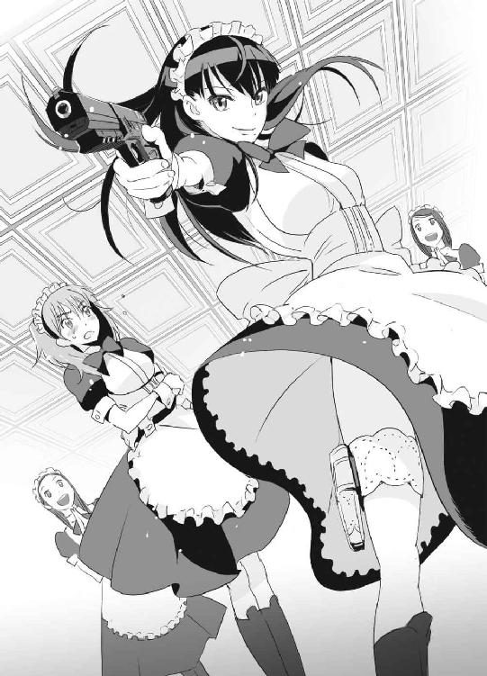
ミニスカートの下──扇情的な亜佑美の太腿には、専用のレッグホルスターが巻かれていた。そのホルスターから拳銃を抜いて、すかさず発砲。あっという間に六発を標的の眉間と心臓に当てた。
「という、感じです」
「そんな恥ずかしいことができるか！」
ユキナは顔を真っ赤にして怒鳴った。
「絶対に役に立つんですって！」
負けじと亜佑美も大声で反論する。
「嫌だ！ 私はそんな撃ち方の練習はしないからな！」
「そんな風にわがまま言ってると、教育室でお説教ですよ！」
「あそこは教育室じゃなくて拷問室だろ！」
一方、その頃──。
大牙謙吾は恋愛シミュレーションゲーム研究会（通称愛シ研）の活動を「任務の打ち合わせがあるので......」などと噓をついてサボって、自分の部屋でパソコンを起ち上げていた。愛シ研の部長は怖い人で、噓がばれたらひどい目にあわされるのだろうが、それでも謙吾にはやらないといけないことがあった。そう──オンラインゲーム「ウェールズ年代記」だ。
ウェールズ年代記の世界観は、アーサー王の物語をモチーフにしている。西暦五○○年代のブリテン島（現代のイギリス）周辺が舞台で、円卓の騎士たちはもちろん、西ローマ帝国の残党やサクソン人も登場する。人間だけではなく、巨人や魔法使いたちが存在しているのはいかにもゲームらしいところだ。
プレイヤーはアーサー王の片腕を目指すもよし、アーサー王の暗殺を企むもよし、西ローマ帝国の残党と戦うもよし。ドラゴンや人食い巨人といった怪物たちを退治する旅を続けるもよし。オンラインゲームは自由度が高いのが当たり前だが、その中でもウェールズ年代記の出来は群を抜いていた。
このゲームを始めてからずっと、謙吾はセブンという仲間と苦楽をともにしてきた。数百時間におよぶ二人旅だ。ウェールズ年代記は、一人旅から二○人パーティーまで、どの人数でも冒険を楽しめるようにゲームバランスがプレイヤーに合わせて常に変化している。こんなゲームは、他にはない。
謙吾がウェールズ年代記にログインすると、すでにセブンも「この世界」にいることがわかった。メールで連絡をとりあったあと、合流。今日の冒険を開始する。
ゲームをやっている時だけは、謙吾は猫背になる。セルジュに指摘されて初めて気づいた。ゲームに集中すると少しずつ身を乗り出していき、いつの間にか背中を丸めてモニタを覗き込んでいる。何度かこの癖を直そうとしたが、無理だった。
謙吾は軍隊格闘技も銃器も大好きだ。戦闘行為にはこだわりがある。しかし、たとえ敵でも人を傷つけることはできる限り避けたいし、戦争はこの世界からなくなればいいと思っている。矛盾しているようだが、まともな兵隊とはこういうものだ。ゲームのいいところは、どんなに激しい戦闘があっても現実的には誰も死なないということだ。誰を傷つけることもなく、純粋に闘争本能を高ぶらせることができる。
『今日は、何をやろうか』
と、謙吾はチャットウィンドウに文章を打ち込んでセブンに話しかけた。
『東部の酒場巡りなんてどうかな。賞金首がいるかも』
セブンもチャットで答えた。
謙吾が操るキャラクターは放浪騎士のタイガ。ネーミングにひねりはなかった。女戦士のセブンは伝説のアマゾネスの末裔という設定。
セブンが言った賞金首とは、プレイヤーキラーのことだ。これだけ自由度が高いゲームになると、必ず他のプレイヤーを攻撃するプレイヤーが出てくる。この行為を禁止するのは簡単だが、そうすると自由が一つ失われる。
そこで運営側は、プレイヤーキラーを倒したものに高額の賞金と経験値のボーナスを与えるシステムを用意した。賞金首制度だ。ウェールズ年代記ならではの、絶妙なゲームバランスだからこそ成立する。
謙吾とセブンは最近、怪物退治や戦争そっちのけで賞金稼ぎを楽しんでいる。
「............」
まだ初心者だった頃の謙吾を、たまたま助けてくれたのがセブンだった。出会った時にはすでにセブンはベテランの有名プレイヤーだったが、初心者に対して偉ぶることもなく、必要以上にお節介になることもなく、謙吾が少しでもこのゲームを楽しめるように手伝ってくれた。「彼女」がいなければ、ここまで廃人化することもなかったろう──。
『きっと、この女戦士を使っとるのは根暗なパソコンオタクのオッサンやで』
そんなセルジュの言葉が、妙に引っ掛かっていた。
訊いてみようか、と謙吾は思った。簡単だ。
──リアルではどんな感じなんですか？
そうチャットに打ち込めばいい。
状況やゲームの質にもよるが、オンラインゲームの世界では操作しているプレイヤーの生活に関わる質問はマナー違反とされることが多い。現実を忘れるためにゲームをやっているプレイヤーはたくさんいるのに、そこに本人の話を持ち込んだら興ざめしてしまうからだ。しかし、謙吾とセブンの付き合いは長い。そろそろ、軽い質問くらいなら許されるはず──。
「うーん......」
少し考えて、結局謙吾は質問するのをやめた。やっぱり、ゲームはゲームだ。中の人の性別や年齢は関係ない。余計なことをして、セブンとのコンビが解消されるのは嫌だった。
すると、逆にセブンが質問してきた。
『タイガは全然プライベートの話をしないよね。私の歳とか、普段は何をやっているのかとか気にならない？』
あまりのタイミングの良さに、謙吾は驚いて猫背をしゃんと伸ばした。
『関係ないから』
と、謙吾は返答した。
『セブンとゲームをしていると、とても楽しい。それに、頼りになる。それがすべてだ』
『......私はずっとこのゲームにログインしてるし、レアアイテムの所持率も飛び抜けてるから、少し仲良くなると大抵の仲間は色々と質問してくる。でも、私はプライベートの話はあまりしたくない。だから、タイガとの関係はとても心地いい。いつも、ありがとう......』
チャットで礼を言われて、妙に胸がどきどきした。相手の顔が見えない分、想像力が刺激されてしまう。
プライベートの話をしないのは、実は謙吾にとっても都合がよかった。海神学園は普通の高校とは違う。もし授業の話になったら、ボロが出るかもしれない。「今日は爆弾解除の授業があって......」なんて話をしたら頭がおかしいと思われてしまう。
セブンとの楽しい数時間が過ぎたころ、謙吾の携帯電話に呼び出しがかかった。無視しようかと一瞬考えたが、着信メロディが映画『フルメタルジャケット』の罵声コレクションだったので大迫からかかってきたのだとわかる（ちなみに、友達からかかってきたら着メロはゲーム『ダライアス外伝』のサントラから一曲鳴る仕組みだ）。
「仕方ないな......」
大迫からの電話なら任務の話だろう。人の命がかかったグリークスの仕事。
ちょうどゲームの冒険も一段落したところだ。
セブンに挨拶してからログアウト。
謙吾は高等部の学長室に足を運んだ。
３
こども学長厳島アイナは、重厚なデスクの上で優雅に紅茶のカップを傾けていた。そんな彼女の前に、グリークスが誇る精鋭部隊のメンバーが集合している。特進クラス、歩兵課特殊強化白兵戦小隊、ビーバス＆バットヘッドの小隊長を務める大迫伝次郎。
バットヘッド１、大牙謙吾。
バットヘッド２、堤彩離。
アンダーソン１、セルジュ・ドラグレスク。
そしてナイチンゲール、岩清水ユキナ。
「............」
こども学長と大迫が、ユキナに怪訝な視線を送っていた。制服姿ではなく、可愛らしいメイド服姿だったからだ。
「どういうことなんだ......そういうプレイとか？」
大迫がセクハラまがいの発言。
「ち、違います！ これは、その......部活のユニフォーム......」
慌てて首をぶんぶんと左右に振って否定するユキナ。
「ああ、武装メイド部の......」
「そんなにじろじろ見ないでください......恥ずかしい......」
ユキナがもじもじと身をくねらせた。とても居たたまれない様子だ。いつも凛々しくて堂々としているのに、こんなユキナは珍しい。恥ずかしさが謙吾や彩離にも伝わってきて、妙な空気が流れ始める。
空気を変えたのは、こども学長の「......とりあえず、仕事の話をしましょうか......」という発言だった。彼女はデスク上の内線電話を使って「......応接間のジャニスさんを、学長室までお通ししてください......」と海神学園の職員に告げる。
それから一分もしないうちに、学長室に一人の女性が入ってきた。
その女性はまずアイナに、次に謙吾たちに向かって警察式の敬礼をする。
「国際刑事警察機構の国際捜査管理官、ジャニス泳警部です」と、その女性は名乗った。
ＩＣＰＯ、インターポールとも呼ばれる。一八○カ国以上が加盟する、国際的な捜査協力を実現するための組織である。
「上海の件ではお世話になりました」
と、ジャニス。ＩＣＰＯの職員は、犯罪者を直接逮捕することはできない。犯罪が起きている国の警察に協力することはできるが、その活動は不自由そのものだ。そんな不自由な組織だからこそ、グリークスのような「なんでも屋」に頼る部分が大きくなる。
きれい事だけでは犯罪には対抗できない。
ＩＣＰＯが手を出せない相手でも、事件内容と報酬次第でグリークスが片付ける。
ジャニス泳はレディースのパンツスーツを隙なく着こなした妙齢の美女だ。香港警察の出身。イェール大学卒業のエリート。迫力のある長身。様々な事件を見てきた切れ長の目。ミディアムのブロンドを、クールなシャギースタイルにしている。
「おおお......」
ジャニスを見て、惚れっぽいところがあるセルジュがきらきらと目を輝かせていた。また始まった......と、謙吾は心の中だけでため息をつく。本当に知的な美人に弱いヤツだ。
「............」
ジャニスは、メイド服姿のユキナを見て少し戸惑ったような表情を見せた。
「学園のメイドなんですか？」
「いえ」と、恥ずかしがっているユキナの代わりに謙吾が答える。「彼女は俺たちのチームの一員です。メイド服を着ている理由は、その......長くなるので別の機会に」
「まあ、そういうことなら......」
ジャニスはユキナから視線を外した。
「今はそれより、上海国際出口汽車貿易公司の件で進展が」
「進展？ あれはある程度片付いたものだと思っていました」
「趙明を取り調べているうちに、大規模なマネーロンダリングに関わっていることが判明したんです」
「汚い金を稼いだら、当然そうするでしょう。不思議な話じゃない」
マネーロンダリングとは、犯罪によって得られた「黒い金」を一般でも使える「きれいな金」に交換する作業のことをいう。
たとえば銀行によっては、強盗に奪われたときのために紙幣の通し番号を記録していたりする。各国の警察や国税局もバカではないので、何か怪しい金の動きがないか常に目を光らせている。違法な金を使えば、すぐに出所を特定されてしまうのだ。そのため、世界中の犯罪組織がたくさんのマネーロンダリングの方法を編み出してきた。
「趙明は、アメリカのＩＴ系総合企業にマネーロンダリングを依頼していました。その企業の名は『ウィルトゥス』です」
「ちょっと待ってください......！」
謙吾は思わず口を挟んだ。驚きで目が丸くなっている。
「その会社の名前は、聞いたことがある。オンラインゲーム『ウェールズ年代記』を開発し、運営しているところだ」
「その通りです」ジャニスはうなずき、続ける。「ウィルトゥスは、オンラインゲームやネットカジノを悪用してマネーロンダリングを」
「あのう......」
彩離がおずおずと手を挙げた。
「ゲーム会社にそんなことが可能なんですか？」
「まず、ウィルトゥスはただのゲーム会社ではありません」と、ジャニス。「ウィルトゥスはパソコン本体や専用ソフトの開発をはじめ、家庭用ゲームの分野でも数多くのヒット作を抱える世界有数の優良企業です。昨年の売上高はおよそ六○○億ドル。グループ企業には音楽事務所や飛行機会社、貨物船会社まで」
六○○億ドル──日本円にして五・七兆円以上。
「ウィルトゥスの創業者にして現代表のレオン・Ｍ・ジョンソンは、そこまでの成功を手に入れておきながらまだ満足しなかった。豊富な資金をもとに犯罪組織とのつながりを深め、自社の船や自家用機で密輸の疑いも。上海の『黒い子供たち』を海外に運んでいたのも、おそらくこのウィルトゥス。公表できない売上高がすでに二○○億ドルを超えているという噂も。そして今、ＩＣＰＯが最も重要視しているのがウィルトゥスが裏で手がけているマネーロンダリングというわけです」
さらにジャニスは続ける。
「最も代表的なマネーロンダリングは、国内だけでなく海外の金融機関も使って口座を転々とさせる手法です。しかし、多くの金融機関を使えば使うほど痕跡が残りやすいのも事実。そこでウィルトゥスは、オンラインゲームやネットカジノを使うことにした。
その二つでは、大量の電子マネーが消費されます。最近では、電子マネーは携帯電話にチャージしたり、プリペイド方式のカードならコンビニで簡単に買える。現実の資金の動きを監視するシステムは整備が進んでいますが、ネットの電子マネーは規制が少なく国境も関係ない。運営側が架空のアカウントを数千数万と用意して、何千万件という少額取引を行えば、ほぼノーリスクでマネーロンダリングが可能になる──世界中のマフィアや武器商人、テロリストグループなどがウィルトゥスの世話になっているとか」
「ああ......うー」
頭の働きがやや鈍い彩離の顔が真っ赤になっていた。知恵熱が出ているようだ。
「今、ＩＣＰＯはウィルトゥスを追っています。──が、彼らのやり口があまりに巧妙なためにお手上げ状態です。そこで、引き続きグリークスの力を貸していただきたい」
そう言って、ジャニスが軽く頭を下げた。
「グリークスも......」と、大迫。「ウィルトゥスには別件で目をつけていた。ＣＩＡに匹敵するといわれているウチの情報部でさえ、ＩＣＰＯと同じく証拠集めに苦戦している。長期戦を覚悟するしかなさそうだ」
「証拠が集まったら、また俺らの出番っちゅうことですな？」
セルジュが、今すぐにでも飛び出しそうな勢いで言った。
「ウィルトゥスは非合法活動のために、私設軍隊紛いの警備会社も運営してる」
と、大迫が苦い顔をする。
「......バビロン・メディスンとも付き合いがあるらしいし、戦闘なしでケリをつけるのは不可能だろう。その時に備えて、全員いつでもフル装備で海外に飛べるように準備だけは怠らないように」
仕事の話が一段落したところで、セルジュがするするとジャニスに近づいていった。
「どうも」
わざとらしく髪をなびかせて白い歯を見せて笑うセルジュ。言動や態度のせいで損をしているが、そもそも美形には違いないので少女マンガの一コマのようだ。
「グリークスが誇る腕利き、セルジュ・ドラグレスクです。こうして直接お会いするのは初めてですね......」
「はあ」
「改めて......これからもよろしく。任務以外でも、何かあったらぜひ」
と、セルジュは握手を求めてジャニスに向かって右手を差し出した。
「はい」と、にっこり笑って、ジャニスは握手に応えるため──いきなり、手術用の薄いゴム手袋を右手に装着した。
「......え？」
「あ、すみません。私は少々潔癖症気味で......特に男性の汗や臭いが苦手なんです。触れるだけで、ちょっと嫌な気分になってしまうくらいで」
ゴム手袋越しに、握手。
「そんなわけで......なるべく距離をとってもらえるとありがたいです。もちろん、あなたが苦手というわけではありません。でも......こんなの不愉快ですよね？」
「いや、まさか......そりゃあ、人間誰でも苦手なものはありますよ」
全然気になりませんワ、ハハハとセルジュは乾いた笑い声をあげた。
「......最短記録更新したんじゃないですか......？」
こども学長アイナが、小声で話しかけた。
一目ぼれから失恋までの最短時間。セルジュの不名誉な記録更新。
「うっさい学長！ まだ失恋と決まったわけやないですし！」
「......そもそも節操がないのが悪い......セルジュは、美人なら誰でもいいんでしょう？」
「そんなことないですよ。俺の女性を見る目は確かです。心も美しい人を、一発で見抜けるんです」
セルジュは自信満々の口調で言った。
「たとえば......学長は、あと五年もしたら素敵なレディーになっとると思います」
「......なっ......」
アイナは不意打ちを食らった顔をした。
「......わ、私は......バカで女好きは嫌い......」
「それ、誰のことですか？」
と、セルジュ。本当にわかっていないようだ。
「あと......この学園のお風呂を貸していただけないでしょうか？」
ジャニスがこども学長に頼んだ。
「......別に構いませんが......」
「ありがとうございます。私、一日に五回は風呂かシャワーを使わないと気分が悪くなってくるんです」
ジャニスの言葉を聞いて、ユキナ以外の三人は同じ感想を同時に抱いた。
（しずかちゃんだ......）
（しずかちゃん......）
（しずかちゃんやな......）
「？」
謙吾たち三人は、ジャニスに懐かしい知り合いを見るような視線を送った。それに気づいたジャニスは小首を傾げる。
４
「ふう......」
謙吾は肩を落として自室に戻った。
ハマりにハマっているオンラインゲーム、ウェールズ年代記。その発売元で運営もしている会社が、世界中の犯罪組織とつながりがあるいかがわしい連中だったとは──。
「くっ......」
握りしめた拳に力がこもる。
今までこのゲームに費やしてきた時間が、一気に虚しく感じられた。まさか、こんな形で自分が犯罪に「貢献」していたなんて、夢にも思ってみなかった。ショックのあまり、目頭が熱くなってきたほどだ。
最後の気力を振り絞って、謙吾はウェールズ年代記にログインした。最後の挨拶のためだ。黙ってやめたのでは、大事な仲間に迷惑をかけてしまう。
セブンは、ソロでプレイ中だった。
ログインすると、大体彼女はこの世界にいる。謙吾には、彼女の生活パターンがなんとなくつかめていた。ゲームをしながら食事。睡眠時間は一日二、三時間。高校生か大学生。おそらく、謙吾よりもずっとこのゲームのことが好きなのだろう。
『大事な話がある』と、謙吾はチャットで話しかけた。
『どうしたの、タイガ？』
『俺は、このゲームを続けられない』
『！ ちょっと待って、突然どうして？』
チャットウィンドウから、彼女の驚きが伝わってきた。
あまり突っ込んだことは書けない。チャットの内容が運営側に監視されている可能性があるし、セブンを巻き込みたくはない。
『このゲームを運営しているウィルトゥスについて悪い噂を聞いた』
『その噂なら、私も聞いたことがある。それが理由なの？』
『噂について真偽がはっきりするまで、このゲームを楽しむ気分にはなれないと思う』
『タイガ......じゃあ、他のゲームで......』
セブンが食い下がってきた。
『ウェールズ年代記をやったあとじゃ、他のオンラインゲームじゃ満足できない。やっても虚しくなるだけだ......』
『............』
セブンの反応がなかった。何か考えているのか、謙吾と同じようにショックを受けているのか......。
『なんだか一方的でごめん。でも、仕方ないんだ』
パソコンのモニタに向かって、謙吾は頭を下げた。これが、相手に見えていないことはわかっている。それでも、下げずにはいられなかった。
『わかった。私がなんとかするから』と、セブン。『あなたのメールアドレスを教えて。作ったばかりの捨てアドレスでいいから』
『なんとかするって......どういうことだ？』
『いいから、任せて』
確かに、セブンとの関係がこれっきりになるのはあまりに寂しかった。メールアドレスくらいなら教えても問題ないだろう。仮にこれがきっかけでハッキングされたとしても、謙吾のパソコンにはグリークスの仕事に関する情報は何も入っていない。
何よりも、セブンがあまりにも自信たっぷりなので、背後に何があるのか知りたかった。
５
相棒の「タイガ」がウェールズ年代記をやめてしまう──。
「セブン」を操る少女は、なんとかしなければと思った。
ウェールズ年代記は大好きなゲームだ。かわりが簡単に用意できるようなものではない。
そして、タイガと一緒の冒険はいつも最高に楽しい。
きっと動かしているプレイヤーがいいヤツなのだ。「彼」は、何をどうすればゲームが面白くなるのかを知っている。そして、戦闘時の駆け引きが抜群にうまい。
今までにいろいろなプレイヤーと架空世界で出会ってきたが、タイガの中にいる彼は普通とは違う感じがする。上手く言えないが──彼に関しては予感があるのだ。何か面白いことが始まりそうな、期待の新作ゲームの予約が始まった時のような、わくわくする感じ。
このまま終わらせてしまうのは、あまりにもったいない。
なんとか、彼のメールアドレスを聞き出すのには成功した。
タイガは、このゲームに飽きたわけではない。「真偽がはっきりするまで、このゲームを楽しむ気分にはなれない」と言った。その言葉の裏には、真偽がはっきりしたらまた楽しめるかもしれない、という気持ちが隠されている。
ウィルトゥスに関わる黒い噂──きっと、犯罪組織と関わっているという話だろう。マネーロンダリングやら密輸やら。ネットの住人は噂好きで、しかも尾ひれをつけたがるから少女も話半分で聞いていたが、一度本腰を入れて調べてみる必要がありそうだ。
幸い、少女にはその「力」がある。
ハッキング──本来はソフトウェアの分析やプログラムの書き換えなどコンピュータに関する高度な技術全般を示す単語だったが、現在は他人のコンピュータやネットワークに不正侵入する犯罪行為と混同して使われることが多い。コンピュータ犯罪は正式にはクラッキングというが、よほどのこだわりがある人間でなければ使い分けることはない。少女は自分がやっていることをすべてハッキングと呼称している。何事も、簡単でわかりやすい方がいい。
「さて、と......」
少女は、猛烈な勢いでパソコンのキーボードを叩きだした。
第二章 そして現実で出会う二人
１
ユキナは謙吾の部屋を訪れたが、ノックしても返事はないし、鍵は開いたままだ。何かあったのではないかと心配になって慌てて中に入ると、謙吾は机に突っ伏して眠っていた。椅子に座ってキーボードに指を置いたまま、安らかな寝息を立てている。
「パソコンしながら眠ったのか......」
それにしてもだらしない姿だ。夏休みの小学生と変わらない。
ユキナは謙吾を起こそうかと一瞬考えた。布団で寝ないと風邪をひくかもしれない。だが、セルジュから謙吾は徹夜続きだと聞いている。疲れている時は、眠りを邪魔されたくないものだ。このままにしておく。
「せめてこれぐらいは、な......」
と、ユキナはごちゃごちゃとした謙吾の部屋でなんとかタオルケットを一枚探し出し、それを謙吾の丸まった背中にかけた。
「なにやってんだか......」
と呆れつつも、謙吾のこういうところを見ると、少し安心する自分がいる。
昔の謙吾はもっと弱々しくて、体力もなくて臆病で、しかし真面目で曲がったことが大嫌いな一面もあった。
今はたくましくなった謙吾だが、だらしなくて情けないところもしっかり残っている。ユキナは、謙吾の二面性が嫌いではなかった。
それにしても、とユキナは謙吾の部屋を見回す。
壁を埋め尽くし、床に散乱する大量のゲーム機とゲームソフトが視界の大部分を占拠する。ユキナにはまったく理解できない世界だ。
──そんなに夢中になるほど楽しいのだろうか？
「私もげーむをしてみようかな......」
──数時間後。
「ん......」
謙吾は目を覚ました。徹夜が続いていたので、緊張の糸が切れた瞬間、落ちるように椅子に座ったままの姿勢で眠ってしまったのだ。
「あれ？」
背中にタオルケットがかかっているが、自分で用意した記憶がない。
「もしかして......」
謙吾は推測した。
──もしかして、この部屋にある美少女ゲームのヒロインがパッケージからこっそり現実世界に抜け出してきて自分にタオルケットをかけてくれたとか？
「だったらどうしよう......」
救いようのない妄想を抱きつつ時計を見ると、深夜になっていた。変な姿勢で寝ていたので、首や肩に凝りを覚える。ほぐすために思い切り伸びをする。
深呼吸してから、なんとなくメールチェックをした。
「......あれ？」
意味のない広告メールに混じって、見慣れないアドレスから一通受信していた。
送信者名は──「ＳＥＶＥＮ」。メールには、ファイルが添付されていた。
「なんだ......？」
ウェールズ年代記をやめるという話をしてから、まだ数時間しか経っていない。私がなんとかするから、と彼女は言った。こんな短時間で何か進展があったのだろうか？
謙吾は、まずメール本文を開いた。
『ゲームの外で、こんな風にメールを送るのははじめましてだね。セブンだよー』
『あのあと、ウィルトゥス子会社のサーバに侵入してみた』
『残念だけど、あの会社が悪いことしてるのは本当みたい』
『証拠を警察とかに提出して、今の経営陣が逮捕されて、ウィルトゥスがちゃんとした企業になれば、タイガはゲームに戻ってくるんだよね......？』
そんな文章が並んでいた。
まさか、と謙吾は思った。ウィルトゥス、そしてその関連会社が用意した鉄壁のセキュリティには、ＩＣＰＯやＣＩＡはもちろん、グリークスが誇る天才ハッカー集団「ファンタスティック・スリー」でさえも手を焼いているのだ。セブンが何者かは知らないが、数時間でどうにかなるわけがなかった。
メールの文章を最後まで読む。
『このメールに、暗号化した圧縮ファイルを添付しておいた。今回手に入れた証拠の一部。それを見たら、私が噓をついているわけじゃないとわかってもらえるはず。パスワード入力で解凍できるようになってるから』
『パスワードは、私とタイガが初めて出会ったフィールドの名前ね。それじゃ』
「............」
謙吾は、圧縮ファイルをダブルクリック。パスワードの入力場面が表示されたので、思いだしたフィールドの名前を打ち込む。暗号解除後に表示されたのは、ウィルトゥスが手がけているマネーロンダリングの記録──いわゆる「裏帳簿」の一部だった。
２
（......よし）
セブンを操る少女──布施七湖は、タイガにメールを送って満足げにうなずいた。サブで使っているノートパソコンを閉じて、椅子から立ち上がる。
久しぶりに自分の「力」を使った。しかも、世の中に役立つことのためだ。七湖は上機嫌だった。
七湖はタンクトップに水着のようなホットパンツというラフな格好だ。露出度が高いが、どうせ家の外にはあまり出ないので関係ない。不登校気味の高校一年生。最近は野菜や果物もネットで買えるのだ。
長い間美容室にも足を運んでいないので、髪はぼさぼさだ。メガネをかけていて、目の下にはくまができていて、いかにも不健康な感じ。黒いタンクトップは、思わず抱きしめたくなるような七湖のスレンダーなボディラインの魅力を引き立てている。
七湖は、東京都青山の高級マンションで一人暮らしをしている。両親が離婚して、親権は母が獲得したが、七湖はどちらの世話にもなりたくなかった。
普通の未成年がマンションの部屋を購入するのは不可能と言っていい。幸い、七湖の場合、生まれついての特殊な才能を使えば生活費はいくらでも稼ぐことができた。その力があれば、自分の戸籍をいじることも、架空の保証人をでっちあげるのも自由自在だ。
ここ何カ月も、七湖の生活の中心にウェールズ年代記があった。今までやってきたどんなオンラインゲームよりもクオリティが高く、最高だった。タイガという面白い仲間にも出会えた。それなのに──。
確かに、タイガの言った通りだ。
まともな人間なら、悪人が経営している会社の製品は使いたくない。
でも、ウェールズ年代記は間違いなく、いいゲームなのだ。
タイガのために、力を使った。狙いを定めて、セキュリティを破った。どんな厳重なセキュリティも、七湖の目で見ればどこが弱点かすぐにわかる。何をいじれば侵入できるのか、直感的に理解している。
証拠を、16ＧＢのＵＳＢメモリにコピーした。内容は念のために暗号化してある。
そこまでやり終えたところで、七湖ははたと動きを止めた。
──これを、どこに送れば捜査が進むのだろうか？
日本の警視庁、サイバー犯罪対策課？
いや、ウィルトゥスの本社が存在するのはアメリカだ。日本警察がアメリカで捜査を進められるはずがない。
ということは、ＦＢＩに送ればいいのか？
いきなり、日本人の高校生がＦＢＩに通報しても、話を聞いてもらえるだろうか？ 証拠を受け取ってもらえるかどうかも怪しい。第一、七湖は一部の業界では有名人で、しかも戸籍や身元をかなり違法な手段でいじっている。こちらにも後ろ暗いところがあるので、本当なら政府の機関に頼るのは避けたいが──。
「ふあ......」
七湖の小さな口から、あくびが漏れた。そういえば、ずっとタイガと徹夜でウェールズ年代記をやっていたので、そろそろ限界だ。かなり眠たい。ＵＳＢメモリに収めた証拠のことは、ひと眠りしてから考えることにする。
──新しい朝が来た。
夜寝て朝起きるなんて何年振りだろう、と七湖は思う。重度のネット依存とゲーム廃人を患っていると、時間の感覚がおかしくなって生活リズムも狂ってしまう。
七湖は汗で湿った服や下着を洗濯かごに入れて、浴室に足を踏み入れた。熱いシャワーでリフレッシュする。急激に成長しつつある少女の体に湯気がまとわりつく。体を洗い流したお湯が、一度床にたまって排水溝の上で小さな渦を作る。
渦の動きは一見カオスだが、実はフラクタルなパターンに従っている。渦をなにげなく見下ろしていると、七湖の目には非線型常微分方程式の集合体が見えた。これは、錯覚ではない。七湖の脳は「そういう風にできている」のだ。
すっきりして浴室を出た七湖は、タオルで体を拭いて服を着た。新しいタンクトップとホットパンツだが、デザインは洗濯かごに入れたものと同じだった。七湖はファッションセンスが皆無で、同じものを何着もそろえている。流行はどうでもよくて、楽に手足を伸ばせればそれでよかった。
七湖は冷蔵庫を開けて、ミネラルウォーターを取り出した。ペットボトルにそのまま口をつけて飲む。喉をうるおしながら、考える。
──今日は一体、何をしようか？
タイガからの返信を待つ。
もう少しウィルトゥスについて調べる。
──もっと楽しいことはないのだろうか。
ウェールズ年代記は楽しかった。今は空虚だ。
インターネットやゲームがなくなったら、七湖は生きていけないだろう。逆にその二つがあるから、一人でも平気だった。友達とは、モニタ越し、ケーブル越しにつながっていればそれでよかった。
インターホンが鳴った。
「消火設備の点検です。部屋の中まで入りますがよろしいでしょうか？」
来客だった。断るのも不自然だ。七湖は防犯カメラの映像をモニタでチェックした。作業服を着た若い男性のバストアップが映っている。ちゃんと東京都職員の名札を付けていた。
「......どうぞ」と、入室を許可した。この手の点検がやってくるのは初めてではない。「生の人間」は苦手だが、火災報知機やガス設備をほんの数分調べたらすぐに帰ってくれるはずなので我慢する。
ドアのカギを開けると、作業服の男が四人も部屋に入ってきた。
信じられないことに、靴も脱がずに、だ。
「──え？」
「布施七湖だな」男たちの一人が言った。懐から小型の拳銃を取り出す。一瞬、オモチャかと思った。だが、この状況でそれはないと思い直す。部屋に入るために東京都職員の制服や名札までそろえるような連中が、ここでオモチャの銃を抜くわけがない。
「どうやってセキュリティを破った」
「──っ！」
ばれている！
目の前の男は、七湖の違法行為を知っている。
でも、警察ではない。警察なら、こんな回りくどい方法はとらない。
「別の場所で、ゆっくり話を聞かせてもらおう」
七湖は、前後左右を四人の男たちに囲まれた。背後の男が、背中に拳銃を突きつけてくる。右側の男が、自分の体を使って周囲の目から拳銃を隠す。逃げる隙はない、慣れたチームワークだ。そのまま七湖はマンションの外へ。道端に待機していたミニバンに連れ込まれた。久しぶりの外出が、まさか誘拐犯の手によるものとは......。
七湖は、ミニバンの後部座席で二人の男に挟まれた。あとの二人は、運転席と助手席に座った。男たちは全員拳銃を持っている上に、ミニバン最後部の荷台にはライフルや機関銃、厳ついショットガンまで用意されていた。
車が動き出した。青山の高級住宅街。表参道から横道に折れて、ひとけのない場所を探すようにして走る。
ミニバンの窓には特殊なフィルターがはられていて、車内からは外が見えるが、その逆は光が反射して見えにくくなっている。つまり、すれ違う車が七湖に気づく可能性は限りなくゼロに近い。
「いくら腕がいいハッカーでも、痕跡を完全に消すのは不可能だ」と、助手席の男が言った。「時間はかかったが、ＩＰアドレスを逆探知させてもらった」
七湖は下唇を嚙んで悔やんだ。敵の技術力をなめていた。
「何か言えよ、おい」
「............」
何も言えない。
言わない、のではない。言えないのだ。怖くて口が動かない。たかがパソコンの会社が、まさか銃を持った男たちを送り込んでくるなんて思ってもみなかった。
「まあ、いい。薬と拷問ですぐに口は軽くなる」
運転席の男がそう言った直後、保冷車タイプの小型トラックが七湖を乗せたミニバンを追い抜いていった。
その小型トラックは、まるで邪魔をするかのように尻を振りながら、ミニバンの前方を塞いで速度を落とした。運転手の男が、苛立ってクラクションを鳴らす。
トラックが積んだ保冷庫のドアが横にスライドした。
保冷庫の中に、人がいた。見たこともないメタリックな全身鎧を身につけている。
正確には保冷庫ではなく、格納庫だった。
「『セブン』を返してもらう！」
全身鎧の男が、ヘルメットの拡声器越しに叫んだ。
七湖は直感した。
あれは──「タイガ」だ。
３
バットヘッド１──大牙謙吾は、すでに剣歯虎型ＧＥＮＥＺを装着していた。
グリークス情報部に出してもらった擬装輸送トラックの格納庫から落ちないように気をつけながら、身を乗り出す謙吾。敵のミニバンは窓に特殊な偏光フィルターを貼っているようだが、ＧＥＮＥＺの高性能センサーには通用しない。赤外線による熱分布画像で、厳つい男二人に挟まれた少女の姿がはっきりと確認できる。
ミニバンが速度をあげていく。
謙吾は格納庫から飛び降りた。慣性の法則に従って体のバランスが崩れるので、全力で地面を蹴って立て直す。装甲に包まれた足がアスファルトを割って地面に突き刺さり、謙吾は着地に成功する。
そのまま、謙吾はミニバンと激突した。
左右の拳を、ミニバンの正面に叩きつけたのだ。
「！」
凄まじい打撃音と、金属が潰れる嫌な音が鳴り響く。
ミニバンの前部が大きくひしゃげた。バンパーまで折れ曲がり、エンジンもストップ。変形した座席に挟まれて、運転席と助手席にいた工作員は動けなくなる。
パワーや装甲の勝負なら、いくらサイズが違うとはいえ、軍用のＧＥＮＥＺが普通のミニバンに負けるわけがなかった。
ミニバンの後部ドアから、作業服の工作員が二人外に出た。
一人は拳銃を構えて少女を人質に、もう一人はショットガンの銃口を謙吾に向ける。
ショットガンが火を噴いた。
一二番ゲージ、ダブルオーバックの弾が、謙吾のＧＥＮＥＺに炸裂した。一発の装弾に、直径八ミリちょっとの散弾が九粒。胸の中心に着弾し、火花が散る。当然のように謙吾は無傷。よろめきもしない。ＧＥＮＥＺは、当たり方さえよければ、ＲＰＧ７対戦車ロケットに耐えられるという。
「抵抗を止めろ」
謙吾は、ＧＥＮＥＺの脚部ホルスターに収納していた愛用のＦＮ５・７拳銃を抜いて、両手で構えた。
「そっちこそ、銃を捨てろ。この小娘を殺すぞ」
作業服の工作員が、拳銃を「ごりっ」と少女のこめかみに押し付けた。少女は「ひっ」とくぐもった悲鳴をあげる。
「......わかった」
謙吾はトリガーから指を外し、拳銃を半回転させて銃身の方を握った。それを見て、工作員たちが一瞬安心したような顔を見せる。相手の油断だ。逆さに握った拳銃を、謙吾はそのまま相手に向かって投げつけた。
「！」
銃を「撃つ」のではなく「投げる」という予想外の攻撃に、工作員たちは咄嗟に反応できなかった。謙吾は軽く投げたが、その筋力はＧＥＮＥＺによって何倍も高められている。ＦＮ５・７拳銃の重さは弾丸こみでおよそ八○○グラム。それが、プロ野球のピッチャーが投げた豪速球の勢いで、少女を人質にとった工作員の頭部に命中した。一撃で気絶させる。
少女の頭部から銃口が外れた次の瞬間、謙吾は高速で踏み込んで、ショットガンを構えた男に強烈な上段回し蹴りを浴びせた。人間離れした蹴りが工作員を吹き飛ばし、地面の上を何回もバウンドさせて、最終的に道端の自動販売機にめりこませた。
「......今ので最後みたいだな」
と、謙吾はフルフェイスのヘルメットを外す。
「あなた......もしかしてタイガ？」
謙吾の顔を見て、少女がつぶやいた。
「ああ」
謙吾も少女を見た。着のみ着のまま連れてこられたのだろう。少女はタンクトップにホットパンツという、いかにも家でだらけるための格好だ。
「大牙謙吾だ。よろしく。あなたは......セブン。布施七湖さん」
「うん......」
少女──セブンのプレイヤーである七湖はうなずいた。
「どうやって、その......私のことを探し出したの？」
「あなたが送ってくれたメールを、そういうのに詳しい友人たちに分析してもらった」
ファンタスティック・スリーのことだ。謙吾に送られてきたセブンからのメールを逆探知して住所を突き止めるくらい、彼らなら朝飯前だった。グリークスが所有する偵察衛星からの映像をチェックしたら、七湖の家の周囲で怪しい動きを発見。謙吾は厳島アイナの許可をとってＧＥＮＥＺで出撃した。
「ありがとう！」
七湖は、いきなり笑顔で謙吾に抱きついた。
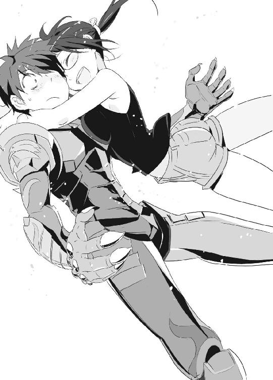
「わっ！」
謙吾は戸惑う。ＧＥＮＥＺ姿だが、頭部は露出している。そこに、七湖は大胆に頰擦りしてきた。
ゲームの中で、七湖は女戦士セブンとして積極的に話しかけてきた。ゲームで演じるキャラクターと現実の性格とは正反対の人間──なんて話はよく聞く。しかし七湖は、ゲームと同じノリで謙吾に接してきた。
「と、とりあえず、海神学園に来てほしい......！」
と、赤面しつつ謙吾は言った。
「え......？ 海神学園？」
七湖は怪訝そうな顔をした。無理もない。
彼女を安心させるために、謙吾は心をこめて微笑んでみせる。
「安心してほしい。ただの学校じゃない。とても安全な場所なんだ」
４
謙吾と七湖が出会って数時間後。
──日本、和歌山県。
紀ノ川から堤防と田んぼ一畝を挟んだところに、のどかな雰囲気の県立高校が存在している。周囲には田園風景が広がっていて、広い道路を走るのはバスか農業用のトラックくらいだ。校内にも植物が多く、小屋でニワトリやウサギを飼育している。
その高校に、武田爪兵という男子生徒がいた。
爪兵は茶道部に所属している。趣味はカメラで、修学旅行時に大活躍した。
この学校で唯一ピアノが弾ける男子でもある。
長身でメガネを着用し、成績は優秀。服を脱ぐと筋肉質だが、プールの授業は必ず見学しているのでそのことを知る人間は少なくとも校内にはいない。
いつも笑っているような細い目で、穏やかな声で話す。「あいつが怒ったのを見たことがない。温和で真面目で人の嫌がることを進んでやる、このあたりで一番のナイスガイ」というのが彼の校内での一般的な評価だった。
「ねえねえ、爪兵くん」
放課後、クラスメイトの女子が話しかけてくる。
「今度合唱部の手伝いしてくれないかな......日曜日の練習なんだけど、いつもピアノやってくれてる部員に予定が入っちゃって......」
「日曜なら、大丈夫だと思う」
「本当？ ありがとう......！ 休みなのに、ごめんね」
「いや、みんなのためになんかできるんなら、俺も楽しいよ」
帰る途中、今度はクラスメイトの男子が話しかけてくる。
「一個、頼みたいんだけど......」
「なんだよ」
「飼育小屋の当番、一日だけかわってもらえねーかな？ 野球部の特別練習が入っちゃってさ」
「いいよ」と、爪兵は笑って即答。
「やった！」
「でも、今回だけだからな。なんかおごってくれ」
「了解了解！ マジ感謝！」
真面目だが、それだけではない。普通ならただの優等生は厭われるが、爪兵は違った。よく遊び、運動も決して不得意ではない。頭の回転が速く、困っている人間を見かけたら放っておかない。誰からも一目置かれる存在だった。
そんな爪兵が老いた両親と暮らす一軒家の前に、一台の高級スポーツカーが停まっていた。田舎の風景にまったく溶け込むことのない、アストンマーチンのＤＢＳ。ドアを開けて、爪兵はごく自然に助手席に乗り込んだ。
「......ふん」
爪兵の顔から急に穏やかさが消えた。いつも笑っているような細い目が、うっすらと開いて鋭く光る。唇には冷ややかなものが宿り、そこはかとなく横柄な雰囲気が漂う。
アストンマーチンの運転席には、サングラスをかけた若い女がいた。金髪で、レディース・スーツ姿。タイトスカートがやけに短く、過剰な色気を醸し出している。
民間軍事会社──バビロン・メディスンの工作員だ。
確かドイツ人で、名前はマルゴといった。
「呼び出しか」と、爪兵。
「はい」マルゴはうなずき、車を出した。
「これを言うのはたぶん四度目だが、こんな目立つ車で迎えにくるのはやめてくれ。知りあいに見られたら困る」
「次回気をつけます」
「前回も同じことを言ったぞ、お前」
武田爪兵は正体を隠しているが、バビロン・メディスンの社員だ。
暗号名はニムロッド２。
目的のためなら手段を選ばない、どんな汚れ仕事も確実にこなすことで知られている。
爪兵を乗せ、マルゴが運転するアストンマーチンは関西国際空港まで移動。
バビロン・メディスンの擬装軍用機で、ドバイへ。
ドバイは、アラブ首長国連邦を構成するドバイ首長国の首都である。アラビア半島のペルシア湾沿岸に位置している。
急速な近代化を果たした中東における貿易・商業の中心地。原油高を背景にした未曾有の好景気と、有力な企業が集まった経済特区によって、ドバイは世界でも指折りの超高層ビル群を形成するにいたった。現在は石油取り引きや金融だけでなく、豪華絢爛な観光地としても成功しつつある。
ドバイ首長国は経済特区で企業優遇の税制をしいているので、いくつかの巨大な多国籍企業が本社を置いている。
バビロン・メディスンもその一つだ。
二四時間休むことなく稼働するドバイ国際空港の近くに、バビロン・メディスンの本社ビルは建てられた。すでに本社として機能しているが、建物が完成しているわけではない。今もさらなる高みを目指して拡張工事が続いている。予定通り完成すれば、世界で最も高いビルとされているブルジュ・ドバイの八一八メートルという記録を、さらに五○メートル上回る高さになるという。
バビロン・メディスン本社ビルは現時点一六○階建て。台形の巨大なブロックを積み重ねたような重厚な外観。その台座にあたる一階の面積は、東京ドーム一六個分に相当する。
ドバイの住民たちは、このビルを敬意と畏怖をこめて──、
バベルの塔、と呼んでいた。
ドバイに到着した武田爪兵は、まっすぐバベルの塔に向かった。
秒速二○メートルという、高速エレベーターでバベルの塔一三三階に移動。マルゴとともにエレベーターを降りると、そこは爪兵が所属する試作実験戦分隊「ニムロッド」の待機室だ。
待機室の壁はすべてガラス張りで、近未来的なドバイの摩天楼を一望することができた。中央には人工の滝が設置され、清涼感を演出している。
ニムロッドのメンバーは、爪兵を含めて四人。しかし今この待機室にいるのは、爪兵のパートナー──暗号名ナイチンゲール２、アンナトゥリー・コルサコフだけだった。
ちなみにマルゴはただの世話係で、人数には入っていない。
アンナトゥリーは壁際に佇んで、雲の動きを眺めてぼんやりしていた。
「あ......」
爪兵に気づいて、小さく口を開ける。
彼女はナイチンゲールと呼ばれる不思議な少女たちの仲間だ。常識外れの再生能力を持った不死の存在であり、他人と唇を重ねることで一時的にその力を分け与えることができる。しかし遺伝子的な相性があるらしく、キスをすれば誰でも不死にできるというわけでもない。今のところ、アンナトゥリーが不死にできるのは爪兵だけだ。
「新しい仕事です。敵はグリークスのＧＥＮＥＺ」
と、マルゴが言った。
「誰が出るんだ？」
すかさず爪兵が訊ねた。
「ユニット１には別の仕事が入っているので、グリークスの件はユニット２──爪兵さんとアンナトゥリーで処理します」
「どんな作戦になる？」
爪兵は舌なめずりをした。戦場に出ると興奮する。自分が生きていると実感できる......爪兵は、そんな根っからの戦闘狂だ。
「詳しい作戦要項はまだ決定していません。しばらくここ本社で待機を」
「マルチピード・アーマーの新型は？」
「『エンキドゥ』ですね。今回から投入です」
「よし」と、爪兵は指を鳴らし、太い犬歯をむき出しにして喜んだ。今までのマルチピード・アーマーは、鈍重すぎてあまり好みではなかった。新型のエンキドゥなら、ストレスなく戦闘が楽しめるだろう。
すると、アンナトゥリーが爪兵に近づいてきた。
「あの......爪兵さん......」
アンナトゥリーは小柄だ。正確な年齢はわからないが（本人も知らないらしい）、外見は中学生くらいに見える。ロングのプラチナブロンドに、透き通るような大きな青い瞳。彼女の首には、ある調査のためにデータ収集用の首輪が巻かれている。どこか危うく、そしてはかない。まるで蜃気楼のような少女。
「何が『爪兵さん』だ。馴れ馴れしく俺に話しかけるな」
「すみません......」
「で、何の用だ？」
爪兵はアンナトゥリーを冷たく見下ろした。
「これから、食事でもご一緒できればと思って......」
「誰がお前とメシなんか食うか、思いあがるなよ」
「............」
「時差ボケで辛いんだ。ひと眠りしてくる」
吐き捨てるように言って、爪兵は個室に向かった。
それからしばらく床に座り込んだまま悲しそうな顔をしていたアンナトゥリーは、涙を拭くような仕草のあと、自分の部屋に戻る。
一人きりになったマルゴは、爪兵が消えていった方向を見てつぶやく。
「......本当に哀れな男」
第三章 グアム、ビーチ、古い戦場
１
グリークス、海神学園。厳島アイナは、高等部学長室に謙吾たち「ビーバス＆バットヘッド」のメンバーを集めた。
「......思わぬところから事件が動き始めました......」
いつも通りのぼんやりとした表情で、こども学長アイナは続ける。なかなかそうは見えないが、冷静な指揮官でもある。
「......まさか......謙吾のオンラインゲームがきっかけで......ウィルトゥスの不正の証拠がつかめるなんて......」
七湖は現在、グリークスの保護下にある。情報部の護衛に囲まれて、学生寮の食堂で一休みしているはずだ。
バビロン・メディスンのベテルギウスが襲撃してきた一件以来、海神学園のセキュリティは比べ物にならないほど強化された。一見普通の学園でも、自衛隊や在日米軍が旅団以上の規模で侵攻してこない限り、びくともしない。
「謙吾が助けた少女の名前は布施七湖だ」
と、大迫が説明する。
「彼女が持っていたＵＳＢメモリを、情報部が解析した。その結果、本物であることが判明。どんな内容だったかは後回しにして......もうちょっとだけ布施七湖について続ける。彼女の戸籍は偽造されたものだったが、どこかで見たことがある顔だったんで画像照合システムを使ったらこれがビンゴだった」
画像照合システム。それを使えば、パソコンに取り込んだ画像をデータベースと照合し、似たような画像や関連情報を見つけ出すことができる。
「布施七湖は、違う名前でテレビに出てたことがある。もっと子供だったころ、特殊な能力を持った天才少女として」
「天才少女......？」
と、ユキナが首をひねった。彼女は、七湖に少なからず興味を抱いている。
「共感覚、って知ってるか？」
言いながら、大迫はタバコに火をつけようとして、しかしこども学長に睨まれて途中でやめた。しょぼくれた顔で続ける。
「世の中には、不思議な感覚を持っている人間がいる。共感覚者は、たとえば視覚が触覚に変換されるんだ。共感覚者が猫を見ると『温かい』と感じたりする。嗅覚が視覚に変換される共感覚者の場合、何か美味しそうな料理の香りを嗅ぐと、その料理が好きな色で輝いて見える。あるサヴァン症候群の天才数学者には、数式や数字が風景に見えるらしい。
有名なところでは、ロシアの心理学者Ａ・Ｒ・ルリアが、共感覚者のシェレシェフスキーという人物について調べた記録が残っている。シェレシェフスキーには常人離れした記憶力の持ち主で、二○○○ヘルツの音を聞くと彼は『赤い花火が見える』と言った。
で、布施七湖だ。テレビで彼女はこんなことを言っていたよ。『私には機械語やソースコードが絵画に見える』ってね。逆に『ゴルフボールの軌道や水の起こす渦を見ていると数式が見える』とも。だから彼女には、何かプログラムを前にしたとき、その特徴や弱点が一瞬で直感的に理解できてしまう。世界最高のハッカーというわけだ」
「......そして、大迫先生が後回しにしたＵＳＢメモリについてですが......」大迫の説明を、こども学長が引き継いだ。「......グリークスの情報部は、布施七湖が手に入れた証拠をもとにウィルトゥスの調査を開始......。すると、ウィルトゥス社長レオン・Ｍ・ジョンソンは......マネーロンダリングだけでなく......不正に蓄えた裏金で大量の兵器を購入していることが判明しました......」
「パソコン会社が兵器、ですか」
セルジュが呆れたように言った。
「......銃火器やバズーカ類はもちろん、イスラエルのメルカバ戦車最新モデル、イギリスのＡＳ90自走砲、アメリカの多連装ロケット砲システム......対戦車ヘリ、ガンシップ、爆撃機や戦闘機まで......世界中の武器商人から仕入れています」
「何かやる気なのは間違いないですね」と、謙吾。
「だが、その『何か』がまだわからない」大迫が口をへの字に歪める。「マネーロンダリングで告発できるだけの証拠はそろったが、それだとウィルトゥスの子会社までで捜査はストップしてしまうだろう。本社のレオン・Ｍ・ジョンソンが『部下が勝手にやったこと』と言ってしまえばそこまでだ。そこでグリークス上層部はマネーロンダリングの件は『見送る』ことにした。ここはあえて泳がせておいて、やつらが大量に購入した兵器で何をしようとしているのか突き止める」
「そこで......」
こども学長アイナが口を開く。
「あなたたちには......グアムに行ってもらいます......」
「──はあ？」
謙吾たちは一斉に目を白黒させた。
海神学園の夜──。
布施七湖は、高級ホテルのスイートのような学生寮のゲストルームにいた。
今日一日、驚くことばかりだ。
ウィルトゥスへの侵入成功。証拠を入手するが逆探知され、命を狙われた。危ないところを助けてくれたのが、民間軍事会社グリークスに所属するタイガこと大牙謙吾だった。
彼の正体は──ＧＥＮＥＺと呼ばれる特殊スーツを着込んで戦う本物の兵士だ。
インターホンが鳴った。七湖がモニタを覗くと、そこに謙吾の顔が映っていた。
「あ、はい──！」
七湖は焦った。
「ちょ、ちょっと待って......」
部屋の隅に姿見があったので、七湖はそれで自分の姿を確認した。家を出た時と同じ、タンクトップにホットパンツだ。だらしない、と思われないだろうか？ こんなことなら、海神学園の職員か誰かに着替えを用意してもらえばよかった。
それに、髪型も気になった。無造作ヘアといえば聞こえはいいが、要するに手入れが足りないぼさぼさ頭だ。学校は不登校気味で、半分以上引きこもり生活を送っていたので、人目を気にしない日々が続いていた。そのツケが回ってきたのだ。
ここ最近美容室に足を運んでいなかったことを、いまさら悔やんでも仕方ない。焼け石に水とばかり手で髪型を整えて、ドアの鍵を開ける。
「ど、どうぞ！」
顔が真っ赤になっているのが、自分でもわかる。七湖は、両親と離れて暮らすようになってから、人と直接話すのが苦手になっていた。それでも、謙吾だけは特別だ。コンビニの店員に「弁当を温めますか？」と訊かれてもどぎまぎするような七湖だが、謙吾には積極的な態度をとることができる。オンラインゲームでたくさんチャットしておいたおかげだろう。
七湖は、ネット上の人間関係をバカにする人間が嫌いだった。大人たちや評論家気取りは「ネットで知り合った友人なんて本物の友人じゃない」「オンラインゲームなんかで相手のことがわかるわけがない」と言う。七湖に言わせれば逆だった。
七湖の周囲にいる現実の人間たちは、本心を隠して近づいてきて、力を利用して金もうけをたくらんでいた。ネットで知り合った人間たちは違う。誰も七湖の力のことは知らないし、匿名掲示板やオンラインゲームでは自分を偽る必要がないので相手の本心が見えやすい。ゲームをプレイする中で培ってきた絆は、七湖にとって何よりも大事なものだった。
「何か不自由はないかな？」
と、謙吾が部屋に入ってきた。
命の恩人──まさかそんな言葉を、本当に使う日が来るとは夢にも思ってみなかった。
「俺のせいでこんなことになってしまって......本当にすまない。ごめん」
そう言って、謙吾が頭を深々と下げた。
「違うの！ やったのは私だから、気にしないで！」
謙吾と話していると、緊張する。体温の上昇が止まらない感じ。頭から湯気が出ているんじゃないかと不安になる。
「本当に......ゲームの『セブン』と話しているみたいだ」
謙吾は少し驚いているようだった。
「全然違う感じを想像してた？」
「ああ」
「その......もっとおしとやかな感じの方が良かったかな？」
「そんなことはない。セブンがいいキャラクターだったからこそ、今俺たちはこうして直接会うことになった。これでいいんだ。布施さんに会えて本当にうれしい」
謙吾は視線が強い。唇が引き締まっていて、真面目そうだ。適当なことを言ってその場をごまかすタイプには見えなかったので、幻滅されることを恐れていた七湖は謙吾の言葉に少しだけ安心した。
「で、何か用かな？」
「上からの命令で、君に頼みごとをしにきた」
謙吾は険しい表情になった。
「......頼みごと？」
「ウィルトゥスの悪事を暴きたい。それに、協力してほしい」
「どういうこと？」
「マネーロンダリングだけじゃなかったんだ」
謙吾は、大迫から聞いた話を七湖にも伝えた。
「危ない連中が、危ない道具を用意してる。放っておけば、罪もない人が死ぬ。俺は戦争に関わる犯罪を摘発し、虐殺を未然に防ぐためにグリークスで働いている」
「............」
「これから俺たちは、ウィルトゥスの研究所に潜入しなきゃいけない。だが、そのセキュリティを破るにはセブン......じゃなかった、布施さんの力が必要なんだ」
「私の......力？」
「共感覚を応用した世界最高のハッキング能力。その力を正義のために役立ててほしい」
「......っ！」
正義、と聞いて七湖の心が震えた。思わずうつむいて、拳を握りしめる。
「あ......俺、何か変なこと言ったかな？」
「ううん。変なことなんて、何も......ただ、感動して」
七湖は、自分のことを語るのは得意ではない。
それでも、謙吾には伝えたかった。自分の過去を、自分の思いを。
受け止めてくれそうな気がしたから。
「私は、小学校低学年のころには特殊な力に目覚めていたの......絵を描く要領で簡単なプログラムを組んだり、絵にいたずら書きをする要領でプログラムを書き換えることができた。それを知った両親は喜んで、私を天才少女としてテレビ局に売り込んだ......」
共感覚者の存在は、世界的に見ても珍しい。その中でも、七湖は特に稀な才能の持ち主である。日本のテレビ局はもちろん、海外からも取材が殺到した時期があった。
「でも、ある日両親は気づいた。テレビに出してお金を稼ぐよりも、私に銀行の管理コンピュータをハッキングさせる方が手っ取り早いって......」
そして、七湖の姿は忽然とテレビから消える。
「......私が稼ぎだしたお金を巡って、両親はケンカばかりするようになった。結局離婚して、親権の奪い合いを。私は、どちらの側につくこともなく、一人で逃げ出した......もう限界だったの。私さえいなければ、両親があんなに憎み合うこともなかった」
謙吾の鋭い目が、いつの間にか寂しそうに細められていた。
自分のせいで空気が重くなってきたので、七湖は無理に微笑んでみせた。
「私は、おかねが嫌い。おかねのためにお前の力を使え、って両親に言われたから。でも、タイガは正義のために、と言ってくれた」
正義のため──それは、とても魅力的な言葉だった。
七湖は、確かにハッキングを悪用している。だが、それは七湖が本来の戸籍を捨てて、ありとあらゆる社会保障を受けられなくなってしまったからだ。七湖は自分の生活費を、中東の石油成金や金融危機の原因となった投資信託会社から引き出してきた。もちろん、必要以上の豪遊をしたことはない。極端な話、部屋にはゲーム機だけあればいい。
「......ねえ、タイガ」
「謙吾、で」
「わかった。ええと......謙吾」
七湖は言いよどんだ。
子供の頃から頼まれることには慣れているが、逆はあまりなかった。
「私がウィルトゥスの陰謀を暴いたら......また、一緒にゲームしてくれるかな？」
七湖は上目遣いで言った。ぼさぼさの髪の毛が邪魔だった。
「もちろん、約束する」
謙吾が笑って即答してくれたので、七湖は安堵のため息をつく。
「じゃあ、指きり」
七湖が小指を伸ばして差し出すと、今度は謙吾の頰が赤くなった。
小指と小指をからめて、固く約束を交わす。
「......ちょっと気になったんだが」
「なに？ 謙吾」
「その、君の力......共感覚を応用した特殊ハッキングだけど、ゲームは大丈夫なのか？ 突然、共感覚が働いて変なことになったりしないか？」
「私の力は、無味乾燥な機械語やソースコードを『絵画』に翻訳するもの。コンピュータグラフィクスやポリゴンモデルから『数式』が見えることはたまにあるけど、人を楽しませるために作られたものは、基本的にそのまま楽しむことができる」
たとえばこんな感じ、と七湖はテーブル上にノートパソコンを開いた。東芝が出している世界最高級のシリーズ。買えば一○○万近くするカスタムモデルだ。
「これは、愛用のモバイルノートＰＣなんだけど......」言いながら、七湖はキーを叩く。「このＰＣには、特殊なシステムコードの構造解析ソフトと私の能力に合わせたクラッキング・ツールが一通り入ってる」
七湖は厚生労働省のホームページを呼び出した。
「これを解析して、機械語に翻訳」
すると、モニタ上に数字だけの列が並んだ。ＣＰＵに直接命令を与えるためのプログラミング言語。人間が読むための言語ではない。
「ホームページのビジュアルや情報がすべて機械語になったところで、私の力が働く......」
意識の集中──数字の羅列が、絵画になって浮かび上がってくる。
七湖が知っている絵画を脳が選択し、もう一度「翻訳」されるのだ。
厚生労働省のホームページは、名画と呼ぶには値しない、名前も覚えていないような日本人の画家が描いた風景画だ。その風景画では、富士山がまるで活火山のように描写されていて違和感がある。
その違和感こそが、このホームページの欠陥であり脆弱性なのだ。
弱点がわかれば、あとはそこをつくだけ。
浮かんできた絵に手を加えると、いつの間にかセキュリティを突破している。
七湖の特殊能力──直感的なハッキングだ。
「厚生労働省のサーバに侵入成功......ちょいちょい、といじって」
いたずら終了、ノートパソコンのモニタを謙吾に向ける。
「こういうことに」
七湖がいじったのは、厚生労働省のシンボルマークだ。赤と青の人間が、ハッキングによって二匹の可愛いうさぎに変わっている。その二匹は、謙吾に「ぺこり」とお辞儀をして、すぐに消えた。数秒後には、いつものホームページに戻っている。
「もっと色々できるけど、いたずらはこの程度に」
「すごいな......」
「絶対に、役に立てると思う。回線さえあれば、私に突破できないセキュリティはない」
七湖は絶対の自信をこめて言った。
「布施さん。任務には危険がつきものだ。俺たちのチームは精鋭だが、何が起こるのかは予測がつかない。引き返すなら、今のうちだ......」
謙吾が真剣な口調で言った。
「......この学園の外に出たら、また私は命を狙われるんでしょ？」
七湖がそう言うと、謙吾は重くうなずく。
「こんな......こんな状況は早く終わらせたい。危険は覚悟の上だよ」
セブン──布施七湖が、勇気を持った女の子でよかった、と謙吾は思った。ウェールズ年代記を運営しているウィルトゥスが「真っ黒」だとわかってずいぶん落ち込んだが、こうして直接七湖と話していると、あのゲームに費やした膨大な時間も無駄ではなかったような気がしてくる。
２
目立たないようにグリークスの専用機ではなく、成田空港からＪＡＬの便を使ってグアム国際空港に到着。入国理由は「史跡を巡る海外特別授業」。大迫伝次郎が引率の教師だ。大牙謙吾、堤彩離、岩清水ユキナ、セルジュ・ドラグレスク──即ちビーバス＆バットヘッドのメンバーは、全員海神学園の制服姿だ。そして今回は特別に、布施七湖も同行している。
空港からタクシーでホテルに移動。ホテルは、グアムの中心地であるタモンにあった。オーシャン・プラザという繁華街に面している、高級でも激安でもない標準的な設備が整ったホテルだ。男女が分かれて泊まるために、多人数用の大部屋を二つ借りた。しかし、七湖はどうしても他人と一緒では落ち着かないと言いだして一人だけ個室をとった。少し面倒だが、ここは繊細な少女にあまりストレスをかけないように希望を尊重することに。
もちろん旅行の資金はすべてグリークス、海神学園から出ている。カモフラージュのためにカードはダミー口座のものを使い、領収書はまったく違う学校の名前で切ってもらう。
タモンには、ホテルやショップが集中している、日本人の観光客ならほとんどが一度は訪れたことがある地区である。
「湿気が......」
と、グアムは初めてのユキナがつぶやいた。ホテルの前で、タクシーのトランクから荷物をおろす途中、ぎらつく太陽を見上げる。気候は一年を通して高温で湿気も多い。
「旅行シーズン前なのに、結構観光客がおるなあ」あたりをきょろきょろ見回しながら、セルジュが言った。「謙吾たちも含めて、日本人ばっかりや」
「グアムの観光客は九割日本人だってさ」と、大迫。
「布施さんは海外は初めて？」と、セルジュが訊ねた。
「......は、初めて......」
答えた七湖の声はか細く、謙吾と話している時とはまるで別人だった。あのおしゃべりで軽薄なセルジュも、話題を広げることができない。
「............」
七湖は飛行機で移動している間からずっと口数が少なかった。謙吾に対しては積極的な七湖だが、他の人間とはまずまともに話さない。目も合わせようとはしない。そもそも彼女の精神面はいわゆる引きこもりに限りなく近いのだ。
「布施さん」
そんな七湖を心配して、謙吾が話しかけた。
「最初のうちは緊張するかもしれないけど、大丈夫。ユキナも彩離もいいヤツだから」
「......う、うん」
「セルジュはアホだけど強い。君を守る力を持ってる」
「なんでそこで余計なこと言うかなあ......謙吾よ」
眉間にしわを寄せて、セルジュが謙吾にからむ。腕を首に回して締めあげようとするが、やすやすと相手に技を極めさせる謙吾ではない。逆にセルジュの手首をとる。
「なにすんだ、このヤロウ」
「お、謙吾。やんのか」
小学生の兄弟のように、取っ組み合いのケンカを始めそうになる謙吾とセルジュ。
そんな二人を見て、七湖が「くすっ」と笑った。
苦い顔をしたユキナが、左右の拳で謙吾とセルジュを同時に軽く小突いた。
「知り合ったばかりの女の子に笑われて、恥ずかしい」
「は、はい......」
「す、すんまへん......」
自分たちの部屋に荷物を置いてから、全員ホテルのロビーに集合した。
「ウィルトゥスは、グアム南端の沖合にある小島を丸ごと買い取り、最先端技術の研究所を開設した」大迫が言う。「布施さんが集めた証拠によれば、研究所というのは擬装で、その実態はウィルトゥスが裏で行っている非合法活動の拠点だ。研究所のメインフレームに侵入することができれば、あの会社が進めているすべての陰謀が明るみに出る」
メインフレームとは、企業や研究所の活動の中心となる作業に利用される大規模なコンピュータのことだ。
「ただ、これが一筋縄ではいかない。ウィルトゥスはメインフレームに最新のニューロ・コンピュータを採用。その特性を生かした電子戦対応の高度なセキュリティ・プログラムが組まれている上に、極めて閉鎖性が高いので残念ながらネット経由での侵入は不可能。そこで俺たちの出番となる」
出番、と聞いて謙吾、セルジュ、彩離の三人は身を乗り出した。
大迫は続ける。
「ビーバス＆バットヘッドは、布施七湖とともにウィルトゥスの南太平洋研究所に潜入。敵の警備は軍隊並みの重装だと推測されるので、できる限り交戦は避ける。目的は、布施七湖をメインフレームが設置されたマシンルームまで連れていくこと。そこで、直にハッキングを行うわけだ」
「............」
自分がやるべき仕事を具体的に示されて、七湖は固唾をのんだ。
「そんで、どないしましょか？」
セルジュが訊ねると、
「遊んでてよ」
大迫が軽く答えた。
「......大迫先生、あんまり適当なことを......」
謙吾は頭を抱えてしまう。
「いや、マジでマジで」大迫は飄々とした態度を崩さない。「グリークスはアメリカ政府とはあんまり仲が良くない。アフガンやイラクで邪魔したことがあるからね。で、ここグアムはアメリカ領だから。準備が大変なんだよ。銃器はなんとか運び込んだけど、ＧＥＮＥＺや潜入用の装備はまだ」
「俺一人で突っ込んでもええやん」
「自信過剰はそのうち身を滅ぼすよ......ウィルトゥスくらい悪い会社になると、小さな国の軍隊相手にするよりもはるかに恐ろしい。とにかく、準備が整ったら連絡するから。それまでは英気を養っておいてくれ」
説明を終えると、大迫はさっさと姿を消してしまった。南国情緒漂うホテルのロビーに取り残された少年少女たちは──、
せっかくなので、ビーチで泳ぐことにした。
──翌日の午前中。
「いいのかなあ......」
と、謙吾がつぶやく。
「日本の梅雨時と盆地の夏を合わせたような、この高温多湿な気候の中で、それでもひと泳ぎしてさっぱりするのが嫌っちゅーやつはただのマゾかアホや。第一、この状況じゃ他にやることないやろ」
謙吾とセルジュは、水着に着替えて海に臨んでいた。水着は、色が違うだけで似たようなデザインのトランクスタイプ。天気は快晴。上半身裸になってしまえば、高い湿度もなんとなくやり過ごせる。全身で熱い風を感じて、他の生徒よりも一足早く夏休みに入ってしまったような錯覚を味わう。
謙吾の体は、戦闘のせいで傷跡が多い。あんまりひどい傷跡は皮膚移植手術で隠してあるが、それでもカバーできないほどだ。対して、セルジュの体はきれいなものだった。激しい戦いを何十年も経験してきたのに傷一つないのは、セルジュが人間ではないことを示す証拠の一つだ。
謙吾たちが泊まっているホテルの専用ビーチなので人は少ない。タモンビーチは感動するほど美しい海でもないが、千葉や神奈川といった関東圏よりははるかにマシな気がする。
少し遅れて、女性陣もやってきた。
ユキナ、彩離、七湖の三人。
謙吾たちは水着を近所のショップで買った。しかし、ただ一人のんきな彩離だけは「もしかしたら必要になるかもしれない......」と、自前の水着を持ってきていた。青白ストライプ模様のスポーティなセパレーツだ。筋肉質でしなやかな彩離の体によく似合っている。
どーん、とそれほどのボリュームでもない胸をはっている彩離に比べて、ユキナはもじもじと体を小さくしていた。それもそのはず、ユキナが着ている水着はかなり小さめの黒いビキニで、豊かな体の隆起がほとんど隠されていなかった。
「うう......恥ずかしいな......」
そして顔を赤くしているのは、ユキナだけではなかった。七湖もそうだ。
七湖はビキニではなく白いワンピースだったが、やはりアメリカ人向けにデザインされたものらしく露出度が高かった。スレンダーな体形を惜し気もなくさらし、くびれた腰からは高校生とは思えないほどのセクシーな魅力が香る。
「どうしてそんな、その......派手な」
謙吾が困った顔をして訊ねると、ユキナは顔を真っ赤にして怒鳴った。
「合うサイズの水着が、近所で他に売ってなかったんだ！」
「布施さんも......？」
「うん」
「うおお......ほおお......かっこいい......」
彩離が、アホのような顔をして七湖の細いウエストを凝視していた。
「じ、じろじろ見ないで......」
「ご、ごめん......」
全員そろったところに、もう一人、水着姿の女性が近付いてきた。
「おつかれさま」
そう言ったのは、ＩＣＰＯのジャニス・ウィンだ。
「おおっ」
ジャニスを見て、セルジュが歓声をあげた。さすがは大人の働く女性。大胆な赤いマイクロビキニを着ていても、ユキナや七湖と違って堂々としている。
「ジャニス・ウィン。あんたも来てたのか」と謙吾。
「微力ながら、ＩＣＰＯにも手伝わせてもらいます。地元警察やＦＢＩに、少しくらいなら圧力をかけることもできますし」
「じゅうぶん心強いさ。外国の警察ともめるのは面倒だ」
真面目な話をする謙吾とジャニス。少し離れたところで、うっとりとした表情のセルジュが「やっぱ、ええなあ......」とつぶやく。
「男が苦手なおかたい捜査官に玉砕覚悟で特攻？」
セルジュに、いたずらっぽい笑みを浮かべた彩離が話しかけた。
「ええか彩離。ジャニスさんは、男が苦手なんちゃうで。潔癖症気味で、男の汗や体臭が苦手なだけや。それなら俺さえ清潔にしとけば......」
「めげないねえ。あんたも」
「ええから、見とき」
謙吾がジャニスから離れた瞬間を狙って、セルジュは間合いを詰めていった。
「ジャニスさん、相変わらず美しいですね」
「あら、お世辞でも嬉しいです」
と、ジャニスは屈託なく笑う。可愛い。
「すみません、いきなりですが......恋人はいますか？」
「はあ......」突然の質問に多少戸惑いつつも、ジャニスは答える。「今はいませんね。仕事が忙しくて」
「どんなタイプがお好みですか？」
「とにかく、清潔な人。あとは......相手は年上がいいですね」
「じゃあ、俺でぴったりやないですか」
「......はい？」
ジャニスは首を傾げた。
「こう見えてもジブン、トシは六○超えとるんです」
セルジュは真面目な顔で言った。すると、ジャニスは「ぷっ」と噴き出す。
「からかわないでくださいよ、もう」
「いや、実際にノルンマンディー上陸作戦や朝鮮戦争にも......」
「はいはい、そうですね」
セルジュは結局、軽くあしらわれた。肩を落として暗い顔をするセルジュ。
「本当のことだったのに、嫌われちゃったな」
一部始終を見ていた彩離が同情したように言った。
「......なんで信じてもらえへんのやろ」
「あんたの人生、あっさり信じる方が難しいと思うけど......」
「何かあったのか、セルジュ」
様子がおかしいことに気づいて、謙吾もやってきた。
「いや、別になんもあらへんよ」
「そうか......何があったのかは知らないが、みんなで遊べばすっきりするさ。ユキナがビーチバレーやりたいって言ってるんだけど」
「ほいきた。楽しそうやんけ！」
セルジュはカラ元気をだして叫んだ。
そんな彼の背中を見て、彩離は「不憫なやつ......」と独りごちる。
ビーチバレーも一段落して、謙吾はホテルから借りたビーチベッドとパラソルを組み立てた。ぎらつく日差しをパラソルが遮り、謙吾はベッドの上に体を横たえて苦い顔をする。あんまり平和で爽やかな光景が続くと、逆に不安になってくる。
「ふう......」
世界を少しだけでも平和にするため戦っているはずなのに、グリークスの仕事を長くやっていると平和な状態の方が異常だと思えてくるから不思議なものだ。
気が緩む前に、どこかで締め直しておきたい。
「謙吾」
砂をシャリシャリ鳴らしながら、セクシーな水着の七湖が近付いてきた。彼女は、左右の手に一つずつジュースのカップを持っている。
「飲み物持ってきたよー」
「ああ......」
「コーラでよかったよね？ グアムのドリンクは安くて大きい！」
謙吾は、なんとなく七湖の足下を見た。そこにたまたまナマコがうちあげられていて、嫌な予感を覚える。七湖はまったく気づいていない。
「あひゃっ！」
案の定、七湖はナマコを踏んですっとんきょうな大声をあげた。思い切りすっ転んで、持っていたコーラを氷ごと謙吾の体にぶちまける。
「うおおッ！」
いくら温暖なビーチとはいえ、冷え切った飲み物を肌に直接かけられたのだからたまらない。謙吾は悲鳴をあげてのたうちまわる。
「ご、ごめん！」
七湖は慌ててビーチベッドに引っ掛けてあったタオルを手に取り、謙吾の体を拭く。自然と、二人の体が近づく。
「あ......」
「う......」
水着の薄い布地越しに、七湖の胸が謙吾の胸板に触れる。その柔らかな、しかし弾力を秘めた感触に謙吾は戸惑う。
「体、拭かなきゃ......」
七湖はタオルを持った手を動かし続けた。その手が下半身まで伸びてきて、謙吾は思わずのけぞる。
そんな二人を、いつの間にか接近していたユキナが見下ろしていた。
「向こうに、シャワーがあるから使うといい、謙吾」
「ユ、ユキナ......！」
「ふん......」と、七湖は警戒した顔つきで謙吾に抱きついた。お気に入りのおもちゃを見つけた子猫のように、両腕を謙吾の体にからませて、ユキナには挑戦的な視線を送る。
謙吾の全身からばっ、と冷や汗が噴き出した。──積極的にもほどがある！
「布施さんはどうして謙吾にくっついてばかりなんだ......」
ユキナは腕を組んで仁王立ち。涼しい顔をしているが、唇の端が強張っている。
「チームメイトの私たちとは、あんまり話してくれないし」
「私と謙吾は......一つ屋根の下で枕を並べて寝た仲だもん。ゲームの中でだけど」
と、七湖。ユキナはその言葉に衝撃を受ける。
「ま、枕を並べて......!?」
「ユキナ！ 早とちりするな！ ゲームの中だって言ってるだろ！」
謙吾がすかさずフォローを入れた。
「はいはいはい、そこまで！」
と、彩離もやってきた。七湖を謙吾から引きはがし、ユキナの手をつかむ。
「ジャニスさんがココナッツを買ってきたんで、それでスイカ割りをやろう！ あ、違った......ココナッツ割りだった」
「でも......」
七湖が渋ったが、彩離は強引だった。
「ほらほら、急いだ急いだ！」
彩離が、七湖とユキナを連れて離れていく。
「助かった......」
安堵のため息をつく謙吾に、セルジュが泣き顔で詰め寄った。
「謙吾ぉおおお......」
「な、なんだよ！」
「ギャルゲーのやりすぎで、脳が腐っとるんちゃうか!?」
「え、なんで......」
「とにかく、お前がしゃっきりせえへんと始まらんのや！ 気ぃつけぇ！」
「よくわからんが......わかった」
ギャルゲーには強いが、生身の女の子には弱い謙吾だ。こんなにも強烈な好意を向けられるのは、生まれて初めてだった。謙吾は胸の奥になんだかむずむずとしたものを覚えるが、その正体がわからない──。
（まったく......なんだこれは）
たっぷり楽しんだ六人は、ビーチのオープンカフェで昼食をとった。海が見えるテーブルに、ボリュームたっぷりのアメリカらしい料理が次々と並ぶ。海外旅行の不思議なところは、やたらと腹が減って、いくらでも食べられそうな気がしてくることだ。
「昼間っからロブスターにステーキ！」
並んだ料理を見て、ユキナが半ば呆れたような声をあげた。
「......値段、高くないの？」
と、心配そうに彩離。
「どうせ費用は全部グリークス持ち。気にせんでええわけよ」
そう言って、セルジュはロブスターにかじりついた。
謙吾も最初に口をつけるのはロブスターだ。
ロブスターのオーブン焼き。殻にみっしりと詰まった身肉に、レモンとガーリックがほどよく効いていて頰が落ちそうになる。あと、フレッシュな牡蠣も美味い。焼いてよし、フライにしてよし。グアムでは牡蠣と一緒にサルサソースがついてくることがあるが、その組み合わせもそこそこいける。オープンカフェなので、食べながら陽光や風を感じることができる。海の近くだと、倍美味く感じる。
腹ごしらえをすませた六人は、海神学園の制服に着替えた。それから謙吾の提案で、ジーゴ地区に向かうことに。
タモンからジーゴ地区までは車で一五分ほど。レンタカーをジャニスに運転してもらう。謙吾もセルジュも彩離も車の運転はできるが、高校生が外国で無免許運転していたら警察に見つかったとき言い訳がきかない。国際免許を持っているジャニスが適任だ。
「で......そのジーゴ地区ってのはなにがあんの？」
彩離が訊ねた。
「せっかくグアムに来て、ただ泳いで遊ぶだけじゃダメだと思ってな」
と、謙吾。
グアム島北部、ジーゴ地区には南太平洋戦没者慰霊公園がある。
「グアムには先住民がいる、チャモロ民族だ。まず、チャモロのグアムを植民地にしたのが当時絶頂期のスペインだった」
謙吾は、歴史に詳しいツアーガイドのように語る。
「一八九八年、アメリカとスペインの戦争が始まる。その結果、グアムはアメリカ領に。そして太平洋戦争時は、日本領だったこともある。本土爆撃を防ぐための、絶対国防圏ってやつだ」
「確か太平洋戦争でグアムを攻撃したのは日本帝国海軍第一八航空隊。そして陸軍南海支隊、海軍第五特別陸戦隊」と、セルジュが言う。「米国海軍と海兵隊を相手に上陸作戦を決行。三日でグアムを占領したんや」
「さすが、あの時代から生きてるセルジュは詳しい」
「当時、俺はヨーロッパを転戦していて、太平洋の動向も気にはしとった」
そんな謙吾とセルジュの会話を聞いて、事情を知らないジャニスや七湖が目を丸くした。
六人は車を降りて、南太平洋戦没者慰霊公園の敷地内に足を踏み入れた。
高さ一五メートルの白い慰霊塔を見上げる。
巨人が合掌しているような、不思議な外観だ。
公園の入り口の近くにある坂道を下りていくと、ジャングルといくつかの洞窟がある。
又木山戦闘司令部壕跡だ。
「やがて戦況は日本が不利になり、米軍の再上陸作戦が始まった。二万二○○○の日本軍と五万五○○○の米軍が激突して、日本軍の九割が戦死。守備隊の指揮官だった小畑中将は、最後まで生き残った数十人とともに、まさにこの場所で自決した」
タモンの繁華街やビーチと違って、園内には粛々とした空気が流れていた。ジャングルには、今にも銃声が聞こえてきそうな緊迫感も漂っている。
「俺は別に『あの戦争』を肯定するつもりはないし、俺みたいな若造が『あの戦争』の意味や価値について偉そうに語る必要はないと思う」
と、どこか遠くを見つめながら謙吾は言った。
「......ただ、何が起きたのかくらいは知っておいてもいいんじゃないか。このグアムは、ただの華やかな観光地じゃない。戦争と平和の歴史があるんだ」
謙吾は合掌し、両方の瞼を固く閉じた。巻き込まれた一般の市民、そしてこの島を巡る戦いで死んでいった様々な国の兵士たちに、安らかな眠りと祈りを捧げる。
３
──騒がしい昼が過ぎて、グアムの夜が始まる。
ユキナは、女性陣の大部屋で詰め将棋をやっていた。椅子に座って背筋を伸ばし、片手で詰め将棋の問題集を持ち、テーブルの上にマグネットがついた薄っぺらい将棋盤と駒を広げている。ユキナにとっての携帯ゲーム機とは、簡単に折り畳める携帯用将棋セットだった。
彩離はベッドに寝そべって、何か面白い番組はないか探している。リモコンをいじっているのはなんと足の指だ。
彩離は足癖が悪い。恐鳥型のＧＥＮＥＺを使いこなすために、サバット、カポエイラ、テコンドーといった足技が強い格闘技ばかりを特訓したせいだと自分で主張しているが、謙吾やセルジュは「ただ行儀が悪いだけだろう」と言っている。
「なんかこう、昼間は楽しいんだけど、旅行中って夜は退屈だよね」
何もいい番組がなかった。ため息まじりに彩離は言った。
「私はずっと田舎育ちだから、これくらいで退屈だなんて思ったりしない」
と、落ち着いた口調でユキナ。
「おおー。さすが」
さらに彩離はリモコンをいじくる。
「次の場所までに日本に帰れたらいいんだけど......」
「次の場所って......彩離は大相撲好きなのか？」
「うん、大好き！」
興奮したのか、彩離はぷしゅー、と荒い鼻息を漏らした。
「ああ、ちょっとわかるな......田舎でお年寄りと一緒によく見てたよ」
「だって、あんな太った男たちが汗にまみれてくんずほぐれつ......」
と、彩離は身をクネクネさせる。
それを見てユキナは少し引いた。
「なんか気持ち悪いな......ちょっとわかる、と言ったのは訂正する」
「ええー」
「しかしそれにしても」と、ユキナは話題を変えた。「謙吾は何をしてるのかな......」
「気になるなら、声をかけにいったら？」
「ああ、確かに」
「布施七湖さんと一緒かもしれないよ。あの子、積極的だから」
「謙吾はずいぶんあの子に構う......」
「今回の作戦の最重要人物だからねえ」
「ふうん」
ユキナは納得がいかないようだった。不機嫌そうな表情だ。本当にもう、わかりやすいんだから......と、彩離は微笑してしまう。
「......心配しなくても、謙吾はユキナのこと大好きだから大丈夫だと思うョ」
彩離は小さな声で言った。それを認めるのはちょっとだけ悔しかったが、本当のことだ。
「ん......？ 今なにか言ったか？」
「べ、別に」
声のボリュームを絞ったので、ついうっかり口にしてしまった恥ずかしいセリフはユキナの耳に届かずにすんだ。慌てて再び足の指でリモコンをいじりだす彩離。しかし何か間違ったボタンを押してしまったらしく、テレビに全裸の金髪女性同士が卑猥に絡み合う光景が映った。
「わ！ 間違えてエロビデオつけちゃった！」
「バカ！ さっさと消せ！」
「ゆ、有料チャンネルかな、これ!?」
顔を真っ赤にしてぎゃあぎゃあと騒ぐユキナと彩離だった。
一方そのころ、男性陣用の大部屋では。
大迫はＧＥＮＥＺをグアムに入れるために苦労していてあちこち走りまわっている。そしてセルジュが風呂に入ったので、今大部屋にいるのは謙吾一人きりだ。さて何をしようかと考えていたら、誰かが部屋をノックした。
ドアを開けると、そこに立っていたのは七湖だった。
「あのさ」
恥ずかしそうに七湖が言う。
「ちょっとだけ二人で出かけない？」
相変わらずの大胆な誘いに謙吾は少しだけ驚く。
──こんな夜に、二人きりで。
「......どこに行くんだ？」
「アメリカといえば、ショッピングモール。そこで買いたいものがあって」
「了解、買い物だな」
謙吾はすぐに準備を整えた。七湖は作戦にとって重要だし、個人的にもとてもいい友人になれそうだと思っている。彼女が外国の夜を一人でぶらついて何かトラブルに巻き込まれるようなことがあったら、あとで大迫に何を言われるかわからない。
七湖と廊下を歩いていると、部屋を飛び出してきたユキナとばったり出くわした。
「あ、ユキナ」
「謙吾......！」
「どうした、血相変えて飛び出してきて。部屋で何かあったのか？」
「彩離が部屋で有料のえっ──」
何か言いかけて、ユキナは慌ててごまかす。
「なんでもない。ちょっと騒がしかったんで外で散歩でもしようかと。そっちは？」
「ショッピングモールに買い物に」
謙吾が答えた。
ユキナは謙吾の隣にいる七湖を見て、一瞬「むっ」という顔をする。
「......私も行く」
謙吾と七湖とユキナ、三人でタクシーに乗ってショッピングモールに向かった。
グアムのショッピングモールは、とにかくスケールが大きい。最近日本にも同じようなコンセプトの複合商業施設が増えてきているが、敷地面積のせいもあって規模では比べ物にならない。
目的地は、そんな巨大モール内のゲームショップだ。
「部屋でやるゲームがなくて、困ってたの」
七湖は、ＤＳとＰＳＰを購入した。これも、グリークスの予算で処理する。
ついでに、アメリカのゲームショップならではのソフトラインナップを見物する。商品の数が多く、ポップや等身大人形を使ったディスプレイも派手だ。活気がある。
「見たことのないゲームがたくさんある......」
そう言って七湖が手にとったのは、映画『３００』のゲーム版だった。
「ＤＳもＰＳＰも基本リージョンフリーだから、気になるものがあれば買っていけばいい。日本では販売できない残酷すぎるやつとか」
「そっか」
ゲーム機やゲームソフトに囲まれて、七湖の目が輝いていた。昼間、ビーチで遊んでいた時よりもずっと楽しそうだ。謙吾は、俺と彼女はよく似ているな、と思った。そんな二人がたまたまオンラインゲームで出会って、巨悪を討つために協力している。
「布施さんは、本当にゲームが好きなんだな」
「うん、家の外に出なくていいし」
「外が嫌い？」
「好きじゃない。でも、いい展覧会があれば、美術館には足を運ぶようにしてる......ゲームの次に、絵を見るのが好き」
「なるほど」
それにしても、と謙吾はため息をついた。さすがアメリカ領グアムと言うべきか。ＸＢＯＸ３６０のコーナーが広い上に充実していて驚いたのだ。
「やっぱり、アメリカ人のゲーム機なんだなあ......」
「いいソフトが多いのに日本ではぱっとしなくて、もったいないよね」
「そうだよなあ。もったいないよなあ」
やっぱり、七湖とは話が合う。
しかし──、
「うー......」
その一方で、ユキナは未知のものに囲まれて、居心地が悪そうだった。それに気づいた謙吾は申し訳なく思う。離れていた時期があるとはいえ、幼なじみだ。何がユキナの得意分野で何が苦手かくらいはよくわかっている。
「無理しなくてもいいのに......」
謙吾は心配して言った。
「無理なんかしてない」
ユキナは頑固な口調で答える。
「別に意地悪で言ってるわけじゃなくて」
「謙吾、私もげーむをやる！」
突然、ユキナは高らかに宣言した。
「──え？」と、謙吾は目を白黒させる。
「ぷりーず」と、ユキナは店員に下手な英語で声をかけた。「えーと......でぃーえすとぴーえすぴーをください」
七湖に、妙な対抗心を燃やしている。
ユキナがレジで代金を支払っている間に、七湖が話しかけてきた。
「へえ、岩清水さんも買うんだ」
「ああ、急にどうしちゃったんだろうな......」
「謙吾は、何か携帯ゲーム機は持ってきてるの？」
「ああ、いつもこれを」
謙吾はポケットから初期型のゲームボーイを取り出し、七湖に見せる。
そのゲームボーイは表面が焦げていて、銃弾がかすめたような痕跡もあった。
「こんなにボロボロだけど、こいつはまだ動くんだ」
「それは......？」
「たとえばアフリカや中東みたいな、内戦や戦争がずっと続いている場所にも子供たちがいる。当たり前の話だけど」
「......うん」
「そんな死と隣り合わせの子供たちにも、日本のゲームは人気があるんだ。特に、安く手に入る携帯ゲームが。ＡＫ47アサルトライフルを構えて戦場を走りまわっているような少年が、一昔前のゲームをやって目をキラキラさせて喜んでる。──だから俺は、ゲームが好きだ。どんなに悲惨な戦場にも、夢や笑顔を与えることができる」
謙吾は目を細めて昔のことを思い出しつつ、続ける。
グリークスに入る前、父親に送り込まれた地獄。
「とにかく、ゲームボーイはタフだからね。戦場向きなんだ。このゲームボーイは、友人の少年兵からもらったもので......思い入れがある」
「その友達さんも......グリークスの人？」
「いや、俺がグリークスに入る前の仲間だ。もう死んでるよ」
「あ......」
七湖が、しまった、という顔をした。
「布施さんは......」
謙吾は話題を変えようとした。すると、七湖がそれを遮って申し出る。
「もう『布施さん』はやめてほしいな」
「じゃあ......七湖さん」
「うん。いい感じ」
４
「せっかくだから、映画観ていこうよ」
大型のショッピングモールだ。当たり前のように映画館も入っている。日本のシネマコンプレックスと同じような雰囲気だが、やはり広さが違う。映画館のロビーに小さなゲームセンターがあるほどだ。多数のスクリーンで、八本の作品を上映している。
「時間に余裕があるから平気だと思う。ユキナは？」
「グアムで時代劇映画は......やってないよな。でも、後学のために最近の映画を鑑賞するのもやぶさかではない」
やぶさかではない、って──。その言葉のチョイスに、謙吾は思わず苦笑した。手間を惜しむ気はない、って言えばいいのに（それでもかなり硬い言い回しだが）。時代小説と時代劇が好き過ぎて、若者らしくない言葉遣いになる。
チケットを買って、映画館の中へ。他に時間が合うものがなかったので、仕方なく超残酷という評判のホラー映画を観ることに。大量のピラニアが人を食いまくるらしい。謙吾と七湖はホラーも平気だが、時代劇以外をあまり観ないユキナがどうなるかわからない。
席につく前に、ソーダとポップコーンを買った。噂には聞いていたが、アメリカでのＳサイズは日本のＭサイズに近い。
謙吾が後ろから四列目の座席に座ると、七湖が右側に、ユキナが左側に座った。両手に花といえば聞こえはいいが、両側から妙なプレッシャーがかかってきて辛い。
短いＣＭと予告編のあと、本篇が始まった。
想像以上の過激な内容だ。
やり過ぎなほど凶暴に誇張された食人魚が、一瞬で人間を肉片に変えて文字通りの血の海になる。日本の劇場なら下手をすれば退席者が出そうな勢いだったが、アメリカ人の観客は老若男女が大爆笑だ。海外の映画ファンにとって、過剰な暴力や死体描写はギャグシーンなのだ。謙吾はハリウッドのホラーやアクションを見慣れているので、残酷シーンで笑いが起きることがなんとなく理解できる。しかしユキナは──、
「なんだ謙吾......なんでこんなにリアルなんだ!?」
涙目で謙吾に助けを求めてきた。スクリーンにショッキングな光景が映るたびに、びくんびくんと体が大きく震える。
「最近の映画だからＣＧが......」
「最近の映画なら標準的なＣＧだよ」と、七湖。「結構面白いジャン」
「うう......リアルすぎるぅ......本当にやってるとしか思えない......うわあああ！」
ＲＰＧ風にいうと、すでにユキナのＨＰはゼロだった。精神的なことだから、ＭＰがゼロといった方が正しいかもしれない。とにかく、両目にたっぷりと涙をため、頰を紅潮させて身をよじらせていたユキナは、クライマックスの海水浴大虐殺でとうとう「ほうっ......」と気を失ってしまった。
「ゆ、ユキナッ......!?」
「まさか、映画で失神って！」驚くというより、呆れる七湖。
こうなるともう、映画鑑賞どころではなかった。
タクシーでホテルに戻って、謙吾は七湖を部屋まで送った。
ユキナは、いわゆる「お姫様抱っこ」で謙吾に両手で抱えられている。
最初は病院に行くことも考えたが、脈はしっかりしているし瞼を開いてチェックした瞳孔も異状がなかったので、少し休ませればすぐに回復するだろうと考えた。謙吾には戦場医療の心得があるので、こういう状況での判断には自信があった。
「映画、もう少しでラストだったのに途中で出てきて......すまない」
「いいよ、謙吾は悪くないから」
「いつかこの埋め合わせを」
「うん、期待してる。今日はありがとう......おやすみなさい」
「ああ、じゃあまた明日」
七湖と別れて、謙吾はユキナを抱えたまま女子の大部屋に向かって歩いていく。その表情を見て、謙吾は「......寝顔は昔のまんまだな」と独りごちた。
ユキナと謙吾、幼なじみの二人。色々なことが変わってしまった。もう謙吾はいじめられっ子ではないし、ユキナは普通の人間ですらない。ここにいるのも任務のためだ。
本音を言えば、ナイチンゲールだろうがなんだろうが、謙吾はユキナを戦いには巻き込みたくない──。
やがて、ユキナが「ん......」と悩ましげな吐息を漏らし、ゆっくりと瞼を開けていった。目を覚ましたのだ。
「よう、ユキナ。よかった、気がついたのか」
「ここは......？」
あたりを見回そうとして、ユキナは自分がお姫様抱っこされていることに気づいた。その瞬間、耳たぶまで真っ赤になって両手で自分の顔を覆う。
「こ、こんなの......恥ずかしい......！」
「恥ずかしいも何も、気を失ってたんだから仕方ないだろ」
「もう大丈夫！ 自分で立てる！」
ユキナにそう言われて、謙吾は彼女を足から静かに床におろしていった。
少しふらついたが、すぐにユキナはしっかりとした足取りで歩き始める。
謙吾とユキナは女子の大部屋に入った。
すると、つけっぱなしのテレビで有料のアダルトビデオが流れているので、二人は思わず「え!? ナニコレ!?」と顔を見合わせた。
『足でいじっている間にリモコンを壊してしまったみたいです。えっちなチャンネルが変更できません。電源も見つかりませんでした。少し旅に出ます。探さないでください』
という、彩離の置き手紙がテーブルの上にあった。
「............」
アイコンタクトで、二人は「見なかったことにしよう」と決めた。
「の、喉が渇いた！」と、ユキナ。
「下で何か飲もうか！」と、謙吾。
ロビーの売店の近くには、トロピカルな雰囲気のカフェがあった。そのカフェには、売店で買った飲み物は持ちこめる。謙吾はタピオカと練乳が入ったコーヒーを買って、ユキナと一緒に二人掛けの席についた。
ユキナは、マンゴージュースにストローをさしてちゅー、と飲み始めた。謙吾のコーヒーにささっているストローは、タピオカも一緒に飲むためのものなので妙に太い。丸っこい大粒のタピオカは、まるで魚の卵のようだ。
「......なあ、謙吾。お前はいつもこんな生活をしてたのか？」
ユキナが訊ねた。
「こんな生活？」
「世界各国を飛び回る生活だ。私はこの前のヴェルトハイム公国が初めての海外旅行だった。でも、お前のチームに入ってから、上海に続いて早くも三回目の海外。この調子でいくと、半月もあればあと十カ国くらいの国を回りそうだ」
「空港を経由しただけ、とかも含めていいなら......俺はたぶん行ったことがない国の方が少ないな。グリークスがかかわる事件で、日本国内だけで解決するものはあんまりない」
「観光目的の旅行は？」
「そういえば、ほとんどないな......泳いだり映画を観たりなんて、久しぶりだ」
「映画......」
失神し無様な姿を見せてしまったことを思い出し、ユキナは頭を抱えて嫌な汗を流す。
「うう、私としたことが......」
「あんまり気にするな。あんな映画を選んだこっちが悪い......」
「むうぅ......」
「俺は結構楽しかったんだけどな、あの映画」
という謙吾の言葉に、ユキナは「ぴくん」と細い眉を動かして反応した。
「謙吾は......やっぱり、趣味が合う人間と話していると楽しいか？」
「それはまあ、当然」
「共通の趣味がない人間と話してるのは......つまらないか？」
ユキナは内心恐る恐る訊ねた。
「そんなことはないよ」
と、謙吾は答える。
「趣味は趣味だ。それだけのことだ。人間関係にはもっと大事なものがあると思う」
「大事な......もの？」
「まごころと思いやり。その二つを持っている人間となら、何を話しても楽しい」
謙吾は微笑してきっぱりと言った。
こういう時、いつも真っ直ぐなのが謙吾のいいところだ、とユキナは思う。
まごころも思いやりも、今どきなかなか真顔で言えるものではない。しかし謙吾は相手の目を見て、偽ることのない自分の言葉を語ることができる。それは、謙吾が弱々しいいじめられっ子の頃から少しも変わっていなかった。
──やばい、ドキドキする。
ユキナは照れ隠しにじゅるじゅるずばー、とわざとらしく音を立ててジュースを飲んだ。
「そういえば」
と、謙吾は紙袋をユキナに手渡した。
「危うく、映画館に忘れるところだった」
「持ってきてくれたんだ......ありがとう。ところでこれ、どうやって遊ぶんだ」
「ソフトは何を買った？」
「えっと......」
ユキナは答えようとするが──何も出てこない。
謙吾が「まさか......」という顔をする。
「そうだった！ ゲームをするのには、ソフトがいるのか！」
ユキナは、ここでようやくあまりにも初歩的なミスに気づいた。
「わかった。日本に帰ったら何か貸すよ」
謙吾は苦笑い。ユキナもつられて笑う。
二人とも飲み物を片づけて、カフェを出た。
「ちょっと寄っていいかな？」
と、ユキナが持ちかけた。
帰り道の途中でホテル内のアクセサリーショップを見つけたのだ。
「もちろん」
謙吾は当然快諾した。
棚に並んでいるのは、現地の神様のストラップや貝細工の髪飾り、豪華なビーズのネックレス、ヤシの実でできた様々な小物などなど。日本人の観光客を意識して、日本語が入ったアイテムも結構ある。
しばらく二人はぼんやりと店内の商品を眺めていたが、ユキナの足がある商品の前で止まった。ポリネシアンダンサーの衣装を身につけた太った猫のぬいぐるみを見つめて、きらきらと子供のように目を輝かせている。
「ユキナ、こういうのアリだったっけ」
「かわいいのは、好きだぞ」
ユキナは基本的に趣味が渋いので、普通に可愛いものに反応している姿は謙吾にとって新鮮だった。
「しまった。お金が足りない......もっと両替しとけばよかった」
財布の中身を確認して、ユキナが悔しそうに言った。
「じゃあ......」
俺が出しとくよ、と謙吾が言いかけたその時、二人の携帯に同時にメールが入った。
大迫からだ。
『作戦開始の準備が整った。ホテル前に集合』
──同じものが、彩離やセルジュの携帯にも送られていた。
５
ＩＴ系の総合企業、ウィルトゥス。
この会社を一人で立ち上げた男──レオン・Ｍ・ジョンソン。
レオンはアフリカにいた。ある計画の指揮を自らとるためだ。
広大なウィルトゥスのアフリカ支社。その小火器試射室。
レオンは長めの金髪で、やや小太り。いつもチェック柄のシャツとジーパンをだらしなく着て、アメリカ大統領と会食した時もノーネクタイだった。マサチューセッツ工科大時代はメガネをかけていたが、五年前にレーシック手術の成功で視力が回復した。無精ひげを生やしている。
レオンは、広い体育館のような小火器試射室で射撃を楽しんでいた。専門の訓練を受けたことはないが、弾は動く標的にもよくあたる。腕はそこそこだ。彼が引き金を絞るたびに、標的が砕け散っていく。
そんなレオンに、一人の男が歩み寄っていく。
ウィルトゥス私設警備会社のエース、ジガ・ロッツだ。
ジガは、見上げるような巨漢だ。身長は三メートル近く、体重は二五○キロというから半端ではない。つまり──彼は普通の人間ではない。
「ストレス解消にはプリンキングが一番だ」
レオンは、ジガに気づいて話しかけた。
プリンキングとは、お遊びで銃を撃つことだ。
「よく、映画やドラマであるだろう」
レオンは続ける。ジガは黙って話を聞いている。
「幸せに大事なのはお金じゃなくて愛、とかそういうテーマ。財宝は失ったけどもっと大事なものを手に入れました、的なオチ。貧乏でも温かい家族。貧しかったけど心は豊かな時代、などといった陳腐なフレーズ......私はああいうのが大嫌いだ。金がなければ、すべて崩れる。もし金がなくても幸せになれるのなら、なぜ私の母親は失業して麻薬に溺れた父をショットガンで撃たねばならなかった？」
「......この『標的』たちはどこから？」
ジガが口を開いた。抑揚のない声だ。
「もちろん『買った』んだよ。金があればなんでもできる。幸せは大金でしか手に入れることはできない。人だって買える」
さっきからレオンが撃っている標的は、生きた人間だった。泣きわめいて命乞いする中年の男女に、ＳＩＧ・ＳＧ５５０アサルトライフルで銃弾を撃ち込む。血肉が飛び散り、悲鳴が上がる。すでに二○人以上が死体になってる。
「ある国の政府から、ホームレスをまとめて購入した。本当は上海で『黒い子供たち』を仕入れて標的にするつもりだったんだが、グリークスに邪魔された。あ、そうそう。グリークスといえば......例の作戦はどうなってる？」
「順調です。予定通りやつらを仕留められるはずです」
「ＩＣＰＯと組んだ、グリークスめ......」
レオンは憎々しげにつぶやく。アサルトライフルの弾倉を交換し、さらに動く標的を撃ちまくる。動く標的は、あと三○○人はいる。
「民間軍事会社が正義の味方の真似ごととは、恥知らずもいいところだよ」
「こちらはバビロン・メディスンに依頼しました」
「あそこはいい会社だ。金次第でなんでもやるからな」
第四章 ニムロッド──運命の会敵
１
「ようやく、ＧＥＮＥＺやその他潜入用の装備が届いたよ......」
大迫が疲れ切った調子で言った。
ビーバス＆バットヘッドのチームは、大迫とジャニスが運転する二台の車に分乗して海岸に移動した。
「どんな作戦ですか？」移動中の車内で謙吾が訊ねた。
「目的は、ウィルトゥスの非合法活動の拠点とされている南太平洋研究所」と、大迫。「そこに、目立たないように少数で潜入する。マシンルームまで布施七湖を連れていって、やつらの陰謀を暴けば俺たちの勝ちだ」
「もしかして......正面突破とか？」
「まさか、ＲＨＩＢを使う」
「ＲＨＩＢ？」と、ユキナ。
「硬式膨張ボートのことだ」
大迫ではなく、謙吾が答える。
「つまり、水上での特殊作戦用に開発された大型のゴムボートだ。グリークスのＲＨＩＢは最新式で、超電導を使ったステルスエンジンを採用してる。低速移動中なら波もほとんど立てず、上から熱を遮断するシートを被ればまず敵に発見されることはない。この手の作戦にはぴったりの移動手段だ」
グアム南部、太平洋に面したプリラック湾の海岸に、グリークスの支援部隊に所属する情報部と輸送部の人間が待機していた。情報部はスーツ姿の「いかにも」といった雰囲気の男女ばかりで、輸送部は全員グリークスが隠れみのにしている国際運送サービスの作業服で身を包んでいる。
輸送部は、ビーバス＆バットヘッドのために指揮車と輸送車を用意していた。
謙吾と彩離が、後部ドアから輸送車の中に入った。
輸送車の中には──二台のＧＥＮＥＺ。
前腕から長い牙が伸びた灰色の剣歯虎型。
ジェットパックを背負った、足先に鋭い爪がある青色の恐鳥型。
遺跡を守る神像のように、輸送車の奥に鎮座している。
二人は、輸送車の中で専用のスキンスーツに着替えた。スキンスーツなしでもＧＥＮＥＺは装着できるが、快適さが違う。
謙吾は、自分のＧＥＮＥＺの背後に回った。兜──フルフェイスのヘルメットを取り外し、パスワードを打ち込んで背面装甲を開放。まずＧＥＮＥＺの脚部に自分の両足を突っ込んで、次に腕を通す。それから指の内側に仕込まれたボタンを押すと、背面装甲が閉まって起動開始。手足の関節部分から「プシュッ」と圧縮されたガスが漏れる。
最後にヘルメットを被り、接続部分をロック。センサー類をすべてＯＮに。自分の運動神経とＧＥＮＥＺの制御系をリンクさせ、メインＤＮＡコンピュータを起動する。これで、いつでも戦闘可能な状態だ。彩離も、まったく同じ手順で自分のＧＥＮＥＺを装着。
準備を整えた謙吾と彩離は、輸送車から出た。
ＧＥＮＥＺを装着しないセルジュは、シャツの上にタクティカルベストを身につけただけの軽装だ。
情報部の人間が、ユキナと七湖にウェットスーツと防弾ベストを着用するように言った。着替えるために二人は、誰もいなくなった輸送車のコンテナに入ろうとする。
そこで──、
「ちょっと待った」
大迫が、ユキナだけを呼びとめた。
「岩清水ユキナは指揮車で留守番だ」
「え......？」と、心外そうに目を丸くするユキナ。「指揮車に引きこもってるんじゃ、バックアップの仕事すらできないじゃないか！」
「上から許可がおりなかった。理由は、訓練不足ね」
「そんな......」
ユキナは納得がいかなかった。少し考えてから、突き付けるように言う。
「それは、私が『ナイチンゲール』だからか！」
「まあ、ぶっちゃけそうだろうね」大迫はあっさり認めた。「今回はいわば『要塞攻略戦』だ。そんな作戦に投入するには、ナイチンゲールはリスクが大きすぎる」
「謙吾......！」
援護を求めて、ユキナは幼なじみの名を呼んだ。
しかし謙吾は、眉間にしわを寄せて首を横に振った。
「悪いが......俺も上層部の判断に賛成だ。今回の作戦には、布施七湖をマシンルームまで連れていくという主目的がある。その上、ユキナを守りながら戦うということになれば、どんなハプニングが起きるかわからない」
「私は武術を使うし、海神学園に転校してきてから訓練も積んだ！」
ユキナは苛立ちを隠さずに大声で言った。
まるで、足手まといと言われているようで嫌だったし、何よりも──。
「実戦はそんな簡単なもんじゃない。わかるだろ」
と、困り顔で謙吾。
「......もういい」
ユキナは、ぷいっ、とそっぽを向いた。そのまま、早足で指揮車に向かっていく。
「ユキナさん......」
彩離が、ユキナを追いかけようとした。
「そこまでだ、彩離。ユキナにまだこんな難度の高い作戦は早すぎる」
大迫、ジャニス、ユキナの三人は指揮車に入った。車内には他にも、情報部の女性オペレーターが二人いる。オペレーターたちの仕事は、ＧＥＮＥＺのヘルメットに仕込まれた超小型カメラからの映像を分析したり、ＤＮＡコンピュータがちゃんと働いているかどうかチェックすることだ。
空に星が輝く楽園の深夜に、特殊技能を持った若い兵士たちが動き出す。
南太平洋研究所があるのは、サンゴ礁に囲まれた美しい島だ。その島も、ダイビングやボート遊びの客で賑わう観光地として有名だった。ところがウィルトゥスが買い取ってからは、島全体が無骨な要塞と化していた。
ＧＥＮＥＺを着用した謙吾と彩離、セルジュ、七湖の四人でＲＨＩＢに乗り込み、夜陰に乗じて島の裏手から上陸した。ウィルトゥス南太平洋研究所の武装警備員たちは暗視機能付きの双眼鏡や集音センサーなどで海も監視していたが、グリークスの特殊ＲＨＩＢのステルス性は完璧だった。
ひとけのない砂浜から、徒歩で移動を開始する。
一番軽装のセルジュが先頭──ポイントマンを務める。
二番手が彩離。三番手が七湖。しんがりが謙吾だ。
セルジュはタクティカルベストに手榴弾や煙幕弾をぶらさげ、ＦＮ５・７拳銃とＰ90サブマシンガンを装備。
謙吾の主武装はＨＫ４１６アサルトライフル。予備武器はセルジュと同じＦＮ５・７。
彩離はＧ３アサルトライフルとシュタイヤーＭ９拳銃。
研究所の周囲には、人間の手が触れると警報が鳴りだす、高圧電流のかかった高さ六メートルのフェンスが張り巡らされていた。フェンスには一分の隙もなく、普通なら突破にひと苦労するところだが、セルジュは簡単に飛び越えた。戦闘用のゴーレムである彼の身体能力は、ＧＥＮＥＺやマルチピード・アーマーの着用者にひけをとらない。謙吾と彩離も、同じように軽々と飛び越える。謙吾は生身の七湖を抱えていたが、特に問題はなかった。
ＧＥＮＥＺのセンサーで、敵の防犯システムをチェックする。妨害電波を流して防犯カメラの映像を乱しているうちに、一気に研究所に近づく。
ウィルトゥスの南太平洋研究所は鉄筋コンクリートむき出しで、第二次世界大戦中に建造されたドイツ軍のトーチカのようだった。事前の調査で、研究所には出入り口が四箇所あるのがわかっている。セルジュが、そのうちの一番海に近い扉を発見した。
扉を守るために、警備員が二人配置されていた。どちらもサブマシンガンをさげている。
「ちょい、いってくるワ」
「ああ」
セルジュは、無造作に突っ込んでいった。
とにかく、動きが速い。警備員が気づいた時には、奇襲の手刀が首筋に食い込んでいた。一人が気絶して、もう一人が「あっ」と驚きの声をあげる。警備員が無線を使う前に、セルジュの右足が一閃。鋭いハイキックが敵を吹き飛ばす。
あっさりと見張りを片づけて、謙吾たちも扉の前に移動した。扉は特殊合金製のスライド式で、迂闊にこじ開けようとすれば警報が鳴るだろう。
「任せて」
と、七湖が前に出た。彼女はハッキング用に高性能のノートパソコンを持ってきていた。謙吾が、装甲で守られた手で扉の脇に埋め込まれたコントロールパネルをはがす。そうやって露出した配線に、七湖がノートパソコンを接続する。
防犯システムへのハッキングを開始した。
ノートパソコンに表示される情報──機械語やソースコード──を見て、七湖の脳裏に一枚の絵が浮かんだ。共感覚が、七湖が知っている絵と今見ている情報のイメージをつないだのだ。ダイナミックでトリッキーな防火壁と攻撃的な不正アクセス監視システムが特徴的なせいだろうか。
その絵は、ルネ・マグリットの『白紙委任状』だった。しかし、本物と違って、ところどころに粗さが目立つ。セキュリティ上の「穴」が、絵の完全な再現を妨げている。七湖は、その穴を埋めるようにパソコンのキーを叩けばいい。
ほんの数秒で、特殊合金製の扉が開いた。
「また『絵』が見えたんだな......？」
驚いて、謙吾は訊ねた。
「うん。ここの防犯システムは、美大志望の高校生が無理をしてルネ・マグリットを模写したような、そんな絵だった。破るのは全然難しくない」
「ここから、マシンルームのメインフレームにアクセスでけへんかな？」
と、セルジュ。
「ちょっと調べてみたけど......やっぱり無理みたい。専用回線以外、まったく侵入口が見当たらない。直接その部屋までいかないと」
「そっか」
「一時的にだけど、この研究所の防犯システムを麻痺させた。その、しばらくは、自由に動き回れると思う......」
「本当に助かる......」
謙吾、セルジュ、彩離の三人は一斉に感嘆のため息を漏らした。
謙吾は、ハッカー、クラッカーと呼ばれる人間を何人か知っている。一番凄まじいのが、ファンタスティック・スリーの三人だ。しかし彼らと比較しても、七湖は段違いの実力者だった。セキュリティを破り、書き換えるまでの速さが違う。
七湖は、研究所内の詳細な見取り図も入手していた。すでに防犯システムは七湖の手に落ちているので、武装警備員と遭遇することもなく、最短距離でマシンルームに向かう。
「おかしい......」
セルジュが独り言のようにつぶやいた。
「ああ」と、謙吾はうなずく。「上手くいきすぎてる。用心を」
２
研究所の防犯システムが麻痺した。まるで停電したかのようだ。扉は閉め切られて、警備員たちは孤立し、動きがとれずにいる。
普通なら混乱するところだが、ニムロッドのユニット２──武田爪兵とアンナトゥリー──は違った。
すべて想定済みの展開だ。
「噂のＧＥＮＥＺと初対面だ......わくわくする」
爪兵はヘルメット以外、すべての防具を身につけた状態だった。
バビロン・メディスンの新型マルチピード・アーマー──「エンキドゥ」だ。
今まではケンタウロス型やキメラ型など幻獣の姿を模したものが多かったマルチピード・アーマーだが、エンキドゥのシルエットは人間に近い。多足といっても、車輪つきの補助脚が目立たないように付いているだけだ。
そしてエンキドゥの手には、厳つい籠手が装着されていた。
「さあ、戦闘開始だ」
爪兵は、傍らに立っていたアンナトゥリーを装甲に包まれた手で抱き寄せて、襟首をつかみ、強引にその唇を奪った。
「............」
目を閉じて、切なげに長い睫毛を震わせているアンナトゥリー。
爪兵の、相手の遺伝子を貪るようなキス。
ナイチンゲールの能力が分け与えられて、爪兵の脳内で凄まじい量のアドレナリンが分泌された。もう用済みだと言わんばかりに彼女を振り払って、ヘルメットをかぶる。
３
謙吾たちはマシンルームにたどり着いた。
広い部屋に、様々な精密機器をのせたラックが整然と何列も並んでいる。特に目立つのは黒光りする巨大な棺桶のようなメインフレームと、半透明のケースに多数の基板がセットされたニューロ・コンピュータだ。ウィルトゥスが誇る最高のマシン。熱上昇によるシステムダウンのリスクを減らすために異常なほど冷房が効いていて、室内の温度は二○度ほどしかなかった。
ニューロ・コンピュータの基盤は、人間の脳の形を模した立体的なデザインで、そこはかとなく不気味さが漂う。
マシンルームにはシステムエンジニアと三人の警備員がいたが、セルジュやＧＥＮＥＺの敵ではなかった。あっさり全員気絶させて、七湖がメインフレームに駆け寄った。メンテナンス用のパネルを開けて、自前のノートパソコンを接続。
この作戦の最大の目的、ハッキングを開始するが──、
「......なにもない」
七湖は呆然とつぶやいた。
「......空っぽだよ......このメインフレームの中には、何もない！」
しまった！ と謙吾は奥歯を嚙みしめた。メインフレームもニューロ・コンピュータもただの飾り。ここにあるのは偽物。つまり囮だ。本物はどこか、もっと警備が厳重な施設に移送がすんでいるに違いない。
『作戦中断！ 全員、急いで撤退しろ！』
大迫の叫び声が、無線を通して全員の耳に届いた。
謙吾たちは慌ててマシンルームを出た。
──すると、廊下に兵士と少女が待ち構えていた。
マルチピード・アーマーを着込んだ敵と、首輪をつけた謎の少女の二人だ。
噂だけは聞いたことがある。
バビロン・メディスンが開発したマルチピード・アーマーの新型、エンキドゥだ。
「撤退だ。こいつは俺に任せろ」
エンキドゥの前に立って、謙吾は言った。
「バットヘッド１、でも──」
彩離が何か口答えをしそうだったので、
「いいから、行け！ あとで必ず追いつく！」
謙吾は怒鳴ってそれを遮った。
セルジュと彩離は、ためらいつつも走りだした。走るのが遅い七湖を、彩離が抱える。
とにかく、まずは七湖を安全地帯まで逃がすのが先決だ。そのために謙吾は敵地に残った。七湖さえ無事なら、あとはどうにでもなる。
謙吾は、バビロン・メディスンのマルチピード・アーマー──エンキドゥに向けてＨＫ４１６アサルトライフルを全自動で発砲した。空気をつんざく銃声が響き、五・五六ミリ口径の徹甲弾が次々とエンキドゥに突き刺さるが、これが効くとは撃った謙吾も思っていない。ただの牽制だ。
流れ弾に当たらないように、首輪の少女が廊下の端に移動した。
「オオッ──」
雄叫びをあげながら、謙吾はアサルトライフルを捨てエンキドゥに肉薄した。
左右の前腕から伸びる超硬合金の牙で、相手の急所を狙う。
謙吾の鋭い一撃を、エンキドゥは大型のガントレットで受けた。爆発的に火花が散る。
やるな、と謙吾は思った。相手の腕は、最初に組み合った瞬間にわかる。
エンキドゥが殴り返してきた。謙吾は身を低くしてうなる豪腕をかわし、すかさず左右の牙を振るう。
牙の連打を、エンキドゥはガントレットの硬い部分でことごとく打ち払った。
両者の格闘センス、そしてスーツの性能はほぼ互角だった。
やがて、エンキドゥの動きが急激に加速した。補助脚の車輪を使ったのだ。
謙吾は、奇襲を避け損ねた。
敵の強烈な蹴りが腹部に炸裂した。
謙吾の体が宙に浮いて、後方に飛ぶ。
「くっ！」
しかし謙吾は、空中で姿勢を制御し、壁に前腕の牙を突き立ててブレーキをかけた。
そうやって踏みとどまり、間を置かず反撃に出る。
「！」
吹き飛ばした相手が、一瞬で戻ってくるとは思っていなかったのだろう。エンキドゥの操縦者には隙があった。その隙をつく形で、謙吾は長い牙をエンキドゥの胸に突き刺した。牙は装甲を貫通し、肉に食い込む手応えがあった。
一発入れただけでは安心せず、謙吾は牙を連続して敵の体に叩きこんだ。ザクザクザクッ、と金属が金属を貫く耳障りな音が響く。
確実にやった、と謙吾は思った。エンキドゥの破損箇所からも血が流れている。中身はバラバラに近いはずだ。
──ところが。
エンキドゥは、何事もなかったかのように右腕を振りかぶった。
「──な!?」
ガントレットの強烈な打撃を食らって、謙吾の体が横ざまに吹き飛んだ。壁に叩きつけられて、体の半分以上が鉄筋コンクリートにめり込む。
謙吾が苦悶していると、エンキドゥの破損箇所からの出血が止まった。
中で、傷が回復しているのだ。
「......っ！」
「驚いてるな」
エンキドゥの操縦者が口を開いた。拡声器越しの声が響く。
「ナイチンゲールがこの世に一人と思ってたのか？」
──しくじった！
謙吾の目の前が真っ暗になった。
あの首輪をつけた少女は、ナイチンゲールだ。
「まあ知らなくても無理はない......バビロン・メディスンの上層部は、味方にもナイチンゲールのことを秘密にしてるくらいだからな」
エンキドゥを身につけているのは、ナイチンゲールの力で一時的に不死となった戦士──ギルガメシュだ。
上層部、そして謙吾の判断ミスだった。
この戦いに勝つには、同じくナイチンゲール──ユキナが必要だ。
「スタン・ガントレットだ」
エンキドゥの操縦者が、勝ち誇った口調で言った。
ガントレットが変形し、スパイク状の電極が姿を現す。
この武器は、スタンガンの強化格闘戦用バージョンだった。殴ると同時に、電極から五○○万ボルトの高電圧を放つのだ。
壁に半分埋まった謙吾に、エンキドゥはとどめの一発をねじこむ。
オームの法則に従って、ＧＥＮＥＺに強烈な電流が走る。
ＧＥＮＥＺを制御するＤＮＡコンピュータは、電流から回路を守るため自動的に全機能を停止し、中枢部を閉鎖した。謙吾も意識を失う。
動かなくなったＧＥＮＥＺは、謙吾を守る鎧から、ただの拘束具に姿を変えた。
セルジュ、彩離、七湖が地上に出る。
そこにも、二台のシャープな車体の装甲戦闘車両が待ち伏せしていた。
スウェーデン製の、ＣＶ90歩兵戦闘車だ。その外観は、歩兵戦闘車というより限りなく戦車に近い。
「彩離、下がれ！」
と、セルジュが叫んだ。
今、彩離は七湖を抱えている。
かわりにセルジュが前に出て、盾になるしかない。
ＣＶ90歩兵戦闘車の主武装は七○口径四○ミリ機関砲、副武装は七・六二ミリ機関銃。機関銃はともかく、四○ミリは危険な武器だ。たとえＧＥＮＥＺを装着していたとしても、当たり方が悪ければダメージを受ける可能性がある。
機関砲が火を噴いた。夜の闇に発射炎が映える。凄まじい砲声。
第三世代といわれる戦闘用の高性能ゴーレムであり、炎の精霊使いでもあるセルジュ・ドラグレスク。自分の前面に炎の壁を展開し、直進してくる機関砲弾を瞬時に溶かした。
「......こっちの番や！」
セルジュは猛ダッシュ。全力で地面を蹴って、数十メートルという大ジャンプを披露。空中で何度か回転してから、歩兵戦闘車に飛び乗る。
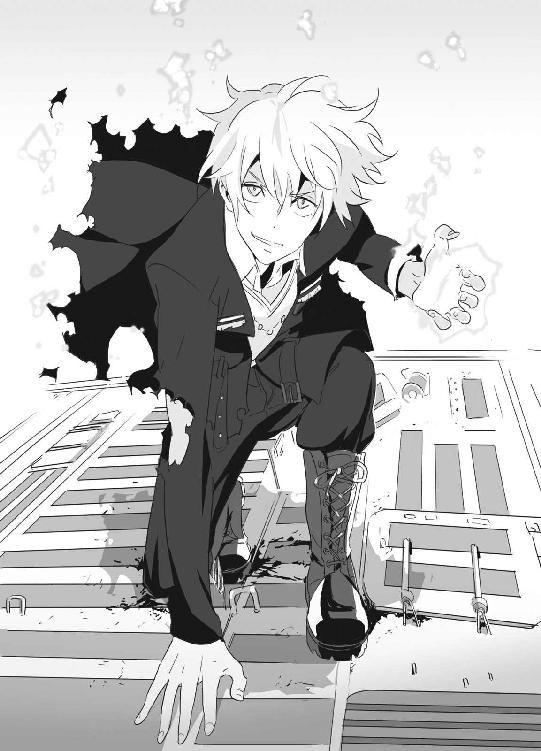
「いただきや！」
歩兵戦闘車の砲塔に、セルジュは右手に生みだした火球を叩きつけた。
バスケットボールほどの火球は、装甲を貫通し、内部で爆発。弾薬の誘爆を引き起こして、歩兵戦闘車は火ダルマになった。
燃える車体から飛び降りて着地したセルジュに、もう一台のＣＶ90歩兵戦闘車が副武装である機関銃の猛射を浴びせた。
「くっ！」
──炎の防御が間に合わない！
大量の銃弾を浴びて、セルジュの体勢が崩れる。ＧＥＮＥＺに匹敵する防御力を持つゴーレムの体にダメージはないが、着弾の衝撃で動けなくなる。
そこへ、歩兵戦闘車が四○ミリ機関砲を発砲した。
「！」
桁違いの威力に、セルジュの体が浮いた。砲弾に、脇腹を大きく抉られていた。
後方によろめく。背後は海だ。
歩兵戦闘車は機関砲を連射する。
二発目の直撃で、セルジュは海へと落下していった──。
（セルジュ......！）
目の前で、仲間が撃たれた。
仕方ない、と彩離は覚悟を決めた。
七湖を安全な場所に隠している時間はない。このまま、両手で抱えて戦うしかない。
「ちょっと動くよ！ 手を放さないで、歯を食いしばって！」
と、彩離は命じる。
「......わ、わかった！」
七湖は、ＧＥＮＥＺ姿の彩離にしがみついた。
彩離は飛翔した。背中のジェットパックを使ったのだ。高性能過酸化水素水エンジンが轟音とともに推進力を生みだす。彩離自身が一発の弾丸のようになり、セルジュを撃ったＣＶ90歩兵戦闘車に対して一気に間合いを詰める。
歩兵戦闘車が照準を修正するより速く、彩離は少女を抱いたまま後ろ回し蹴りを繰り出した。恐鳥型ＧＥＮＥＺの特徴である足の鋭い爪が、機関砲の砲身を易々と切断する。彩離には、手が使えなくても足技がある。
これで歩兵戦闘車の戦力は半減以下だが、油断はできない。彩離はさらに蹴って機関銃も潰し、キャタピラや照明弾発射器も切り裂く。
「大丈夫だった......？」
彩離は両手で抱いた七湖に訊ねた。
「戦ってる時、すごいＧがかかってくらっとしたけど......なんとか」
七湖の口調はしっかりしていた。
歩兵戦闘車を片づけた彩離は、ようやくスタート地点に戻ることができた。
砂浜に、上陸に使ったＲＨＩＢがまだあった。罠をはった敵も、まさかここまで逃げてくるとは思っていなかったのだろう。彩離は七湖をＲＨＩＢに乗せ、自動操縦をセットしてからエンジンをかけた。
「このまま、布施さんは本島に逃げてくれ！」
「そんな！ 彩離さんは!?」
「謙吾とセルジュを助けなきゃ！」
七湖を乗せて、自動操縦のＲＨＩＢが砂浜から離れていく。
「さて、と......」
彩離は研究所の方向に引き返した。
（謙吾......！ セルジュ......！）
気持ちが焦る彩離の前に、新たな敵が立ちふさがる。
「......っ！」
その男の身長は三メートル近く、体重は二五○キロを超えている。
顔を見れば、ピースの多いパズルのようにツギハギだらけだ。
「ジガ・ロッツか......！」
彩離は、その男の顔を知っていた。海神学園の授業。中東紛争に関する講義で出てきた。
イスラエル出身のジガ・ロッツ。
彼は『ゴリアテ』と呼ばれる人工の巨人だ。
イスラエルのとある特務機関が、最先端のロボット工学と死霊魔術を併用し、優秀な兵士の死体をつなぎ合わせて「製作」した、現代のフランケンシュタインとでも言うべき存在──それが生ける屍の戦士タイプ・ゴリアテだ。
ジガは、一九七○年代から現在まで合計五○○近く製作されたゴリアテの中でも特に優秀で、第四次中東戦争、イラン・イラク戦争、イスラエルのレバノン侵攻などで数え切れないほどの武勲をあげている。
湾岸戦争終結以降、中東から姿を消したという話は聞いていたが、まさかウィルトゥスに雇われていたとは──。
ジガの体は半分以上が機械だ。
彼の左右の腕が、縦に割れる。
右腕に重機関銃を、左腕に三発の有線誘導ミサイルを内蔵していた。
「やばっ！」
慌てて空中に逃れる彩離。
ジガはミサイルを発射した。
有線誘導とは、その名前通り、射手とミサイルがケーブルでつながっている誘導方式のことだ。光ファイバーのケーブルで、先端にカメラがついたミサイルを意のままにコントロールすることができる。
「──くぅッ！」
彩離は高速で飛行し、振り切ろうとするが、速度が足りなかった。
ミサイルに追いつかれる。彩離の間近で爆発する。
第五章 ブラッド・オン・ザ・ダンスフロア
１
今にも泣き出しそうな、青ざめた顔の七湖だけが、自動操縦のＲＨＩＢでグアム本島に帰ってきた。敵の反撃が予想されたので、グリークスの情報部と輸送部はプリラック湾の海岸から撤収した。ＧＥＮＥＺ二台を失い、セルジュまで行方不明となった今、マルチピード・アーマーを装着した傭兵に襲撃されればひとたまりもない。こちらが姿を隠すしかない。ジャニスには現地警察への対応を依頼したので、ここからは別行動だ。大迫とユキナは、七湖を慰めながらタモンのホテルに戻った。
とりあえず、女子も男子の大部屋に集まった。ユキナと七湖、そして大迫の三人だけになってしまった。部屋に、重苦しい空気が流れ始める。
「謙吾と彩離は生死不明。そして、セルジュは行方不明か......」
さすがの大迫も暗い表情だ。丸めた背中から心労が滲む。
「......指揮車、何か情報は入っていませんでしたか？」
七湖が、沈んだ声で訊ねた。
「ＧＥＮＥＺの状態はギリギリまでモニタリングしてた」と、大迫が答える。「......謙吾のＧＥＮＥＺは、高電圧で機能停止に追い込まれたところで、情報の送信もストップ。そこから先はどうなったかわからないが、生命保護装置があるから謙吾は生きている可能性の方が高い。そして彩離だが、彼女のＧＥＮＥＺの間近でミサイルが爆発した瞬間、機能停止。直撃ではなかったようだから、死んではいないはずだ」
「つまり......」ユキナが重い声で言う。「二人とも、捕虜になった？」
「まあ、そう考えるのが妥当だろう」
──謙吾と彩離が敵の手に落ちた。
ユキナは、自分がバビロン・メディスンの特殊部隊ベテルギウスに捕まって拷問を受けた時のことを思い出した。ナイチンゲールが持つ特殊能力のおかげで今は傷一つ残っていないが、謙吾や彩離だとそうはいかない。二人は、優秀な戦士だが生身の人間だ。
「海に落ちたセルジュは......今どこにいるんだ？」
ユキナは、どうか生きていてくれますようにと、祈るような気持ちでそうつぶやいた。
「......もう陸の上やで」
出入り口の方から、声がした。
「！」
驚いてその方向に振り向く三人。
セルジュ・ドラグレスクが立っていた。
頭から爪先までびしょ濡れで、タクティカルベストや服は弾痕で穴だらけ。左胸と右脇腹に、機関砲弾によって抉られた大きな傷がある。人間なら確実に死んでいる傷だ。
不敵に笑って、しかしセルジュはそのまま意識を失って倒れた。
大迫は携帯電話を取り出しつつ、セルジュに駆け寄る。
「急いでガラスと、第三世代ゴーレム用の応急処置セットを！」
すぐに、一時空港の近くまで撤退していたグリークス情報部の人間がやってきた。
大迫はセルジュを抱えて風呂場に入り、空の浴槽に運び入れた。
アタッシェケースをさげた情報部の男女に、「邪魔だ」とユキナと七湖は風呂場から追い出された。情報部の男は、アタッシェケースから数枚のガラスを取り出し、それを拳銃のグリップ部分で細かく割ってセルジュの傷口に振りかける。
女のアタッシェケースには、様々な瓶詰めの薬品類がそろっていた。
「まず、燃やした護符と水銀を」と、大迫。
女は、言われた通りの品物をケースから出して大迫に渡す。
「アルトノイ教会堂の粘土を薄めたクリームは？」
「はい、ここに」
大迫は、手際よくセルジュの傷口に用意された薬品を塗り込んでいった。セルジュの体は人間とはまったく構造が異なるので、傷の応急処置方法も独特だ。
「これで、なんとかなるはずだ......」
「セルジュ......」
ユキナが心配そうにその名を呼んだ。
「セルジュは戦闘用のゴーレムで、不老だが、決して不死じゃない......」
大迫は噴き出した冷や汗をてのひらで拭う。
「バラバラにされればそこまでなんだ。危ないところだったよ」
２
ＧＥＮＥＺとスーツを無理やり引きはがされて、謙吾はトランクスの下着姿で目隠しと手錠をされた。手錠は鎖で足首と連結されていて、関節を外しても抜けられないタイプだ。何も見えない状態のまま、謙吾は木箱のようなものに詰め込まれて運ばれた。まず、車での移動。飛行機での移動。そしてまた車での移動──かなりの距離だ。どこに拉致されたのか、謙吾は考える。移動時間から計算して、アメリカやアジアではない......ヨーロッパのどこかか？
視界がふさがれた状態で、長時間狭い場所に閉じ込められるのはかなりのストレスだ。喉も渇くし、姿勢に無理があるので関節も痛む。訓練を受けた兵士でなければ、パニックを起こしていたことだろう。
車のトランクからおろされて、建物の中らしき場所に運ばれていく。エレベーターでの移動、そしてドアを開け閉めする音がして、謙吾は男二人に木箱から引っ張り出された。鋼鉄の椅子に座らせられる。手錠の鎖が今度は椅子に連結されて、ほんの少しも身動きが取れない。
ここでようやく、謙吾は目隠しを外された。
「......謙吾！」
「彩離!?」
拉致されていたのは、謙吾だけではなかった。目の前に、彩離もいた。二人同時に目隠しを外されたのだ。
彩離も下着姿で、椅子に拘束されていた。さすがにこの状況だと恥ずかしさもわいてこない。謙吾は恐怖と緊張を精神力で抑えつけて、必死に頭を働かせる。──なんとか、彩離だけでも助ける方法はないか？
謙吾は視線を左右に走らせた。体は動かないが、首だけは回る。窓から広い空が見えた。時刻は昼間。ここは、高層ビルの上階だ。謙吾と彩離が監禁されているのは、まだデスクやインテリアを運び込む前のがらんとしたオフィスだった。出入り口は一箇所。カードキーとパスワードを併用したロック。スーツ姿の大男が四人、動けない捕虜を監視している。彼らが拳銃かサブマシンガンを携行しているのは、ジャケットの脇の膨らみ具合を見れば明らかだ。
出入り口のドアから、二人の男が入ってきた。
一人は金髪でやや小太り。チェック柄のシャツにジーパン。
もう一人は戦争業界の有名人、タイプ・ゴリアテことジガ・ロッツだ。
金髪小太りのだらしない男は、マイケル・ジャクソンの『ブラッド・オン・ザ・ダンスフロア』のメロディを適当に口遊みながら謙吾に近寄ってきた。
「へえ、こんな少年少女がＧＥＮＥＺの中にいたのか」
「お前は......！」
「レオン・ジョンソンだ。よろしく。ウィルトゥス代表をやってる」
金髪小太りの男が名乗った。
レオンは拳銃を持っている。
子供がおもちゃを見せびらかすように、拳銃を謙吾の前でひらひらと振ってみせる。
「この銃は二二口径だ。威力は低めでね。頭や心臓に当てない限り、なかなか死なない」
ワルサーのＰ22だった。弾倉にはレオンの言葉通り、二二口径の弾丸が一○発。
「ここはどこだ......？」
「大サービスだ。教えてやろう。ここは『白い海岸』だ」
「白い海岸......スペインか！」
「俺の別荘だよ」
かなりの距離を移動したのはわかっていたが、まさかスペインとは。
──グリークスの救助チームは期待できるか？
そもそも、セルジュは無事なのか？
レオンは、ワルサーの銃口を謙吾の右足に向けて、引き金を絞った。銃声がして、謙吾の右足の甲に一円玉より一回り小さい程度の弾痕が生じ、血が溢れる。さらにレオンは謙吾の左足の甲にも一発。右太腿に三発、左太腿に三発。合計八発の弾丸が謙吾の体を貫通したが、致命傷にはほど遠かった。
「ねえ、痛い？ 痛いでしょ？」
と、楽しげにレオン。
しかし謙吾は脂汗を流しつつも歯を食いしばり、悲鳴は一切漏らさなかった。それを見ていた彩離も、つとめて冷静に振る舞うよう心がけていた。
「すごい忍耐だね。さすが、いや、本当にすごいすごい」
「......次は頭に撃て！」
「いや、そんなＭＯＴＴＡＩＮＡＩことはしないよ」レオンはわざとらしく、もったいない、だけ日本語で言った。「ＧＥＮＥＺのブラックボックスを解除するパスワードや、グリークス本社への連絡方法などなど。君たちに訊きたいことは山ほどあるんだから。さて、普通に訊いても話してくれるわけないだろうから拷問だと思うけど。どっちからどんな風にいたぶるのがいいかな......？」
「おい」謙吾は、挑発的な笑みを浮かべて言った。「どうせ、両方とも拷問するんだろう。俺の方から先に拷問しろ。彼女はしぶとい。後回しにした方がいい。絶対に、そっちの方が効率がいいぞ......！ それに、俺は彼女が何をされても何も喋らないが、彼女は俺がひどい目にあわされたら何か吐くかもしれん」
「君のいうことを真に受ける必要はないが......じゃあ、ご希望通り少年の方から」
「謙吾！ そんな！」
彩離が悲鳴のような声をあげた。
「いいから！ 見てろ！」
と、謙吾は怒鳴る。
レオンが「道具を持ってきて」と、謙吾たちを監視していた大男に命じた。男は一度部屋を出て、様々な拷問用の道具が収納されたラックを、台車にのせて戻ってきた。その拷問道具ラックには、なぜか高そうな酒のボトルが混ざっていた。
レオンはラックの中から、小型のハンマーを取り出した。ニヤニヤしながら動けない謙吾の前に屈み込み、ハンマーを軽く振って指先に狙いを定める。
「まずは、フルネームと出身地を教えてくれ」と、レオン。
「俺はマリオで、彼女はルイージ。京都出身だ」と、謙吾。
謙吾の軽口に一笑いしてから、レオンはハンマーを足の指先に打ちおろした。親指の爪が割れて柔らかい肉に食い込み、出血。足にはすでに八発二二口径をもらっていたが、それでも痛かった。銃弾の傷は「熱い」感じがするが、ハンマーで爪を潰されるとただ純粋に「痛い」。
「ぐう、くううぅ......」
限界だった。ずっと我慢していた苦悶のうめき声が、謙吾の喉の奥から絞り出される。
レオンはテンポよく、足の指をすべてハンマーで砕いた。謙吾の足下に血だまりが生じ、割れた自分の爪が散乱している。
「プロの兵士でも、これをやられるともっと痛がるよ。若いのにやるねぇ」
そう言って、レオンは次にラックの酒瓶を手に持った。
「ロシア産超高級プレミアムウォッカだ。アルコール度数は四○度くらいかな。これは贅沢な痛みだよ。堪能しなさい」
蓋をあけて、中身を謙吾の潰れた足の指にたらしていく。
「──っ！」
激痛、などという生易しいものではない。
神経が蒸発していくかのようだ。
「やめろッ！」
彩離が叫んだ。
「フルネームを教える！ だから、少しでいいから休む時間をくれ......！」
「バカ！ 彩離！ 何も話すな！」
謙吾は怒鳴る。
「謙吾こそ！ このペースで拷問が続いたら死んじゃうよ......！」
「ＯＫ、約束するよ」と、レオン。「とりあえずフルネームだけでも教えてくれたら、一○分間の休憩をやろう。いい時間稼ぎだ。悪くない」
「私は堤彩離......彼は大牙謙吾......」
「よし、その調子その調子。いい感じになってきたじゃないか」
レオンは満足げにうなずいた。
「約束は守る。一○分休憩だ」
と、ここでレオンは腕時計を見る。
「あらら......残念、時間だな。私はバビロン・メディスンの傭兵たちとこれからある計画を完成させなきゃいけない。あとの拷問は、ジガに任せる」
「はい」
「ジガ、拷問を再開したら、グリークスに入ってからの初仕事を聞き出せ」
「はい」
「彼は『ゴリアテ』。現代のフランケンシュタインだ。脳まで戦闘用に改造されているから、彼の拷問は容赦ないぞ」
レオンが脅してきた。
「知ってる。授業で習った」
謙吾は落ち着き払った声で言った。
「きみ、面白い冗談言うね。授業で習った？ 最高」
そう言い残して、レオンは部屋から出ていった。
謙吾の前に立ったジガが、非人間的な冷たい視線で見下ろしてくる。
３
スペインの首都であるマドリッド、その繁華街にあるアンティークショップに、武田爪兵とアンナトゥリーがいた。
プライベートな時間なので、アンナトゥリーは首輪を外されている。
爪兵は、楽しそうに古いカメラを物色している。
「捕虜への拷問には参加しないんですか......？」
アンナトゥリーが恐る恐る訊ねた。
「お前は参加したいのか？ 拷問」と、爪兵。
「いえ......こうしている方が落ち着きます。拷問なんか見たくない......」
「なら、いいじゃねぇか。余計なこと言ってんじゃねーよ」
カメラは爪兵にとって、拷問よりもずっと大事な趣味だ。外国で仕事をしている時に暇ができたら、必ず現地で掘り出し物を探す。ネット通販は便利だが、足を使うのも楽しいものだ。爪兵は、戦場カメラマンが使っていた機種に特別な愛着がある。多数の日本人戦場カメラマンが愛用したライカＭ３がお気に入りだ。
爪兵は戦場の悲惨な場面を切り取った写真が好きだ。惨状を見ていると、なぜか気分が落ち着く。そこが、自分の故郷のような気がしてくる。報道や記録なんてくだらない。爪兵に言わせればすべてがコメディだ。たとえばベトナム戦争で、ベトコン相手に苦戦して困り果てたアメリカ軍が枯葉剤をまいて数十万人という非戦闘員まで苦しめたなんて話、ひどすぎて笑うしかないだろう。
「おっ......」
落ち着いた雰囲気の店内で、爪兵はハッセルブラッドの軍用カメラを発見した。スペインでハッセルブラッドとは珍しい。値段は日本円で五○万円以上したが、持っていなかった機種なので即カードで購入した。これだからアンティークショップ巡りはやめられない。
爪兵とアンナトゥリーは店を出た。爪兵は大事なカメラを抱えてほくほくとした笑顔だ。マドリッドのメインストリート、グラン・ビアを歩く。一六世紀から一七世紀にかけて、スペインは強力な海軍を有し、中南米に広大な植民地を抱え、黄金時代を謳歌していた。マドリッドの街並みには、かつてスペインが世界に覇をとなえていた頃の誇りのようなものが今も残っている。
「......これからの予定は？」
と、アンナトゥリー。
「もうちょっと店を回った後、アフリカの拠点に入る。ウィルトゥスのレオン・ジョンソンも向かっているはずだ。デビューを勝利で飾ったエンキドゥの微調整もあるしな」
その時、爪兵の携帯電話が鳴った。全世界で使える衛星通話対応の最新機種だ。
「はい、武田爪兵です」
学校の友達からだった。爪兵は「営業用」の穏やかな声色に切り替える。
『爪兵くん......先生から聞いたんだけど、身内に御不幸があったって......』
クラスメイトの女子が言った。
このとき初めて、爪兵は自分が学校を休んでいる理由が忌引きだと知った。学校への対応はバビロン・メディスンの工作員であるマルゴに適当に任せていた。
「うん。海外で暮らしてた祖父が急に亡くなって」
爪兵は思いつきをそのまま口にした。
『ごめんね......前に頼んでた日曜のピアノの件だけど、あれもう別にいいから』
「ああ......」
そういえばそんな約束をしていた。すっかり忘れていた。
「いや、一度約束したことだから。間に合えば必ず行くよ」
『爪兵くん、無理しないでね』
「ああ、また学校で。それじゃ」
電話を切って爪兵は「ふう......」と深く息をする。
苦労は多いが、爪兵は和歌山の高校での生活も楽しんでいる。いい人間だと思われるのは気分がいい。
偏った人生はつまらない、と爪兵は思う。戦闘や戦場にいるのは楽しいが、それに慣れてしまうと逆にスリルがなくなる。退屈な日常が、異常な状況をより楽しむためのスパイスになるのだ。
爪兵がふと隣を見ると、アンナトゥリーが涼しげな笑みを浮かべていた。
「なんだよ......文句あんのか？」
「いつも、さっきみたいな穏やかな雰囲気ならいいのに、と思って......」
「うるせえな......ぶっ殺すぞ、アンナトゥリー」
４
「............」
──岩清水ユキナは、グアムのホテルの大部屋で、新潮文庫の藤沢周平著『用心棒日月抄』を読んでいた。何度読んでも飽きない大好きな本だが、まったく頭に入ってこない。
大迫が、持っている力のすべてを使って謙吾と彩離を探している。ユキナには、その結果を待つことしかできない。焦っても、苛立っても、何もできない。とにかく時間を潰したいのに、何一つ手につかない。
まともに文章が読めないほど心が乱れているので、ユキナは携帯用のマグネット将棋盤セットをテーブル上に広げた。詰め将棋なら、ある程度体が覚えている。半ば自動的に手が進む。頭を使わなくても、雑な将棋なら指すことができるものだ。
詰め将棋の問題集を開いて、特に簡単なものをやっていく。時間を潰すのが目的なので、一度解いた問題でも構わない。長手数詰め作品も悪くない。
そうこうしているうちに、同じ部屋にいる布施七湖が話しかけてきた。
「あ、あの......」
謙吾以外の人間に話しかける時の七湖の口調は、いつも怯えているかのようだ。それは、彼女が血のつながった両親を捨てて、世間の目から隠れるように引きこもって暮らしてきた影響があるのだろう。
「なんの用だ？」
それに比べて、ユキナは普通に話していても「怒っているみたい」とよく言われる。
「将棋......私としてみない？」
「指せるのか」
「将棋は数学的だから......私の得意分野......」
「なるほど」
ユキナと七湖の将棋が始まった。ユキナが飛車を振る（左翼に移動させる）と、七湖も最小の手数で対抗してきた。
数手交わしただけで、七湖がかなりの腕前だとわかる。
普段のユキナなら、強敵の登場にわくわくしたところだ。しかし今は、やはり頭の中が謙吾と彩離で一杯だった。詰め将棋ならともかく、対局となるとどうしても思考が複雑になる。指し手が乱れる。
「怒ってるよね......？」
指しながら、七湖が訊いてきた。
ユキナは一度深呼吸してから、強い瞳でまっすぐ七湖を見つめて答える。
「仮に、布施さんのミスで二人が捕まったのだとしよう。それなら、腹が立つ」
「............」
「でも、今回はそうじゃない。謙吾と彩離は、あなたを逃がして敵と戦った。──戦って、負けた。それがすべてだ。私が布施さんに怒るなんて、筋違いもいいところだ」
「岩清水さん......」
一時の感情に流されず、常に公平な判断をして、卑怯なことは見逃さず、八つ当たりや言い訳はしない。そんなさっぱりとした性格こそが、子供の頃から岩清水ユキナが「漢女姉さん」と呼ばれるゆえんだった。
「この前、謙吾に助けられた。次は、私が助けたい」
「......岩清水さんと謙吾って、どんな関係なの......？」
「関係、か......幼なじみで、クラスメイトで、チームメイト......そんなところかな」
「ふうん......」
その時、誰かが部屋をノックした。
「はい？」
「大迫だ。こっちの大部屋に来てくれ。準備が整った」
ユキナと七湖が男性陣の大部屋に入ると、体のあちこちに包帯を巻いたセルジュがいた。
「セルジュ......もういいのか？」
「ああ。応急処置が完璧やったからな......なんとかなるわな」
謙吾と彩離がいない今、最大の戦力は間違いなくセルジュだった。彼がいなければ、奪還作戦なんて話にならない。
そしてユキナは、大迫とセルジュの他に、海神学園の人間がもう一人部屋に増えていることに気づいた。
「なにしろ、フォワードが足りないからね。急いで学園から助っ人に来てもらった」
その「助っ人」は、タクティカルベストにベレー帽という特殊部隊スタイルで、身長は一九○センチ近く。顔を見れば無精ひげを生やしていて、刃物傷が二すじ。若い頃のアーノルド・シュワルツェネッガーを連想させる顔立ちだ。
「特進クラスの林力也だ」と、大男は名乗った。「謙吾も彩離も、よき後輩にしてライバルだと思っている。彼らの救出作戦に参加できて嬉しい」
ユキナとは、初対面ではなかった。林は海神学園が誇る強豪部・軍隊格闘技研究会のエースでもあり、ユキナをスカウトしにきた特進クラスの上級生だ。謙吾も、林のことは先輩として敬い、その実力を恐れていたほどだ。
「特進クラス......この人、学生なんですか!?」
と、七湖が驚きの声をあげた。
その瞬間、ぴく、と林のこめかみに太い血管が浮かぶ。
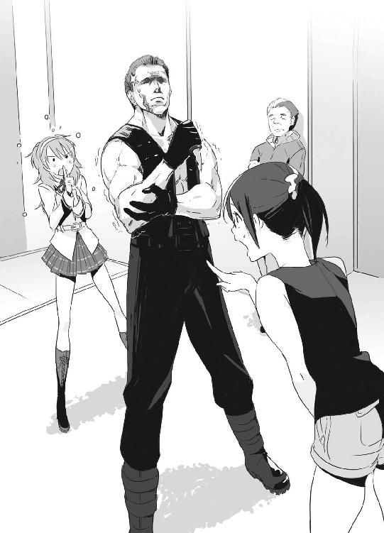
「布施さん、何を言ってるんだ！ どう見ても高校生じゃないか！」
ユキナが慌ててフォローを入れた。
「だって、どう見ても三○歳すぎてるとしか......」
「......そ、それ以上は言っちゃダメ！ 本人も気にしてるんだから！」
ユキナは、七湖と同じことを言って林の逆鱗に触れたことがある。
「こ、この......」
林が七湖ににじり寄る。──何をするつもりだ!?
「はいはいはい......林、そこまで。今はそれどころじゃないんだから」
大迫が、林の肩をつかんで制止した。
「大迫先生......」
爆発寸前の林の怒りが、その一言で治まった。彼は上下関係に弱い。上官の命令は絶対なのだ。規律、連帯、忠義──林は、そんな言葉を好む。
「グリークスの情報部で、使えるチームは全部動いてもらったよ。ＩＣＰＯのジャニスさんにも頑張ってもらった」
林が落ち着いたところで、大迫が本題を切りだした。
「それで......」
ユキナの胸の中で期待が膨らむ。
「見つけた、と思う」
そう言って、大迫は目を細めた。
「グリークスは極秘で軍事偵察衛星を持ってる。最優先でその映像を謙吾の捜索に回してもらった。あと、情報部やＩＣＰＯの人間には、ウィルトゥスと関係のあるすべての施設に張り込んでもらった。二四時間態勢の監視で、少しでも怪しい動きがあったら報告してくれ、と。
で、その結果浮かび上がってきたのが、スペインにあるウィルトゥス代表レオン・Ｍ・ジョンソンの別荘だ。そこに、人間がすっぽり入る大きさの木箱が二つ、運び込まれたそうだ。熱探知でチェックした結果、中身はどうも謙吾と彩離っぽい」
「......っ！」
あの二人を助けられるかもしれない──。
その可能性が出てきただけで、ユキナはもう泣きそうだ。
隣を見れば、七湖も同じように瞳を潤ませていた。そして、セルジュもリターンマッチに燃えている。
５
スペイン、バレンシア州南部。
地中海沿い、白い海岸の中心都市ベニドルムは、世界的に有名なリゾート都市の一つだ。
コスタブランカの名に相応しい、シルクを敷き詰めたような美しい砂浜の近くには、スペイン屈指の高級住宅街がある。高層マンションや高級ホテルが林立する、年収が数十億、数百億というセレブのための地区だ。
ウィルトゥス社長レオン・ジョンソンの別荘は、高級住宅街の中でも一際目立つ近代的な高層マンションの五○階にある。レオンは部屋単位ではなく、五○階を丸ごと買い取ったのだ。その階にはまだ使われていない広いオフィスもあり、謙吾と彩離の監禁場所ではないかと推測された。
大迫が、高層マンションの近くにホテルの部屋をとった。一泊するつもりはないので、男女で部屋を分けたりはしない。
荷物をおろすなり、大迫が計画を説明する。
「まず、林力也が高層マンションに潜入。金持ち専用のマンションだから警備は厳しいけど、まあ林の敵じゃないでしょう」
「大丈夫だと思います」
と、自信たっぷりの口調で林。
「林は、マンションの電話回線配電盤に爆弾を仕掛けてくれ。同時に、サポートの情報部が外部から遮断する」
「了解」
「タイミングを合わせて、セルジュ、ユキナが突入。一気にレオン・ジョンソンの別荘──高層マンションの五○階を制圧する」
「あの......私は？」
七湖が訊ねた。
「ここで、留守番──」
「い、いやです！」
七湖が切羽詰まった表情で首を左右に振った。
「私にも、できることが」
「......布施七湖に関しては、特に上層部からの指示はない。同行を認めるよ。実際、あなたの力があれば便利だ」
「じゃあ......」
「電話回線配電盤に爆弾を設置した林と一緒に、警備室を押さえてくれ。五○階への侵入方法は、空から屋上に落とすか、壁を登るか、エレベーターで普通に行くかの三つしかない。布施さんが警備室で管理システムをハッキングしてしまえば、安全かつ素早くセルジュたちが五○階に到達することができる。──質問は？」
全員、無言。
「よし、じゃあ奪還作戦開始だ」
大迫が、珍しく凛々しい声で告げた。
七湖は、林力也に守られながら高層マンションの地下に潜り込んだ。初めてのスペインで、時差ボケも治らないうちに、特殊部隊系の老けた高校生とともに破壊活動に勤しむことになるとは、一週間前はまったく想像もしていなかった。
林は、怖い。いつも不機嫌そうな表情だ。どう考えても七湖にとって苦手なタイプだった。そして、林も七湖のことを苦手と思っているはずだ。初対面なのに、彼に失礼なことを言ってしまった。
気まずい空気のまま、それでも自分に与えられた役割はしっかりと果たさねばならない。
林の手際は見事だった。防犯カメラの死角を移動し、警備員には気配を消して近づき、一瞬で気絶させている。
彼が相手に何をやったのか、速すぎて七湖にはよくわからなかったほどだ。
近づくのが難しい相手には、銃を使った。キンバー社のカスタム・ガバメントだ。銃声を抑制するサイレンサーつきで、マガジンには麻酔薬入りの特殊弾薬が装塡されていた。
高層マンションの地下一階、自家発電装置機材室の裏側に、マンション全体の電話回線を管理するメイン配電盤があった。
林は手際よくそこにプラスチック爆弾を仕掛けて、ペンシル型のデジタル起爆信管をセット。信管は、遠隔操作で点火することができる。
それから、林は駐車場の一階の警備室を襲撃。警備室には、防犯カメラの映像を見つめる二人の警備員がいた。林は精密機械のように照準し、一人に二発ずつ麻酔弾を撃ち込んであっさり眠らせる。
「頼む」と、周囲を警戒しながら林が言った。
「う、うん......！」
ここから先は、七湖の出番だ。
七湖は警備室のコンピュータにハッキングした。共感覚が、七湖の脳裏に絵画を見せる。このプログラムは──基本に忠実な印象派、エドガー・ドガが描く踊り子のようだ。その絵に、手を加えていく。直感的な操作による超高速のハッキングだ。七湖は数十秒で高層マンション内のほとんどの機能を手中におさめ、とりあえず警報装置を切った。
「せ、成功です」
「よし、爆破のカウントダウン開始。ビーバス＆バットヘッド、突入せよ」
林が無線でセルジュたちに告げた。
電話回線配電盤が爆破される音を合図に、セルジュとユキナは突入した。二人とも一番しっくりくる海神学園の制服姿で、上着のかわりに防弾プレートが入ったタクティカルベストを着込んでいる。
二人は、難なくエレベーターで五○階に移動することができた。七湖が、防犯システムを完全にコントロールしているおかげだ。
しかしさすがに敵も甘くない。エレベーターのドアの前には、Ｈ＆ＫのＭＰ７サブマシンガンを構えたウィルトゥスの武装警備兵が四人、待ち構えていた。ドアが開くと同時に、武装警備員たちはフルオートでＭＰ７を発砲。ユキナを守るために、炎の壁を展開しながらセルジュが前に出る。
「邪魔すんなや......！」
ＭＰ７の高速徹甲弾の豪雨をものともせず、セルジュは炎を生みだしつつ、両手を強く叩き合わせた。その刹那爆風が生じ、武装警備員四人を軽々と吹き飛ばす。あるものは壁に、またあるものは天井に叩きつけられて、眠ったように動かなくなる。
セルジュとユキナは、廊下を走った。捕虜が監禁されているはずの、まだ使われていないオフィスを目指す。
「謙吾！」
セルジュがドアを開けて、オフィスに足を踏み入れた。
「セルジュ！」
下着姿で椅子に拘束された彩離が泣いていた。
しかし、彩離は無傷だ。
問題は、同じく椅子に拘束されていた謙吾の方だった。
指の骨はすべて不気味な方向に曲がって腫れあがっていた。足の指はすべて潰されていた。
セルジュが入ってきても謙吾の反応は鈍く、血がたまったその口からは「う、ああ......」という弱々しいうめき声以外のものは出てこなかった。
血まみれになった謙吾の前に、ツギハギだらけの不気味な顔をした圧倒的な巨漢──人工巨人ゴリアテのジガ・ロッツが立っていた。ジガの手には、謙吾の体に押し当てる寸前の手術用メスが握られている。
ジガはセルジュを見てニヤリと笑い、メスを捨てて猛然と駆け出した。
凄まじい足音を立て、ジガは建物を揺らしながら走る。見た目とは裏腹に、その動きは速い。速度をあげていったジガは、そのまま窓から飛び出した。
高層マンション五○階からダイブしたのだ。
ジガは、滞空中に左腕の擬装装甲を展開し、内蔵の有線誘導ミサイルを発射する。
謙吾やセルジュがいるオフィスを丸ごと焼きつくすつもりなのだ。
奪還されるくらいなら、捕虜は殺しておいた方がいいという判断か。
セルジュも、ジガを追いかけてジャンプした。
空中を泳ぎつつ、てのひらに生みだした火球を投げつけてミサイルを撃墜する。
大爆発で高層マンションの窓ガラスが一斉に割れる。
「謙吾をあんなんにしたのはお前か！」
姿勢を制御しつつ、セルジュは叫んだ。
「許さへんで！」
ジガは高層マンションの五○階から放物線を描いて飛翔し、別のビルの四五階に飛び込んだ。勢いのついた二五○キロの巨体が、家具や装飾品をなぎ倒す。
セルジュは、ジガが飛び込んだビルの屋上に着地した。
その衝撃でコンクリートに派手なひび割れが走る。
セルジュが追ってきたことに気づいたジガは、四五階を駆け抜けて、また窓から砲弾のように飛び出す。
助走をつけて、セルジュは屋上から飛び降りる。
「絶対に逃がさん！」と、ジガを追う。
地中海の美しい高級住宅街。林立する高層ビル街を舞台に、人間離れした身体能力を持った二人──正確には「二台」──の壮絶な追跡劇が繰り広げられる。
ジガは、四五階からその先にあったオフィスビルの四○階へ。
セルジュは、同じビルの四一階へ。
とうとう、二人の距離が詰まった。
ジガは、右腕の擬装装甲を展開。こちらの腕には、重機関銃が内蔵されていた。
ロシアン一四・五ミリ、徹甲焼夷弾だ。
三本のバレルがモーターで回転し、毎分二一○○発の弾丸を撃ち出す。
ジガが重機関銃を撃ちまくる。
天井と床を貫通して、数百発の弾丸がセルジュに襲いかかる。
セルジュが転がり込んだオフィスビルの四一階には、たくさんの会社員がいた。下からの銃撃でデスクやコピー機が引っくり返り、無数の紙片が宙を舞い、流れ弾で数人の男女が負傷する。徹甲焼夷弾なので、あちこちで出火し小さな爆発も発生する。巻き込んでスマン！ と心で謝りながら、セルジュは走る。
弾痕の列が追ってくる。
ついさっきまでセルジュが追いかける側だったはずなのに、逆転されてしまった。
重機関銃の連射で、ボロボロになった床が抜けた。
セルジュは四○階に落下。受け身をとって、言い放つ。
「ヨォ、フランケンシュタイン」
セルジュとジガが、対峙する。ジガがさらに重機関銃を連射。
弾丸を横っ跳びで避けながら、セルジュは火球を放った。
ジガは、手近なデスクを蹴り飛ばして火球にぶつけて身を守る。セルジュの炎を使った攻撃の威力は絶大だが、「手で投げる」モーションから放たれるため、弾丸に比べてどうしても速度が落ちる。ジガのような超人的な能力の持ち主なら、かなりの割合で防いでしまう。ジガは右腕の装甲を閉じて、かわりに左腕の装甲を開く。
二発目の有線誘導ミサイルを発射する。
──対戦車ミサイルの直撃はやばすぎる！
セルジュは炎の壁を展開。身を守る。
しかしミサイルは、壁の手前で爆発した。ジガが、あえて自爆させたのだ。爆発炎と煙で、セルジュの視界がふさがれる。
「くっ......！」
次の瞬間、左腕を元の状態に戻しつつ、ジガが炎の壁を突っ切ってセルジュに殴りかかった。
凄まじい腕力からの右フックがセルジュに直撃し、吹き飛ぶ。
セルジュは床に叩きつけられて、ゴムボールのようにバウンドし、デスクの上を転がり、壁にぶつかってようやく止まった。前回の戦いで負った傷が開き、出血し、傷口周辺の「つちくれ」がボロボロと崩れ落ちる。
ジガは、最後の有線誘導ミサイルを撃った。
──どうする？
炎の壁ならミサイルは防げるが、攻撃用ではないので、防御力が高いジガには突破されてしまう。避けようにも、有線誘導ミサイルは生き物のように動くので難しい。火球で狙い撃つしかないが、その隙に結局ジガに直接殴られてしまう。あのパンチ力でもう一発やられたら、さすがに命が危ない──。
一瞬の判断で、セルジュは一階下に逃げた。
火球で床を溶かして、三九階に降りたのだ。
「......なっ！」
ミサイルはセルジュではなく壁に当たって爆発した。
セルジュを見失い、ジガは視線を左右に走らせる。
三九階から、セルジュはジガがいるあたりの天井を狙って一際大きな火球を投じた。
ジガの足下から爆発が広がり、爆風と炎が巨人を飲み込む。──大爆発だ。
「ざまあみろや......！」
よっしゃ！ とセルジュはガッツポーズ。
しかし、まだ決着はついていなかった。
ジガが、爆発で開いた穴から落ちてくる。
セルジュは、それが死体であることを望んだが、違った。
皮膚のほとんどは焼けただれ、いまだにあちこちが燃えている状態だが、ジガはまだ戦意を失っていなかった。
「！」
ジガは、セルジュをつかんで、窓に向かって投げる。
投げられる寸前に、セルジュは最大出力の火球を置いていく。
至近距離での火球炸裂で、バラバラに砕け散るジガ・ロッツ。肉片や内臓が散らばって、壁や床に付着する。優秀な兵士の肉体三○人分近くのパーツを組み合わせて作成されたジガは、本来の姿に戻った、と言えるかもしれない。
投げられたセルジュの体が窓ガラスを突き破った。自分の手で起こした大爆発を見ながら、三九階から落下していく──。
６
セルジュがジガを追って飛び出していった。
ウィルトゥス代表、レオン・ジョンソンの別荘。そのオフィス。
「早く謙吾を助けて！」
と、彩離が悲痛に絶叫した。
「謙吾......？」
ユキナは、呆然とした表情で謙吾に近づいていく。
拷問で血まみれになった謙吾の体。鋼鉄の椅子に拘束されている。
手錠や鎖の鍵が見つからなかったので（探している余裕もなさそうだ）、ユキナはタクティカルベストから拳銃を抜いた。発砲して拘束具を吹き飛ばし、謙吾を抱きしめる。
「ああ、うあ......」
今の謙吾には、まともな言葉を発するだけの力も残っていなかった。
「もう大丈夫だ、謙吾......」
ユキナは、謙吾の命を慈しむようにキス。唇を重ねる。
地下から、七湖と林が五○階まであがってきた。ドアを開けて二人が見たのは、拷問で傷ついた謙吾と、彼にキスをするユキナの姿だ。
──人工呼吸？
最初、七湖はそう思った。だが、明らかに雰囲気がおかしい。
「岩清水ユキナは、ナイチンゲールと呼ばれる特殊能力者だ」林が口を開いた。「ああやって、他人を一時的に不死身にする力があるんだよ」
「ナイチンゲール......不死身......」
林は彩離の拘束を解き、下着姿の彼女に自分のベストを着せた。
ユキナは、謙吾を助けようとしている。
それなのに、七湖は納得いかなかった。あの二人のキスを理不尽なものだと感じた。謙吾のことが心配で心配で仕方ないのに、同時にこの場から逃げ出したくもあった。矛盾で心が引き裂かれる。胸の内側がちくちくと痛む。
──涙が出そうだ。
「............」
ユキナが唇を離すと、謙吾の血が少し付着していた。手の甲でそれを拭う。
ナイチンゲールの力は、古傷や生まれつきの病気などには効果がない。たとえば、末期ガンの患者にキスをしてもそれを治療することはできない。再生するのは、比較的新しい傷に限られる。
謙吾は、両手の指の骨をすべて折られていた。足の指にいたっては、もっとひどい。
傷ができてから時間が経ちすぎていて、ナイチンゲールの能力が効かなかったら、謙吾はしばらく第一線から離脱してしまうだろう。傷の治り方次第だが、もしかしたら、復帰すら難しいかもしれない──。
固唾をのんで謙吾の様子を見守るユキナ。背後から、林と彩離も覗きこんでくる。
なかなか再生が始まらない。
もうダメか、とユキナが諦めかけたその時、謙吾の体が「びくん！」と強張った。
まず、変化が訪れたのは銃弾の傷だ。傷口から泡のようなものが溢れて、急速に肉や皮膚が形成され始めた。指の骨も真っ直ぐに伸びて一瞬で結合し、新しい爪が生えてくる。
ギルガメシュ化が間に合ったのだ。
「謙吾......」
「......ユキナか......」
謙吾は、悪夢から目覚めたような表情だった。
「ありがとう......すごくいい気分だ......」
「よかった......」
「ごめん、ユキナ......ギルガメシュには、ナイチンゲールが必要だった。俺の判断ミスだ......」
「そんなの、今はいいから、休んでろ」
ユキナは涙を流しながら微笑み、謙吾の頭を両手で抱える。
７
三九階から落下するセルジュ。
ああ一巻の終わりや、とぼんやり考える。途中、ビル清掃用のゴンドラに激突。思わずセルジュは「うおお！」と悲鳴をあげるが、おかげで落下の勢いは弱まった。
さらにセルジュは大きな看板にもぶつかり、背の高い街路樹に引っ掛かり、最終的にたまたま路上に停まっていた軽自動車の上に落ちる。
軽自動車は大破したが、セルジュの体が四散するようなことはなかった。
運が良かった。
「死ぬかと思った......」
第六章 決戦の地
１
情報部がセルジュを回収した。
「セルジュは無茶をしすぎた」大迫が言う。「集中治療が必要だ。海神学園のラボに戻す」
グリークスと友好関係にあるスペイン軍の空軍基地から、軍用機で日本に移送する。
謙吾たちは、基地の駐機場にいた。すぐ近くに輸送機が待機中で、担架にのせられたセルジュを見送るために集まっている。
「三九階から投げ落とされる時は、もっと気をつけろ」
と、謙吾は言った。すでに海神学園の制服で身を包んでいる。
「何に気をつければええねん、まったく......お前はええなあ。あっという間にいつも通りや。俺もユキナちゃんとのキスで治りたいわあ」
んー、と唇をすぼめてタコのような顔をするセルジュ。
「セルジュも治してあげたいけど、私の力は誰にでも効くってわけじゃない」
と、ユキナは申し訳なさそうに苦笑した。
「今のは軽い冗談や。気にせんでええ」
「セルジュ、あとは任せろ。あのデカブツを仕留めてくれただけで十分だ」
そう言って、謙吾は拳を突き出した。
「悪いけど......俺の体はもう限界らしい。応急処置じゃどうにもならん。ウィルトゥスの悪だくみを潰すのはお前らにゆずったる」
セルジュも、横になったまま拳をあげた。
二人は拳をぶつけて、小さくうなずき合う。
セルジュをのせた輸送機が日本を目指して離陸し、それから数十分後、謙吾たちもまた別の輸送機でスペインを離れた。
高層マンションには、ウィルトゥス代表レオン・Ｍ・ジョンソンのプライベートルームもあった。その部屋で、七湖が彼が使っているノートパソコンを発見した。
ノートパソコンには、当たり前のように厳重なセキュリティがかけられていたが、七湖のテクニックの前には無力だ。敵もバカではないので、別荘で使うためのパソコンに犯罪の証拠になるようなデータは残していなかった。
だが、七湖は気になる情報を見つけた。レオンは、ここ数カ月頻繁にアフリカ大陸のコンゴに足を運んでいる。スケジュール表によれば、今もそこにいるはずだった。
ＩＴ系総合企業ウィルトゥスは、アフリカ大陸中部コンゴ盆地に部品製造工場を構えている。七湖の発見をきっかけに、コンゴに何かあると気づいた大迫はグリークス本社に連絡。すぐに、軍事偵察衛星の画像を取り寄せる。
ウィルトゥスのコンゴ工場は、ただの部品工場にしてはあまりに敷地が広大だった。中央部には廃墟のような、兵器実験場と思われる施設もあった。
「ここに何かあるのは間違いない。潜入して、今度こそ国際犯罪の証拠をつかむ」
大迫が言った。
グリークスのスーダン支社を経由して、ウィルトゥスのコンゴ工場を目指す。
遠目には軍事基地にしか見えないスーダン支社は、激戦区のど真ん中に存在する。ダルフール紛争にグリークスが介入する際に設置された。グリークスはその設立理念上中国と敵対することが多いので、激戦に備えてスーダン支社には指折りの精鋭が集められている。
謙吾と彩離は、基地の職員に格納庫まで案内された。「装備を支給するので確認しておいてください」とのこと。二人が格納庫に入ると、そこに見慣れた顔がそろっていてびっくりした。海神学園の天才ハッカー集団、たった三人のパソコン部、ファンタスティック・スリーだ。
恐ろしく太った男がヒデヨシ。
赤毛の女の子が鞠歌。
高等部の制服を着ているが、とても高校生とは思えないほど老けた男がコバさん。
なんであんたたちが──と口から出そうになって、謙吾は思い出した。この三人も特進クラスの人間で、立派なグリークスの仲間たちなのだ。しかもファンタスティック・スリーはただのパソコンオタクではなく、装備開発部の有望株でもある。
「まず、謙吾の注文の品」
「ああ」
「発売されたばっかのギャルゲー『みみたぶ』の初回限定版」
そう言ってコバさんが取り出したのは、ＰＳ２のゲームソフトだった。
ぶっと噴き出して、顔を真っ赤にして怒鳴る。
「今ここでこれを出さなくていいだろ！」
「せっかく日本から持ってきたのに」
「持ってこなくていいんだよ！」
完全に怒った表情の謙吾だったが、隣にいる彩離に気づかれないように、コバさんの耳元に口を寄せてこっそり「......帰ったら、すぐに渡してくれ」と言っておく。
「あいよ」コバさんはゲームソフトをバッグに片づけた。「......で、謙吾が注文してた対装甲ライフルだけど」
「最初からそっちを出せって」
「お前が指定した条件が色々と難しくてさ。ほら、半自動連射とか、口径二○ミリ以上とか、ボックスマガジンで装弾数最低六発とか......。結局、古い対戦車ライフルを改造することになった。銃は鞠歌の担当だから、説明任せる」
「はいはい。ブツはもう届いてますよ」
と、鞠歌は格納庫の隅にある作業台を指差した。台上の何か大きな物体に、ビニールシートがかけてある。
謙吾がシートを外すとそこには、美しく、それでいて獰猛なライフルがあった。黒い野獣のようなその武器は、銃口から強烈な破壊力を吐きだす。
「フィンランドで第二次世界大戦時に使われていたラハティＬ39対戦車ライフルです。そのパーツのほとんどを、チタン合金か樹脂素材のものに交換した特殊作戦用ラハティＡＴＲといったところでしょうか」
ＳＯＰＭＯＤ－ラハティＡＴＲ。
謙吾は、ラハティを両手で抱えてみた。ＧＥＮＥＺなしの生身で持つには重すぎる銃だが、それでも部品の配置やトリガーの感触はチェックできる。
「使用する弾丸も、特製の二○ミリ×一三八高速徹甲弾。ちょいちょい手を加えた装弾筒付徹甲弾なんで、貫通力は普通の対戦車ライフルとはケタ違い。弱点を狙えば、各国主力戦車を一○○メートル離れてても撃破できます」
「......いい感じだ。気に入った」
敵にもギルガメシュがいる。少しでも強力な武装で挑みたい。
「ところで、ユキナさんは？」
周囲をきょろきょろと見回してから、鞠歌は訊ねた。
「例の共感覚者の少女とともに休憩中だ。空の旅が続いているから、疲れてるんだろう」
「じゃあ、寝込みを襲って叱ってもらおう......」
と、鞠歌は舌なめずり。彼女は超がつくマゾヒストで、ユキナとＳＭプレイをする機会を虎視眈々と狙っている。
「そして彩離さん」
自然にわいてきた汗を拭きながら、ヒデヨシが言った。今この格納庫にいる人間の中で、汗をかいているのは巨漢のヒデヨシだけだ。
「謙吾の剣歯虎型ＧＥＮＥＺはもう修理が完了してるけど、恐鳥型ＧＥＮＥＺは損壊がひどくてね、結局本社に戻すことに」
「あちゃあ......」
「そのかわりに、今回用意したのが......」
どたどたと歩いて、ヒデヨシは格納庫に停まっている輸送車のドアを開けた。
「予備機に追加パーツをとりつけた、恐鳥型ＧＥＮＥＺ空戦強化型」
「うわあ......」
彩離が感嘆のため息を漏らす。
「大出力ジェットパック、追加燃料タンク、ミサイル対策にデコイとチャフ散布機を装備」
修理が終わったばかりの剣歯虎型ＧＥＮＥＺの隣に、新品に近い状態の恐鳥型ＧＥＮＥＺが立っている。胴体や手足のデザインは今までとまったく同じだが、様々なパーツが追加されているので全体的なシルエットはより攻撃的だ。
「翼は伸縮式になり、展開時には長さが今の倍に。最大戦闘高度は六○○○メートル。短時間なら音速が出るよー」
「すっごい......」
「じゃ、俺たちはこれからスーダン支社のコンピュータでお前らをバックアップする準備しとくから」
と言い残して、ファンタスティック・スリーは格納庫をあとにした。
謙吾と彩離は二人きりになった。
ＧＥＮＥＺの装着者は、最終チェックはすべて自分で行う。命を預ける鎧を他人に任せっぱなしでは心許ない。そこは、戦闘機乗りと同じだ。しばらく黙々と作業を続けていたが、やがて彩離は胸がざわざわするのが止められなくなって、思わず「ねぇ、謙吾......」とつぶやいてしまった。
「どうした、思いつめた顔して」
「うう......」
彩離は下唇を嚙んで、ぎゅっと眉間に縦ジワを刻んで、両拳を固く握りしめる。そのまま少しぷるぷると震えたあと、両目に涙をためて、鼻水をすすった。プロフェッショナルに徹したいところだったが、どうにも感情の爆発が抑えられない。
「なっ、泣くなよ！ 彩離！ どうしたんだ!?」
謙吾は取り乱した。いつも冷静な男だが、女の子の涙には弱い。
「あたしを守るために......謙吾......あんなひどい目に......」
彩離は絞りだすように言った。
「ああ......」
謙吾は、大昔のことを思い出すような顔をした。
「別に、お前を守ったわけじゃない。俺は、ナイチンゲールの力でたとえ一時的でも不死身になるギルガメシュだ。どんなひどい傷を負っても、ユキナの救助さえ間に合えば一瞬で治る可能性があった。俺はそれに賭けたんだ」
「でも......爪を割られて......骨を折られて......すごく痛かったでしょ!?」
「そりゃあ、痛いが......彩離が取り返しのつかないことになるよりは、ずっとマシだ。結果的には二人とも無傷で救助されたわけで、いいじゃないか」
「............」
「この業界ではよくあることだ。気にするな」
そう言って、謙吾は苦みばしった笑みを浮かべ、彩離の肩を軽く叩いた。その瞬間、彩離は自分の心臓が破裂するかと思った。北斗の拳みたいに。「あべしっ」と。
謙吾が彩離のために拷問されたのは今回が初めてではない。彩離を助けるために捕虜になった謙吾は、重傷を負って戻ってきた。その時も、彼は笑って「よくあることだ。気にするな」と言った。
謙吾の外見は、まったく彩離の好みのタイプではない。彩離は本来太った人間が好きで、子供のころ舞の海の追っかけをやっていたことがある。
謙吾はギャルゲー好きで、生活が不規則で、ゴミ捨て場のような部屋で生活している。
それでも、たまらないのだ。この男は。
「うー......」
彩離は顔を真っ赤にして、頰をふくらませて、絶対に聞かれないよう小さな声で──、
「......謙吾とキスしたい」
と早口で言った。
「ん？ 今何か言ったか？」
案の定、謙吾は何も気づいていない。
「別に......なんでもない......」
彩離は、自嘲気味に笑った。
謙吾の携帯電話が鳴った。グリークスのスーダン支社長と打ち合わせをしているはずの大迫からだった。
「はい、大牙謙吾。何かありましたか？」
「間に合わなかったよ」大迫の声は重かった。「急いで支社のラウンジに来てくれ」
彩離に声をかけて、言われた通りラウンジに向かう謙吾。ホテルのロビーに似たラウンジに、様々な国籍、人種、年齢の男女が集まっていた。グリークスの社員たちだ。海外の学生傭兵もいれば、何十年も戦場で過ごしてきたような歴戦の古兵もいる。そんな彼らが、大画面の液晶テレビに注目していた。衛星中継で流れるライブのニュース映像。アフリカ各地で、同時多発的に内戦や紛争が勃発。一部の国はすでに無政府状態で、万単位の死者が出ているという。もちろん、兵士よりも一般市民の被害の方が大きい。テレビに映るのは、アフリカで生産されたものではない、先進国が輸出用に販売している最新鋭の兵器ばかりだ。
２
「謙吾」
テレビのニュースが流れているラウンジから格納庫に戻る途中、謙吾はユキナに呼び止められた。
「そろそろ作戦開始だろう」
そう言ったユキナは思いつめたような顔だ。
「ああ。だと思う」
「その前に、ちょっとだけ話しておきたい」
謙吾とユキナは、ひとけのない資料室らしき部屋に移動した。棚に写真や地図が雑に詰め込まれた埃っぽい部屋で、二人は至近距離で見つめ合う。
それからしばらく、時間の流れが緩やかになった。謙吾の心臓の鼓動が早鐘を打って、その分時間を長く感じているのだ。ユキナも緊張の面持ちで、心なしか声も上ずっている。
「この前、突入メンバーから私が外されたときだけど......」
と、ユキナが切り出した。
「あれは本当に悪かったと思ってる」
謙吾が改めて謝罪した。
「それはもういいんだ」ユキナは首を横に振った。「私が言いたいのは、ええと、なんていうかな......」
少女の視線がさ迷う。次の言葉を探している。
考えながら話すうちに、ユキナの瞳は微かに潤んでいた。
「......とにかく、嫌だったんだ。上層部に外されたっていうよりは、謙吾に『必要ない』って言われたような気がして、嫌だった」
「ユキナ......」
謙吾の胸に、針が刺さったような痛みが走った。ユキナの気持ちはよく理解できた。もし今、自分がＧＥＮＥＺの操縦者から外されたり、ユキナに「お前とは組みたくない」と言われたりしたら、どれほどのショックを受けるか想像して震えが走る。
「いいか、ユキナ。勘違いするな」
たまらず、謙吾はユキナの肩をつかんだ。刹那、彼女の背筋が伸びる。肩をつかんだ手を通して、彼女の緊張が伝わってくる。もちろん、謙吾も緊張している。
そして、まっすぐ相手の目を見て続ける。
「俺がお前と一緒にいるのは、ギルガメシュとナイチンゲールだからってだけじゃない」
「......謙吾！」
ユキナの体が、電流を流されたように「びくん！」と動いた。
「俺のことをずっと守ってくれた女の子がいる。今も守ってくれている。その女の子のためなら、俺はどんなことでもできる」
あまり使われていない雰囲気の資料室で、外は騒がしい。小さな窓からさしこんでくる強い陽光が、二人の足下まで伸びて道を形作っている。少年と少女の若々しいが未熟な心臓の鼓動が、互いの耳に届きそうだ。微熱気味な二人の緊張の息づかい。
再び、時間の流れが変わる。
謙吾にとってユキナがどんな存在なのか、自分でもよくわからなくなる。何度か唇を交わしているのに、心が近づくとためらいが生じる。ユキナは不死身の少女なのに、迂闊に触れると壊してしまいそうだ。謙吾は矛盾を抱えて、戸惑う。
ユキナは、何かを納得したように微笑んだ。
「......たぶん、そんな感じのことを謙吾の口から聞きたかったんだと思う。ありがと」
「礼を言うのは俺の方だ。気合いが入った」
「謙吾、目をつぶって」
「え......」
「いいから」
「わかった......」
突然の申し出に戸惑いつつも、謙吾は言われた通りにした。
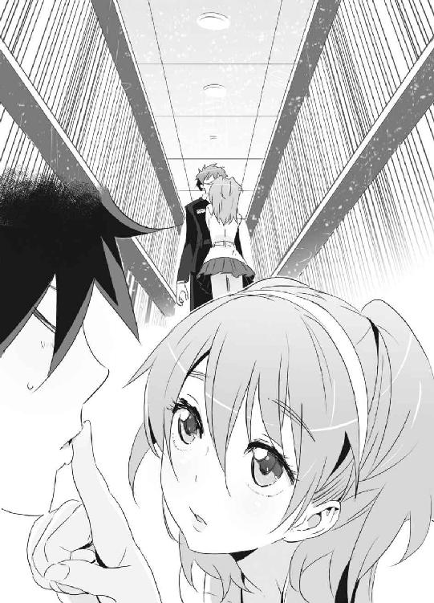
謙吾が目をつぶっている間に、ユキナは彼の唇にそっと人差し指をのせた。
そっと撫でてから、指先を今度は自分の唇に持っていく。
「よし、謙吾。もういいぞ」
「ん......？」
瞼を開けた謙吾は、自分が何をされたのかよくわかっていないようだった。
こんな消極的な間接キスでも、ユキナにとっては大事な意味があった。戦闘のためだけに二人一緒にいるわけではない──そのことを、確認するために。
二人のファーストキスは、血の味だった。
まだ、ユキナが海神学園に途中編入してきた直後の話だ。トラブルに巻き込まれた謙吾は、ユキナの目の前でハチの巣にされた。ライフルで撃たれたのだ。瀕死の謙吾を、ユキナがナイチンゲールの力で救った。
あのとき──すべてが始まった。逃れられないさだめと戦いの歯車が回り出した。
謙吾とユキナは、命の絆でつながっている。
「よし、行こう。謙吾」
３
謙吾と彩離はＧＥＮＥＺを装着し、ユキナと七湖は海神学園の制服にタクティカルベストという姿で、ＣＶ－22オスプレイに乗り込んだ。
オスプレイは、ティルトローター機だ。
大型プロペラが、上方と前方に九○度回転する。
上方に向いている時はヘリコプターのように、前方に向いている時は普通のプロペラ機のように動くのだ。
その貨物室には、最大二四名まで搭載可能だが、今は大迫と林も入れて六人しかいない。グリークスが使っているオスプレイには、レーダーのジャミング装置や対ミサイル装備が追加されている。
「アフリカ大陸は、前世紀から現在まで紛争地帯だらけだ」
と、大迫が言う。
「だからグリークスの情報部は、常時アフリカ大陸各国の政府に連絡員や調査員を送り込んでいる。そんな彼らからの情報によれば、今アフリカ全土で起きている混乱はすべて、ウィルトゥスの巨大な軍事支援が原因らしい」
「ウィルトゥスは、ＩＴ系から軍需産業になる気なんですか？」
謙吾は訊ねた。
「そこが、実はまだよくわからん」大迫は首を傾げて腕を組んだ。「......軍事支援といっても、ウィルトゥスは兵器を販売したわけじゃない。自分たちが買った武器を、各国の軍に無償で提供したんだ。ある国では政府側に、またある国では反政府側に。政治的信念も何もない。ただ、とにかく軍事力をばらまいている」
「なんのメリットもない」
林が呆れ果てた口調で言った。
「そう」大迫はうなずく。「最初はアフリカ大陸の豊富な鉱物資源が狙いかとも思ったが、ウィルトゥスはダイアモンド鉱山も石油もない貧しいだけの国にも軍事支援を行ってる。はっきり言って、わけがわからん」
「何かありますよ」
謙吾は断言した。
「俺と彩離は、ウィルトゥス代表のレオン・ジョンソンに会いました。あの男は、まともじゃないがバカでもなさそうだった。無意味なことはしない。軍事支援のばらまきにも、何か理由がある。金儲けにつながる、何かが」
各国政府から上空通過の許可はとっているが、ウィルトゥスの対空監視網に引っ掛かるのを避けるため、オスプレイはかなりの低空を飛んでいる。
オスプレイがある国の戦場の上を通過した。ユキナと七湖が、小さな窓から外を見て言葉を失う。
「............」
眼下に、悲惨な光景が広がっていた。空からでもはっきりわかるほど、大量の死体が溢れていた。大量の血で、川が赤い。
「アフリカは常に内戦と紛争の多発地帯だった......しかしそれにしても、ウィルトゥスが起こしたこの戦争は異常すぎる」と、謙吾。「規模に比べて、武器が強力すぎるんだ......これ以上、大虐殺の連鎖が広がる前に止めないと」
地上の砲火に巻き込まれるのを避けて、オスプレイは一時高度を上げた。空中給油で航続距離を延ばして、目的地が近付いてきたところで大型プロペラを上方に動かし、ヘリコプターの機動で着陸する。
アフリカ大陸中部、コンゴ盆地の熱帯雨林だ。
まともに道路も通っていない、コンゴ川を利用しなければ物資を運ぶのは難しい、そんな奥地に人目を避けて、ウィルトゥスのコンゴ工場が存在している。
熱帯雨林の樹木は背が高いものがかなりの割合を占める。そして、うっそうと幅広の葉が茂る高木のために日が当たらない下層では、つる性の植物やじめじめとした質感の苔がなぜか赤みがかった地面を覆っている。
オスプレイが、林だけのせたまま離陸した。ここから先は別行動だ。林はオスプレイで目的にさらに近付き、正面で騒ぎを起こして囮を担当する。
歩きにくい熱帯雨林の道なき道を駆け抜けるために、謙吾がユキナを、彩離が七湖を抱き上げた。ＧＥＮＥＺの機動力ならば、下手な４ＷＤよりも速く走り障害物を軽々と飛び越えるという、野生動物じみた移動が可能だ。謙吾はユキナを抱えた上に、ＳＯＰＭＯＤ－ラハティＡＴＲを背負っていたが、それで速度が落ちるようなことはなかった。
ちなみに、ユキナはベストのホルスターにグロック17拳銃を、予備にベレッタＰｘ４ストームを装備。一切射撃訓練をしたことのない七湖は、護身用にスタンガンと催涙スプレーを持たされている。
「着いたな......」
と、謙吾が足を止める。
ウィルトゥスのコンゴ工場にたどり着いた。
熱帯雨林を切り拓いて造られた、まるで小さな都市のような巨大工場。ほとんどの建物は壁が真っ白で、緑のジャングルから浮かび上がって見える。
「きっと厳重なセキュリティがこの工場にも」
謙吾は、彩離に抱えられた七湖を見つめて言った。
「作戦が成功するかどうかは、七湖さんにかかってる。よろしく頼む」
「うん......やってみる......！」
謙吾に声をかけられると、七湖の目が輝く。それに気づいて、ほんのちょっとだけユキナの胸が痛む。
一足早く、林が戦いの火ぶたを切った。
陽動作戦として、個人で携行できるグレネードランチャーや対戦車ロケットを撃ちまくり、敵の警備の目をひきつける。たった一人とは思えない大暴れだ。
計画は単純だ。ＧＥＮＥＺの二人が、七湖とユキナを守りながら突き進む。言い逃れできない戦争犯罪の証拠を探し、必要なら──この工場を訪れているはずのレオン・Ｍ・ジョンソンを直接押さえる。
謙吾と彩離は、ユキナと七湖をおろした。コンゴ工場の中でも最も大きい建物の近くまで移動する。カードキーと指紋認証の併用ロックがドアの脇についていた。七湖が愛用のノートパソコンを接続し、おなじみのハッキングを試みる──。
ドアが開いた。しかしその直後、七湖は「あっ！」と驚きの声をあげる。
「どうした？」と、謙吾。
「見たことのないタイプの『絵』が広がって......邪魔をされた。ドアは開けたけど、こっちの動きは完全にバレちゃったと思う......」
「その『絵』って？」
「たぶん、ウィルトゥスが新しく開発したっていうニューロ・コンピュータのイメージ。それが、強力な防壁を展開した。『絵』がはっきりと固まる前に遮断されちゃった......」
「ということは、メインフレームもこの工場のどこかにある。ここが敵の根城だ」
と言って、謙吾は背中のＳＯＰＭＯＤ－ラハティＡＴＲを両手で構え直した。
今回、彩離の主武装はミニミ軽機関銃。
ベルトリンクを収納した箱型弾倉が装着されている。
彩離がポイントマン、謙吾がしんがりで屋内を移動開始。
建物の中を進んでいって最初に通りかかったのは、この工場の兵器格納庫だった。ウィルトゥスのレオンが買い集めた世界各国の主力兵器がずらりと並んでいる。戦車や装甲車はもちろん、対戦車ヘリや爆撃機まであった。メルカバにエイブラムス、レオパルドにＴ90──戦車だけでも、三○○台以上だ。
「よくもまあ......これだけ集めたもんだ」
驚くというより、謙吾は呆れた。
「ウィルトゥスは間違いなく脱税もしてるな......それに、マネーロンダリングや密輸で稼いだ裏金が加わって、ここまでの軍備を整えることができた」
「そんなにおかねを稼いでも、まだ欲しいものなの......？」
七湖が、怯えたように言った。レオンの心理がまったく理解できなかったのだ。
「人間の欲望には際限がないらしい」
謙吾は皮肉っぽい笑みを浮かべる。
四人は、半透明の屋根がついたドーム状の兵器実験場に差し掛かった。
兵器実験場は、まるで廃墟だ。人口数万人程度の小さな都市。全体的には、ボスニア・ヘルツェゴビナあたりの雰囲気が漂う。どの建物の壁にも多数の弾痕があり、大口径の砲弾を撃ちこまれて崩壊しかかっているビルもある。
道路には廃棄された車が並んでいた。実験用の的だろう。数十台、数百台......ちょっとした中古車売り場状態だ。弾痕がある車は、中古車としても売り物にはならないが。
「実験場というよりは市街戦の演習場......いや、内戦で荒廃した都市に似てる」
謙吾がつぶやいた。
すると、不気味なキャタピラ音がどこからか聞こえてくる。
地響きが近づいてくる。
「歓迎の準備は万端ってか......！」
彩離が憎々しげに言った。
傾いたビルの陰から、数百メートル先の交差点に現れたのは三台の戦車だ。
装甲車や歩兵戦闘車ではない、本物の主力戦車。
謙吾と彩離は、一番堅牢そうな建物の陰にユキナと七湖を隠した。
「ここに隠れててくれ、仕留めてくる」と、謙吾。
ユキナと七湖はこくこくとうなずく。
「謙吾、ナイチンゲールの力が必要になったら......」
「この地形なら、戦車相手でもギルガメシュ化の必要はないよ」
戦車は、Ｍ１Ａ２エイブラムス。アメリカ軍の第三世代主力戦車だ。
主砲は一二○ミリ滑腔砲、副武装は一二・七ミリ重機関銃。
複合装甲と追加の劣化ウラン装甲で抜群の防御力を誇る。
「行くぞ、バットヘッド２」
「ＯＫ、バットヘッド１」
まず、謙吾が駆けだした。戦車砲の威力は絶大だ。間違っても流れ弾や砲弾の破片に七湖たちを巻き込まないように、全力で走って二人を隠した建物から離れておく。
三台の戦車は、互いの死角をカバーしつつ、矢じりのような陣形を組んでゆっくりと広い道路を進んでいく。
走る謙吾を狙って、二台の戦車が主砲を放った。一発は謙吾の頭上を、もう一発が謙吾のすぐ後ろを通過していった。外れた砲弾は廃墟のビルを破壊し、地面に巨大な爆発跡を描く。爆風で謙吾の体がビリビリと震える。
やはり、主力戦車のプレッシャーは凄まじい！
謙吾はラハティＡＴＲを構えているが、まだ二○○メートル以上離れているし、敵戦車の上面か後方をとらなければ意味がない。
いくら新開発の装弾筒付高速徹甲弾を装塡済みとはいえ、主力戦車の前面装甲を「抜く」のは試してみるまでもなく不可能だ。
一方、彩離がジェットパックで飛んだ。
戦車に対して高速で間合いを詰めていく彩離に、三台の戦車が一斉に副武装の重機関銃を連射した。彩離は複雑な空戦機動で弾丸の雨をかいくぐり、矢じり型陣形の先頭にいるエイブラムスの上に着地する。
恐鳥型ＧＥＮＥＺ最強の武器は足の爪だ。謙吾の牙と同じ超硬合金製で、この世に存在するほとんどの装甲を切り裂く。
まず彩離は副武装の重機関銃を後ろ回し蹴りで吹き飛ばし、長い砲身にカカトを落として思い切り歪ませた。戦車砲は実はデリケートな武器なので、たったそれだけのことで戦力としてはほぼ使い物にならなくなる。
彩離に飛び乗られたエイブラムスを、残った二台は早々に見捨てた。一二○ミリの主砲を撃ち、仲間の戦車ごと彩離を仕留めようとしたのだ。
「......っ！」
二発の砲弾は、どちらも彩離が上に乗っている戦車に命中。後方の装甲を貫いて、弾薬は誘爆し、大爆発を引き起こす。
「かはっ！」
彩離は吹き飛ばされて、近くのビルの壁にめり込む。
「くっそ......！」
ダメージはそれほどでもないが、体の半分以上がコンクリートに埋まっているので次の回避行動をとることができない。
これでとどめだと言わんばかりに、一台の戦車が彩離に主砲を照準する──。
それを阻止するために、もう一人のＧＥＮＥＺ──謙吾が走る速度を上げた。
障害物の車を軽く飛び越えて、走る。
相手の弱点をつくために、回り込む。
謙吾と戦車の間には、六階建ての廃ビルがあった。
これだ！ と思った謙吾はジャンプ。一気にビルの五階に飛び込んだ。
前回りで受け身をとって、素早く立ち上がる。
対戦車ライフルは飛んだり跳ねたりする際には少々かさばる代物だが、ＧＥＮＥＺの高性能がカバーしてくれている。
謙吾はビルの五階を駆け抜けた。直線上に窓はなかったが、体当たりでコンクリートの壁を破って外に飛び出す。
そこは、まさに敵戦車の真上だった。
「食らえッ！」
謙吾は空中でＳＯＰＭＯＤ－ラハティＡＴＲを発砲した。
立て続けに、四発。巨大な空薬莢が謙吾とともに宙を舞う。
戦車の上面は、ハッチやセンサーが集まる構造上最も装甲が薄い。しかも、謙吾が使うラハティの弾丸は装弾筒付の特別製だ。
凄まじい高速で飛びだして、あっさりと上面装甲を貫通した。エイブラムスの砲塔に四つの大穴が穿たれる。そして、一拍遅れて爆発する。
謙吾は、最後の一台の側面に着地した。距離は三○メートル。狙い撃ちだ。戦車が動き出すよりも早くラハティを構え直し、引き金を絞る。
一発は砲身の根元に、もう一発は砲塔と車体の隙間に炸裂した。一二○ミリ砲は発砲不可能となる。
完全にとどめを刺すために、エイブラムスに飛び乗ってラハティを零距離射撃。車長用ハッチや装塡手ハッチといった弱点に高速徹甲弾を撃ちこむ。
内部に侵入した五発は跳弾し、メカニズムを徹底的に破壊した。
最後は弾薬収納庫に撃ちこんで誘爆させる。
戦車三台の撃破を確認し、謙吾と彩離は再び合流した。
「大丈夫か、バットヘッド２」
「危なかったけど、ダメージは特になし」
彩離は「ぐっ」と親指を立ててまだ戦えることをアピール。
その時だった。
ドームの屋根を突き破って、大量の砲弾が降り注いでくる。
まるで、大量の槍を上から投げつけられているかのようだ。謙吾たちの近くで道端の廃車が四散し、建物に特大の弾痕が次々と生じる。
「これは......二五ミリのガトリング砲！ スプーキーか!?」
謙吾は叫ぶ。他にはありえなかった。
上空からの砲撃で皆殺しにするつもりだろう。
もし謙吾の推測が正しければ、ＡＣ－１３０Ｕスプーキー・ガンシップには、赤外線前方監視装置や低光量テレビカメラ、最新のＥＣＭ電子戦装置が搭載されている。半透明の屋根越しでも、いずれ謙吾たちの位置を正確に把握するはずだ。
「あたしに任せて！ っていうか、空の敵はあたし以外じゃ無理でしょ！」
「大丈夫か！」
「へーきへーき！ 二人を連れて先を急いで！」
彩離一人に任せるのは心配だが、確かに謙吾のＧＥＮＥＺではどうにもならない。
「死ぬなよ、彩離！」
「そっちこそ！」
彩離は背中の翼を最大まで展開。
追加燃料タンクを使ってジェットパックの出力を増し、飛び上がる。
４
謙吾、ユキナ、七湖の三人は、兵器実験場を抜けた。
コンゴ工場の中枢部を探して、走り回る。
「彩離は一人で行ったのか」
心配そうにユキナが言った。
「空のことはあいつに任せるしかない......俺たちは俺たちの仕事を」
『戦車三台倒すなんて、すごいな。さすがは大牙謙吾だ』
建物に仕掛けられたスピーカーから声がした。聞き覚えのある声だ。
「レオン・ジョンソン......！」
獣のように謙吾が低くうなる。
『父親は日本の外務大臣大牙厳一。次期総理かと噂される重要人物』
「......謙吾のことを調べたのか」
ユキナが驚いて言った。
『例の拷問で、本名を聞き出せたからね。母親は爆弾テロ事件で死亡。その後、父親によって強制的に少年兵育成の特殊プログラムに送られる。ところが、このプログラムについてはいくら調べても情報があまり集まらなかった。一体、どこで何をやらされてたんだ？ まあ、それは仕方ないとして......グリークスに入ってからの仕事はいくつか確認できたよ』
「............」
謙吾は何も言わずに先を急ぐ。その後ろに、ユキナと七湖がついていく。
『三年前、二月。内戦状況のコートジボワールで少年兵二○○人の武装解除に成功』
レオンの言葉が、ナレーションのように謙吾の背中にふりかかる。
『同年五月、チェチェン独立派に軍事顧問の一人として参加』
『二年前、三月。ダルフールで軍事作戦を展開。いくつもの虐殺を未然に防ぐ』
『同年五月、コンゴのムブジ・マイで民族対立を煽る武装ゲリラの拠点を急襲。一時捕虜になるも、作戦は成功』
『同年一二月、たった四人のチームでコロンビアの巨大麻薬カルテル「インヴィエルノ」を壊滅させる』
『去年二月、仲間の堤彩離、セルジュ・ドラグレスクとともにボスニアに潜入。逃亡中の戦争犯罪者ミハイロビッチ将軍を逮捕。裁判の結果、有罪に追い込む』
『──まだまだあるぞ』
幼なじみのユキナでも知らない、謙吾の過酷な経歴──。
ユキナも七湖も、走る謙吾の背中を見つめる。
装甲に包まれた無言の大きな背中が、妙に痛々しく二人の目に映った。
謙吾たちは、吹き抜けの大ホールに出た。
半径一○○メートルの広い円形の空間。上階に移動するために、螺旋階段が壁に沿って巡らされている。階段を上った二階の奥に、メインフレームとニューロ・コンピュータが設置されたマシンルームがあった。
一階には──因縁の相手、エンキドゥと敵のナイチンゲールが。
吹き抜けの二階、マシンルームの前にレオン・ジョンソンがいる。
エンキドゥの操縦者はヘルメットを外していた。メガネをかけていて、驚いたことに謙吾と同い年くらいの少年だった。
「始める前に、ちょっと俺から質問していいか？」
と、エンキドゥの少年が片手をあげて口を開いた。
「これから戦うのはいいんだが......依頼人のあんたは、いったい何がしたいんだ？」
どうやら、レオンは仲間にも自分の目的を話していないようだった。
少年は怪訝そうに続ける。
「そろそろ大詰めだ。戦争まで起きてる。せめてどういう風にあんたが儲かるのかくらい知っておくと、モチベーションが上がるんだが......」
「バビロン・メディスンの凄腕傭兵にそう言われたら、答えないわけにはいかんだろう。戦車まで撃破された今、グリークスのＧＥＮＥＺに対抗できるのは君だけだからな」
レオンは余裕たっぷりの表情だ。
「............」
謙吾たちは黙って話を聞いている。
今すぐにでも戦いたいのは山々だったが、レオンの目的も知っておきたかった。親切に説明してくれるというのなら、聞いておいても損はしない。
「我が社は今、アフリカ大陸の各国に軍事支援を始めた。この工場は、そのためだけに造った拠点だ。大量の兵器は、もう見ただろう？」
「しかし、兵器を売って儲けてるわけじゃない」
謙吾は言った。
「ああ」レオンは軽くうなずく。
「うちはパソコンの会社だから。兵器の売り買いだけで儲けようとは思ってない。
今までの多国籍企業は、豊かな国にものを売ることで利益をあげてきた。しかし、消費文化も発達し過ぎた。たとえばパソコン一つとっても、先進国で急激に需要が伸びることはない。欲しい人間はもうだいたい持ってるからね。これからは、貧しい国の人間にもパソコンを買ってもらわなければならない」
「ようやく、貴様の狙いがわかった......」
と、謙吾が握り拳を固める。
「ＯＤＡだな」
「その通り。頭の回転が速いね」
政府開発援助、略称ＯＤＡ。
国際貢献のために、先進国が発展途上国に対して行う援助や出資のことだ。
「発展途上国には、先進国からおよそ一五兆円のＯＤＡがばらまかれている」
レオンは自慢の工作を披露する子供のような顔だ。
「......このアフリカでは、我が社の軍事支援によって内戦や紛争が凄まじい勢いで激化している。ばらまかれるＯＤＡはさらに増額されるだろう。さらに、慈善団体や一般の市民から『善意の寄付』も集まる。国連の特別予算が組まれて復興援助にあてられる。どれほどの『経済効果』になるのか、想像できるかい？」
経済効果、と聞いて謙吾は吐き気がした。
──戦争で人が死んでいる。人の命をなんだと思っているんだ？
「偏った軍事支援を行い大虐殺を進めれば、内戦や紛争が一段落する。復興作業にも、ウィルトゥスが関わる。病院、学校、警察、選挙事務所......様々な場所でパソコンが必要になる。それを、インフラ開発援助枠のＯＤＡや善意の寄付で買ってもらうわけだ。
我が社は、今後数十年にわたって経済支援の一部を享受する。契約を結んだおよそ四○の国々から、毎年五兆円あまりが支払われる計算だ。初期の無償軍事支援も投資と考えれば、安いもの。さっきも言ったとおり、先進国の市場はどこも飽和状態と言っていい。だが、発展途上国は違う。最高の奴隷市場に育つ」
「何が復興だ」と、謙吾。怒気をはらんだ声で言う。「虐殺で問題を一時的に解決しても、いずれより大きな戦乱が起きる」
「そうなるだろうね」レオンは涼しい顔で言った。「その時はその時で、また新たな金儲けにつなげるよ。ありとあらゆる状況に備えて、我が社が誇るニューロ・コンピュータが利益予測のシミュレーションを繰り返している」
「なんてヤツだ......」
と、ユキナが呆れ果てていた。
「あと、そういえば......アフリカ諸国には資源もあるな」
調子に乗ってきたレオンは鼻歌まじりに言った。
「資源......石油やダイアモンドか？ お前が軍事支援をした国にそんなものは......」
そんなものはない、と謙吾が言おうとしたら、先にレオンが答えた。
「石油もダイアモンドも興味ない。私が支援した国には、レアメタルの鉱山がある。携帯電話、デジカメ、パソコンの生産に必要なベリリウム。ディスプレイや電子部品に使うストロンチウム──。それらを独占すれば、発展途上国で需要が急伸しても、他の会社は商品を用意することができない。一石二鳥、というわけだ」
「そんなにおかねを稼いで......何がしたいの？」
七湖が、呆然とした表情でつぶやいた。
「君は......布施七湖か」
レオンが、思いだしたように言った。
「そうだ、君についても調べたんだった」
「私のことも......？」
「ああ。世界的に珍しい共感覚者。その中でも、特に不思議な能力の持ち主、世界最高にして唯一のハッキング能力の持ち主......布施七湖が稼ぎだす大金を巡って、両親は離婚。君にとって金とは悪なんだろうな」
「............」
「君と私は境遇が似ている。違うのは、家にショットガンがあったかどうかだ」
「し、質問に......答えて......」
と、眉間に縦じわを刻んで七湖は話の先を促した。
「ええと、そうだ......『そんなにおかねを稼いで......何がしたいの』かだった。ふうむ。説明は難しい。大金を手に入れればわかる、と言っておこうか。一度も海を見たことがない人間にいくら言葉で説明しても理解は難しいのと同じだ。布施七湖さん、その力で、本気で金儲けをしてみなよ？ 金が増えれば万能感が増していく。貯金が増えるたびに、俺は神に近づいていくんだ」
「叙事詩によれば、ギルガメシュは半神半人らしい」
謙吾は殺気をこめて、言う。
「あんたが神なら、相手になってやる！」
「相手を間違えるなよ。お前の相手はこの俺だ」
エンキドゥが前に出てくる。
「今の説明で依頼主の行動にも納得がいった......始めるか」
第七章 電子戦のゲルニカ
１
海神学園にセルジュが帰ってきた。
空港からヘリで特進クラス専用スペースに運ばれてきて、そのまま装備開発部のラボに入院する。小さな病院のようなラボの一階で、担架で横になったままエレベーターが来るのを待っていると、こども学長・厳島アイナがとことこ歩いて近寄ってきた。
「......まったく、無茶をするから......」
いつも眠そうな表情のアイナが、呆れ果てた口調で言った。
「えろうすんません」
セルジュは横になったまま頭を下げようとするが上手くいかない。
「あいつらの様子はどうですか」
あいつら、とはもちろんビーバス＆バットヘッドのことだ。
「......スーダン支社から戦況は随時報告されています。まさにこれから決戦です......」
「さいですか......」
セルジュは目つきを険しくした。仲間の戦いの行く末が気にならないわけがなかった。
「謙吾たちなら勝ちますよ......」アイナはぼんやりとした口調で、しかし断言した。「一度バビロン・メディスンの傭兵に負けたと聞いていますが、その時はユキナが同行していなかったとか。ちゃんと、私が上層部を説得しておきました。リスクはあるが、ギルガメシュとナイチンゲールは引き離すべきではない......」
「俺もそう思います。無敵の二人や」
「......じゃあ、とにかくセルジュは傷を治すことに専念して......」
「あ、その前に」
セルジュは、ごそごそとズボンのポケットから小さなキーホルダーを取り出した。それをアイナに手渡して、言う。
「これ、グアムのお土産です」
「......へ？」
「大したもんやあらへんけど......せっかくなんで。ずっとポケットに入れっぱなしで、三九階から投げ落とされてもほとんど傷つかへんかった幸運のお守りです」
「あ、ありがとう......」
セルジュからお土産という意外性に、アイナがどぎまぎした。
エレベーターが到着する。
「じゃ、いってきますわ。謙吾たちになんかあったらすぐに教えてください」
ラボの研究員によってセルジュはエレベーターに運び込まれた。人間ならこのまま集中治療室か手術室に向かうところだが、戦闘用ゴーレムの場合は「秘術科の儀式室」だ。
ドアが閉まって、廊下に残ったアイナは「......まったく、もう......」と独りごちる。
アイナは、セルジュがくれたキーホルダーを見つめた。
リングとチェーンの先に、アロハシャツを着たペンギンのマスコットがついている。
「セルジュ......バカで女好きのくせに......」
２
強烈な加速に全身が軋む。
彩離のＧＥＮＥＺのセンサーが標的を確認した。
謙吾の言った通りだ。砲撃してきたのは、ずんぐりとした太い機体に、四発のターボプロップ・エンジン──ＡＣ－１３０Ｕスプーキーだった。
機関砲、榴弾砲、ガトリング砲などで地上を制圧するための「空の要塞」──または「空の戦車」とでも言うべきガンシップだ。
スプーキーは、高度三○○○メートルを左周りに旋回している。
機関砲や榴弾砲を撃ちこまれたら、地上の謙吾たちは大変だ。
彩離は恐鳥型ＧＥＮＥＺ空戦強化型にさらなる加速を命じる。
いきなり、スプーキーが彩離を狙って四○ミリ機関砲を発砲してきた。
気づかれたのだ。
「！」
彩離は通常の戦闘機に比べてはるかにサイズが小さい。そのおかげもあって、砲弾は真横に外れていた。
空中でこれを食らえば、剣歯虎型に防御力で劣る恐鳥型ＧＥＮＥＺはひとたまりもない。
距離が縮まる。
スプーキーはさらに機関砲を撃った。
砲弾が彩離の右肩をかすめる。直撃ではないが、ギシッ、という嫌な衝撃を感じる。
距離が縮まって、スプーキーは攻撃方法をガトリング砲に切り替えた。
高速で大量の機関砲弾をばらまいて、彩離をこれ以上近づけないよう弾幕を張る気だ。
彩離は最高速度、マッハで飛翔する。パワードスーツで空を飛ぶのは本来そうとう無茶な話だ。ＧＥＮＥＺの特殊な衝撃・加重吸収構造がなければ、Ｇで意識を失うか、下手をすれば死亡していただろう。
ガトリング砲からの猛烈な連射を、彩離は空戦機動で回避していく。
横にロールをうつ。左右に切り返す。
空中戦で重要なのは、旋回能力と加速率──即ち、小回りだ。彩離のＧＥＮＥＺは攻撃力や最高速度では通常の戦闘機にかなわないが、小回りに関しては完全に勝っていた。
「さすが空戦強化型！」
大量の砲弾が雨滴のように彩離に迫ってくる。
彩離は旋回しつつ急上昇し相手の上をとり、一気に降下して加速した。ハイスピード・ヨーヨーと呼ばれる空戦機動だ。
とうとう間合いが詰まった。ドッグファイトではない。ＧＥＮＥＺが得意とする「肉弾戦」の距離だ。
彩離はそのまま、飛び蹴りの姿勢でスプーキーに突っ込んでいく。
間近で見るスプーキーは、まるで小さなビルが空を飛んでいるかのような迫力だ。飛行機というより、船に特攻するような感覚だった。
機体側面の装甲を破って、彩離の体が機体内部に入る。
そこは、スプーキー搭乗員の休息区画だ。
驚く敵の搭乗員たちを無視して、彩離はハイキックで扉を吹き飛ばし、コンピュータや管制パネルが集まった電子戦管制室にずかずかと踏み込んでいく。
壁を埋め尽くす精密機器に向かって、彩離は腰だめに構えたミニミ軽機関銃を乱射した。弾痕の列が走ってモニタやパネルは火を噴き、電子戦管制室はその機能を停止する。大暴れしながら、彩離は猛烈にダッシュする。
再びジェットパックに点火して、機体の後部に大穴を開けて飛び立つ。
二つも大穴を穿たれて、スプーキーは空中分解した。バラバラになる過程で燃料に引火し、空中で大爆発する。なんとか脱出した搭乗員のパラシュートが空を漂う。
「ウィルトゥスに対して航空優勢を確保！」
彩離は無線で大迫たちに報告した。
３
謙吾はエンキドゥを睨みつけている。
エンキドゥの少年は、口だけで笑う。
「前回はあっけなかったよな」
「楽しんでいただけなかったようで、申し訳ない」
謙吾はわざと畏まった口調で言った。
「そっちにもナイチンゲールがいるって聞いて、楽しみにしてた」
「今度は、こちらも万全の状態だ」
「ようやく、本番ってことだな」
謙吾の隣にはユキナが、エンキドゥの隣には首輪の少女がいる。
少女の首輪を見て、謙吾はその悪趣味に怒りを抑えられない。人間をモノのように扱うのは、謙吾が最も嫌うことの一つだ。
二人の少年はヘルメットを外す。
エンキドゥの少年は、首輪の少女を乱暴に抱き寄せ、唇を奪った。
謙吾にユキナが近づいてきて、二人は軽く手をつなぎ、互いの遺伝子を確かめ合うかのようにキス。
そして、少年たちは不死身の戦士──ギルガメシュになる。
「どけ」
用がすんだら、エンキドゥの少年はナイチンゲールの少女を突き放した。
謙吾はそっと唇を離し、絡み合った指を解いていく。
「いってくる」
「うん」
ユキナは、静かに微笑んで死闘に臨む謙吾の背中を見送った。
二人のギルガメシュは、ほぼ同時にヘルメットを被る。
ナイチンゲールの力は無制限ではない。他人を不死身にするのは、一日に一回が限度だ。ここで負ければ、二度目はない。
またもやユキナと謙吾のキスを目の前で見せられて、七湖の心にささくれだった感覚が走る。あのキスが、普通のキスではないことはわかっている。理解できている。あれは愛とか恋とか以前に、必要なことなのだ。それなのに──。
「............」
拳を固める七湖の側に、儀式を終えたユキナが駆け寄ってきた。
「巻き込まれたら危ない、こっちに」
と、ユキナは七湖をかばうために抱きよせる。ナイチンゲールは不死身だから、ふとしたことで死んでしまう七湖の盾になってくれるというのだ。
──ユキナさんはいい人だ。
でも、友達にはなれないかもしれない。
謙吾は、スリングで背負っていたＳＯＰＭＯＤ－ラハティＡＴＲを肩づけに構え直し、エンキドゥに狙いを定めて引き金を絞る。ドンドンドン！ と空気を震わせる砲声。一弾倉分一○発すべてエンキドゥに着弾し、凄まじい金属音が鳴り響き火花が飛び散っても、一発も装甲を貫通することはなかった。関節部分の弱点に徹甲弾をねじこまない限り、対戦車ライフルを使っても有効打にはならないらしい。謙吾はラハティを放り捨てる。
間合いが詰まる。
ホール状のマシンルームは、まるで古代ローマのコロッセウムのようだ。
エンキドゥがガントレットで殴りかかる。
謙吾は超硬合金の牙で嚙みつく。
拳と牙で打ち合って火花を散らし、互いに一歩も退かない。
エンキドゥの豪腕をかわし、謙吾は腹に突き刺す。確かな手応えがあるが、相手が回復するのはわかっている。刺した直後に、ガントレットで殴られる。
頭部に拳が炸裂し、謙吾の頭蓋骨にヒビが入った。すぐに再生する。
「エンキドゥは、ＧＥＮＥＺと戦うために作られた！」
拡声器越しに敵が吠えた。
「いかにも、そんな感じだろ？ ああッ！」
エンキドゥは補助脚で自分の体を支えつつ、両足をそろえて強烈な蹴りを放った。謙吾は咄嗟に両腕をクロスさせて蹴りをブロックする。──が、威力を完全に殺すことはできず、吹き飛ばされる。
体が宙に浮いた謙吾は、空中で一回転し、体勢を立て直しながらきれいに着地。エンキドゥが追いかけてきたので、右のハイキックで迎撃。敵の側頭部をとらえた。ＧＥＮＥＺで脚力が強化されているので、エンキドゥの首に大打撃を与える。
しかし、やはりそのダメージも数秒で回復。
時間を稼ぐには、首を完全に切断しないと意味がないようだ。
──数分殴り合ったが、埒があかない。
状況を打開するために、謙吾はタックルを仕掛けた。床に倒して、寝技で全身の骨を折り、徹底的にマルチピード・アーマーを破壊するつもりなのだ。中身が再生しても、アーマーが使い物にならなくなれば動きは鈍くなる。
謙吾はエンキドゥの右足をとった。引っくり返そうとするが、エンキドゥには補助脚もついているので、踏ん張られるとビクともしない。逆に謙吾が押し倒されそうになったので、素早く跳びあがって相手の右腕を両足で挟んだ。そのまま空中で身をひねって、関節を極める。操縦者の腕の骨と、エンキドゥの右腕関節部分を破壊する。
「くっ！」
エンキドゥの少年が低くうめいた。
腕の骨は元に戻るが、マルチピード・アーマーの破壊された関節はそのままだ。装甲に包まれた右腕がだらん、と垂れ下がる。
エンキドゥは、左腕で謙吾の足をつかみ、ぶん投げた。
「なめるなよ！ 左腕一本あれば戦える！」
凄まじい勢いで投げられた謙吾は、一〇メートル以上飛んで吹き抜けの天井に激突した。
「がッ！」
砕けた天井の破片とともに落下する謙吾。今度は床と激突。スーツに異常はないが、衝撃で呼吸が止まりそうだ。
「いただきだッ......！」
と、エンキドゥは左腕のガントレットから電極を延ばした。
今、謙吾は動きが鈍っている。立ち上がろうとする動きに隙がある。そこに、スタン・ガントレットを叩きこんで決着をつけるつもりだ。不死身でも、電気で意識を失えば関係ない。
エンキドゥの補助脚についた車輪がフル回転。
急激に加速して、左手のスタン・ガントレットを叩きつける。
「謙吾！」
と、ユキナが悲鳴をあげた。
だが──、
謙吾は、ヘルメットの下で笑っていた。
──引っ掛かったな！
天井と床、二回の激突は確かに効いたが、実のところ動きが鈍るほどではなかった。よろよろと隙だらけで立ち上がろうとしていたのは、演技だ。敵がスタン・ガントレットの電極を延ばすのを待っていた。
エンキドゥが振るったスタン・ガントレットに、謙吾は左腕の牙をぶつけ合わせた。
ガントレットの電極を、牙が押し潰し、切り裂く。
「な──！」
感電しないように、謙吾は素早くＧＥＮＥＺの背面装甲を開放。外に出た。
危険を察して、エンキドゥの操縦者もスーツから脱出する。
ＧＥＮＥＺとエンキドゥ、激突した双方の左腕が完全に吹っ飛んだ。
電極が破壊されたために、ガントレットにため込まれた大電力は両方のスーツに同程度のダメージを与えた。その影響で、機能が停止する。
スーツから脱出した二人は、どちらもＳＦ映画の未来人が着ているようなスキンスーツ姿だった。強化外骨格内の環境を快適に保つための、薄いフィルム状のスーツ。防御力はほとんどない。
謙吾は、スキンスーツの上にショルダーホルスターを巻いていた。そこには、ＦＮ５・７拳銃がさしこまれている。
「......俺は武田爪兵だ」
と、エンキドゥの操縦者が言った。彼は、レッグホルスターにＩＭＩのジェリコ９４１ＦＬ拳銃を装備している。
「なぜ、突然名乗った？」と、謙吾。
「お前を殺す男の名前くらいは覚えておいた方がいい」
爪兵は自信たっぷりだ。
「死ぬのはお前だ。勘違いするなよ」
謙吾はＦＮ５・７のスライドを引いて、両手で構えた。
爪兵もＩＭＩジェリコ９４１ＦＬを抜く。
先に引き金を絞ったのは謙吾だった。二連速射で、まず爪兵の胸に二発。そのあと、頭に一発。確実に相手をしとめる射撃法だが、ギルガメシュ相手には意味がなかった。
爪兵は、謙吾の首を狙ってジェリコを撃ちまくった。銃弾で謙吾の首を切断するつもりなのだ。謙吾は慌てて左腕を前に出して自分の首を守り、ＦＮ５・７を片手撃ちに切り替える。
互いに不死なのがわかっているので、あまり動き回らず、ほとんどノーガードで銃撃戦を繰り広げる。血が床に飛び散って体にいくつも弾痕が生じるが、それもすぐに再生。ＦＮ５・７徹甲弾二○発。ジェリコの九ミリ弾一六発。あっという間に弾丸が切れる。
「まあ」
「こうなるよな」
謙吾と爪兵はランナーズハイに近い状態だった。
脳内麻薬のせいで楽しくて、笑みがこぼれる。
二人は同時に拳銃を捨てた。あとは、直接殴り合う。
いつの間にか、七分近くが経過していた。
爪兵は、ボクシング、右利きのオーソドックスに構えた。
謙吾は腰を落とし、両腕ともに前に出し──シラット系軍隊格闘技の構えをとる。
爪兵が仕掛けた。電光のようなジャブ二発。謙吾は見切れなかった。パンパンッ、と左が弾けて、爪兵はすかさず右のストレート。お手本のような連係が炸裂し、謙吾の目の奥で火花が散る。鼻の骨が折れて血が噴くが、再生する。
「ぐッ！」
謙吾は踏ん張って、左手で爪兵の右手をつかんだ。振りほどかれる前に思い切り引っ張って相手の体勢を崩し、右でぶん殴る。この一撃で爪兵の顎の骨が砕けるが、再生。
「期待通りだ！ こんなに楽しいのは久しぶりだ！」
爪兵が長い舌を出して喜んでいた。
謙吾はあんな下品な表情はしないが、気持ちは理解できる。
爪兵が右フックを繰り出してきた。謙吾は思い切り身を低くしてそれをかわす。そのまま床に手をついて、半ば逆立ちのような体勢で派手な後ろ回し蹴りを放つ。まるでカポエイラだが、これはシラットの蹴りだ。
竹を割るような打撃音。
謙吾の足が、爪兵の頭部を打ち抜く。
「......ッ！」
脳を揺らされて、よろめく爪兵。
謙吾は床の上を転がって、爪兵の真下に入りこんだ。そこから横に回転して、爪兵の右足に自分の両足をからめて引き倒す。
謙吾は倒した爪兵の右足を足で挟んで固定し、かかとをつかんで横にひねった。爪兵の右足首と右膝を同時に破壊する。
「痛えじゃねぇか、クソ野郎！」
破壊された右足を無視して、爪兵は横に回転しつつ残った左足で謙吾を蹴った。謙吾の力が緩んだところで、爪兵は自分の足を抜いて再生を確かめつつ立ち上がる。
──そろそろ、リミットが近付いている。
脳内麻薬でハイになりつつ、それでも謙吾は冷静に時間を計算していた。
謙吾と爪兵は、ほぼ同時にギルガメシュになった。
勝負は、ナイチンゲールによる不死身の効果が切れた瞬間につく。
ギルガメシュ化から七分二○秒が経過。
二匹の獣が、殺意をむき出しにしてぶつかり合う。
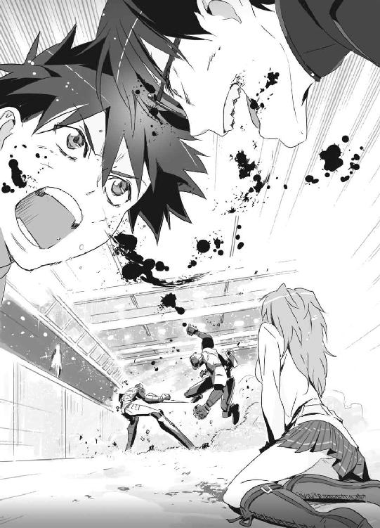
拳が、蹴りが、交錯する。骨が砕けても、両者すぐに回復して戦闘再開。
七分二八秒。
雄叫びをあげて、血と汗と奥歯を散らしながら殴り合う。
七分三○秒──。
いよいよだ。
クロスカウンターのタイミングで、謙吾と爪兵の拳が同時に互いの顔面をとらえた。
二人とも頰の骨と殴った拳にヒビが入る。
「おおッ......！」
謙吾の傷は回復した。
しかし──、
「なっ──！」
爪兵の傷は回復しない。頰と拳にヒビが入ったままだ。
「なぜだッ......！」
爪兵は目を丸くして驚いている。
「なぜ、七分二九秒を過ぎたのに、ギルガメシュの力が持続しているんだ!?」
ああ──。
「俺も知らなかったよ......」
そういうことか、と謙吾は気づいた。
「ナイチンゲールの力には個人差があるんだな」
「......なに？ なんだと？」
爪兵は、自分のナイチンゲールとユキナを交互に見た。
「ユキナ──うちのナイチンゲールは、七分三二秒、不死身の力を与えてくれる。そっちは、七分二九秒なのか」
つまり──たった三秒の差で、謙吾が勝った。本当なら、相打ちだったかもしれない。
「あああああッ......！」
爪兵が悔しげに吠える。
クロスカウンターと同時に、爪兵のギルガメシュ化は解けていた。
三秒間で、謙吾はいつも通りに。
爪兵の膝は震えていた。殴られたダメージが足にきていた。右拳にヒビが入っていて、得意のボクシングはまともに使えそうにない。最後のクロスカウンターは、リミットを目前にした渾身の一撃だった。それだけに、たった一発とはいえダメージは深刻だ。
「悪いな、武田爪兵。お前はグリークスの施設に連れて帰って拷問だ」
謙吾は強烈な下段蹴りで爪兵を跪かせた。
「しばらく寝てろ」
爪兵の頭が下がってきたところに、右の膝蹴り。のけぞる爪兵の後頭部に、さらに肘打ちを落とす。
意識を失って倒れる爪兵。謙吾は念のために上から踏みつけて、爪兵の右腕と左足の骨を折っておく。その傷は、もはや一瞬で再生したりはしない。
謙吾は、敵のナイチンゲール──首輪の少女の方を見た。怖がっている気配もない。特に武器を持っているようにも見えない。しかし謙吾は念のため、「ごめん」と謝りつつ少女に手錠をかけた。階段の手すりにつないでおく。
無表情な彼女に向かって、謙吾は「大丈夫。グリークスは君を保護する。絶対にひどいことはしないから、そのままそこにいてくれ」と告げておく。
「ふう......」
謙吾はため息をついて、額にたまった汗を手の甲で拭った。
ギルガメシュ同士の戦いなんて、初めてのことだった。武田爪兵は、あの若さからすると信じられないほどの凄腕だった。それでも勝つことができたのは、敵のナイチンゲールよりほんの三秒分だけ優れていたユキナのおかげだ。
「ユキナ、ありがとう。こっちはなんとか──」
感謝の言葉とともに謙吾が振り返ったその時、銃声がした。
「！」
弾かれたように謙吾の体がよろめく。
右の肩口に、小さな弾痕が生じていた。
いつの間にか、レオン・ジョンソンが吹き抜けの二階から下に降りてきていた。
レオンは、ワルサーＰ22拳銃を構えてニヤついている。
「バビロン・メディスンには勝ったようだが......日本語で言うと『漁夫の利』ってやつか」
「謙吾！」
ユキナが、制服の上に着込んだタクティカルベストのホルスターからグロックを抜いた。
「ナイチンゲールは引っ込んでいろ」
レオンは、さらに拳銃を発砲。
細い弾丸がユキナの手を貫通し、グロックを床に落としてしまう。傷はすぐに再生するが、銃を拾いにいく余裕はなさそうだった。
「ここまでだな。私は兵士ではないが、君に勝つ。この銃は小口径だが、ＧＥＮＥＺもギルガメシュの力も失った君を殺すのには十分な威力だ」
レオンは余裕の笑顔で銃口を謙吾の頭に照準し直す。
謙吾の顔に、濃い焦りの色が浮かんだ。
「待て！ させないぞ！」
ユキナが鋭く叫んだ。
「銃は落とした。お前に何ができる」と、レオン。
「......実は、銃はもう一丁ある」
「どこにだ？」
その質問に答えるように、ユキナはひらりと制服のミニスカートを閃かせた。
「！」
ミニスカートの下──ユキナの太腿には、専用のレッグホルスターが巻かれていた。そのホルスターからベレッタＰｘ４ストーム拳銃を抜いて、すかさず発砲。
レオンの腕を九ミリ弾が貫通した。
「ぎゃっ！」
銃を落とし、悲鳴をあげてうずくまるレオン。しょせんは何の訓練も受けていない、パソコン会社の代表に過ぎない。痛みにはかなり弱いようだ。
「海神学園の武装メイド部で習ったコンバット・シューティング......」
顔を真っ赤にして、銃に安全装置をかけてホルスターに戻すユキナ。
「本当に役に立ってしまった......」
なんだか肩から力が抜ける。窮地を切り抜けたのに、ユキナは落ち込んでしまった。
謙吾がレオンに手錠をかける。
４
謙吾はＧＥＮＥＺを脱ぎ捨てたが、イヤホン型の受信機とスロートマイクはつけたままだった。無線を介して、イヤホンに彩離の声が飛び込んでくる。
『謙吾！』
「彩離、無事だったか。こっちもようやく片付いたところで──」
『全然片付いてない！』
「──え？」
『別の場所に待機してたらしい敵のＭＱ－１プレデターＵＡＶが、私のＧＥＮＥＺから確認できるだけで一五機！ コンゴ工場を爆撃しようとしてる！』
ＵＡＶ──無人飛行機の略だ。人間の操縦者がいなくても、遠隔操作できる。
プレデターＵＡＶは、全長八メートルちょっと。
地上攻撃のために、ヘルファイア対戦車ミサイル二発を携行している。
「全員道連れだ」
ユキナに撃たれた腕の傷を別の手で押さえて、レオンが言った。
「せっかく色々買ったのに、飛ばしてるのがガンシップだけじゃもったいないだろ？」
「......貴様！」
と、謙吾はレオンに詰め寄る。
謙吾も撃たれているが、たかが二二口径。我慢できる範囲だ。
「戦車の待ち伏せに、ガンシップからの攻撃......そしてマシンルームにはバビロン・メディスンの傭兵。まさか負けるとは思っていなかったが、こうなったらおしまいだ。無人飛行機からの一斉ミサイル攻撃で、この工場を吹っ飛ばす」
「命令を解除しろ」
「嫌だね。無人飛行機を制御しているのは、ここのメインフレームだ。強力なアンテナを使っているから、命令電波の妨害は核爆弾の電磁パルスでもない限り不可能。メインフレームを破壊しても、無人飛行機は最初の命令を実行するだけだ。爆撃を阻止するには命令を書き換えるしかないが──布施七湖に、それができるかな？」
５
高度七○○○メートルを旋回していたプレデターＵＡＶが一五機、謙吾たちがいるウィルトゥス・コンゴ工場をミサイル攻撃するために徐々に降下していく。
恐鳥型ＧＥＮＥＺ空戦強化型を身につけた彩離は、一番近いプレデターに接近した。速度では、ジェットパックを使っているＧＥＮＥＺの方が上だった。横に並んで飛行しつつ、ミニミ軽機関銃の引き金を絞って、大型ミサイルのようなデザインの無人飛行機の機体にライフル弾を撃ち込んでいく。
無人飛行機は重装甲ではないので、燃料タンクや搭載したミサイルのあたりを狙うとあっさり撃墜することができた。
しかし、これで軽機関銃は弾丸切れ。ジェットパックの燃料も、追加タンクの分も含めてほとんど残っていない。一四機も無人飛行機が残っているのに、オスプレイまで一度戻る他に選択肢がなさそうだ。
「まずい、謙吾！ そっちでなんとかしてくれ！」
６
「七湖！」
切羽詰まっているのだろう。初めて、謙吾はその名を呼び捨てにした。
「ハッキングを頼む！ 命令を書き換えて、ＵＡＶを止めてくれ！」
「う、うん......！」
七湖は、メインフレームとニューロ・コンピュータに駆け寄った。
精密機器をのせたラックが整然と何列も並んでいる。黒光りする巨大な棺桶のようなメインフレームと、半透明のケースに多数の基板がセットされたニューロ・コンピュータ。南太平洋研究所にもまったく同じものを見たが、あの時は中身が空っぽだった。今回は違うはずだ。
制御パネルに自分のノートパソコンをつなぐ。
マシンパワーでは勝負にならない。ウィルトゥスのメインフレームとニューロ・コンピュータに比べたら、いくら高性能とはいえ七湖のノートパソコンなどオモチャもいいところだ。しかし、七湖には特殊な「力」がある。どんなにマシンパワーで負けていようと、セキュリティ上の欠陥を見つけてしまえばどうにでもなる。
メインフレームは公衆回線にはつながっていない。専用のネットワーク回線を使う。
構造解析後、ノートパソコンのモニタ上に、機械語とソースコードが凄まじい勢いで表示され始めた。
メインフレームは、ウィルトゥスが試作したニューロ・コンピュータで守られている。
人の脳の最小構成単位を神経細胞という。一四○億個のニューロンが、神経回路網を形成し、人間の思考や感情を生み出している。
ニューロ・コンピュータは、ニューラルネットの仕組みを真似て、人間の脳を人工的に再現しようとしたコンピュータだ。
通常のコンピュータは、計算やデータの比較や検索を行う速度において人間の脳を凌駕している。しかし人間の脳は、画像や音声を把握する能力に優れ、カオスな状況下でも「直感的」に正解を見つけ出すことができる。
ウィルトゥスのニューロ・コンピュータは、人間の脳よりもはるかに優秀で、さらに「直感」のようなものを備えているという。
そんなコンピュータが作り上げた防壁は、手ごわい。
共感覚が特殊な形で発達した、七湖の力。
意識を集中すると、絵が見えてくる。
防壁が、機械の言葉が、七湖の感覚に変換されていく──。
「──ん？」
どろり、とした感触が脳裏に溢れた。禍々しいイメージに、集中が途切れる。
一瞬で、七湖は気分が悪くなる。
見えたのは、誰かの悪意、無念、悲しみ──。
「これは......ただのニューロ・コンピュータじゃない!?」
七湖は叫んだ。
「なっ！」
謙吾とユキナが驚いてレオンを見た。
「ウチが人身売買にも関わってたのは知ってるよな？ 上海で邪魔してくれたから」
ユキナに撃たれた痛みでレオンは涙や鼻水を流していたが、それでも自分の悪事の話となるとテンションがあがってくるようだった。自慢げに説明する。
「買った人間を解剖し、取り出した脳をそのまま実験に使った」
「──っ！」
「ニューロ・コンピュータは、人間の脳の働きを真似たものだ。より高性能化を目指すためには、本物の脳をとことんまで調べてみるのが手っ取り早い。ここのニューロ・コンピュータには、人体実験の結果が色濃く反映されている！ 布施七湖の共感覚が鋭ければ鋭いほど、恐ろしいもの、醜悪なものが見えてくるはず......！」
「あ、あ......」
七湖は気づいてしまった。
ウィルトゥスの特殊なニューロ・コンピュータの疑似神経細胞には、直視しがたい人間の悪意や絶望が刻み込まれている。こんなに邪悪なプログラムは、見たことがない──。
七湖は嘔吐した。あまりものを食べていなかったので、胃液しか出てこなかった。
喉が焼けるように、痛い。
「しっかりしろ、七湖！」
膝を折った七湖に、謙吾が駆け寄ってきた。
「でも......」
我慢できずに、七湖は泣いてしまった。両目から熱い涙が溢れ返る。
ずっと部屋にいればよかった、と七湖は思う。
それで生活できていた。外に出るべきではなかった。パソコンがあればそれで十分だった。外の世界に出たせいで、こんなひどいものを見ることになってしまった。
──私は、辛い思いをしたくないからすべてを捨てたのに。
それなのに。
「こんな汚い奴に負けていいのか！」
自分の世界に閉じこもりかけた七湖を、謙吾の怒声が戦場に引き戻した。
「謙吾......！」
「俺たちは、ゲームの中でもずっと一緒に戦ってきた！」
謙吾が言ったのは、オンラインゲームのことだ。あれがすべての始まりだった。
「『セブン』ならここでへこたれたりしない！」
「──ッ！」
セブンとタイガの冒険。それは、両親や現実の社会に絶望し、色々なものを捨てて身を隠した七湖が、たった一つ大事に育ててきた絆だった。
──何もかも失っても、この絆だけは。
「うん......」
七湖は涙を拭いて立ち上がった。
「『タイガ』......ありがとう、もうちょっとだけ、がんばってみる......」
ウィルトゥスのニューロ・コンピュータが作り出すイメージは醜悪で、見続けることが苦痛だった。
だが、七湖はモニタ上の情報に集中する。
吐き気に耐えて、涙を抑えて、歯をくいしばってキーを叩く。
少しでも多くの情報を引き出して、イメージを確かなものにしていく。
ようやく──プログラムが絵に見えてきた。
「ああ......」
これは──ピカソの「ゲルニカ」だ。
スペイン内戦中、小都市ゲルニカがナチス・ドイツによって空爆を受けた。
史上初の都市への無差別航空爆撃。
その惨状を知ったピカソは、急遽ゲルニカを完成させる。
一九三七年の大作名画だ。
死んだ赤ん坊を抱えて悲しみにくれる母親がまず最初に目を引く。母親の隣には、人間の目をした奇妙な表情の牛がいる。中央には、狂ったように暴れる馬。地面には折れた剣を握りしめている兵士の死体。血まみれで走る女。天に救いを求める人──。誰もが真っ赤な血を流し、建物はオレンジ色の炎をあげて燃えている。
──凄まじい絵だ。圧倒される。
プログラム上の欠陥があるなら、セキュリティ上の穴があるなら、このゲルニカにはどこか「本物」とは違う部分があるはずだ。七湖はそれを探す。
（どこだ......どこだ!?）
違いが分からない。まったく正確な模写に見える。
まさか──欠陥がないとでもいうのか。完璧なセキュリティがこの世に存在するとすれば、どんなハッキング能力も無意味だ。
一度オスプレイまで戻った彩離が、弾薬と燃料の補給を終え、再び空に飛び上がった。
しかし、時すでに遅し。プレデター無人飛行機は、ヘルファイア対戦車ミサイルをウィルトゥス・コンゴ工場の各所にロックオンしている。
「ダメだ......間に合わない！」
今から彩離が全速力で妨害しても、一機撃墜できるかどうか。無人飛行機は一四機も残っている。二八発の対戦車ミサイルは、工場全体を瓦礫の山にするだろう。生きて出てくるのは、恐らく不死身のユキナだけだ。
「ふーう......」
七湖は深呼吸をした。
──私はセブンだ。最高の冒険者。
落ち着いて、改めてゲルニカを観察する。
（どこかにある......本物のゲルニカとは違うところ......）
死んだ赤ん坊、母親、奇妙な表情の牛、狂ったように暴れる馬、兵士の死体。走る女。救いを求める人。誰もが真っ赤な血を流し、建物はオレンジ色の炎をあげて燃えて──。
「あ......！」
──真っ赤な血？
──オレンジ色の炎？
「──見つけた！」
ようやく、七湖は気づいた。思い出したのだ。
本物のゲルニカは──モノクロだ。白と黒だけで描かれている。
七湖は、直感的なハッキングを開始した。
電子戦のゲルニカと本物のゲルニカの相違点を修正していくことで、いつの間にかセキュリティを突破している。七湖の特殊能力。
七湖はニューロ・コンピュータの防壁を突破し、メインフレームに侵入を果たす。
７
一四機の無人飛行機が、一斉に対戦車ミサイルを発射した。
「......っ！」
彩離は、奇跡を信じて発射された二八発の着弾地点を見守る。
まず、兵器格納庫に四発突き刺さった。そのうちの一本が弾薬庫で爆発し、誘爆。レオン・ジョンソンが密かに集めた兵器が次々と爆炎に飲み込まれていく。
兵器格納庫や弾薬庫に人はいなかった。問題は残りの二四発だが──。
「これは......？」
残ったミサイルは、すべてあらぬ方向に飛んでいった。工場ではなく、ジャングルや川の中に落下していく。
「布施さんがやったんだ......！」
彩離は飛翔しつつ両手をあげて歓声をあげた。
８
謙吾とユキナが、七湖に抱きついた。
「ふ、二人とも......痛いよ......」
と、七湖は言った。本当は痛くなどなかった。照れただけだ。
代表のレオンが、死神に魂を抜かれたような、呆けた顔をしていた。こんな少年少女たちに自分が完膚なきまで叩きのめされたことが、いまだに信じられずにいるのだ。
「ユキナと七湖がいなかったら、俺は間違いなくここで死んでた......本当にありがとう。最高の仲間だ」と、謙吾。
「......最高なのは、謙吾だよ」
照れてそう言った七湖を見て、ユキナは「む」と一瞬眉をひそめたが、すぐに反省して笑顔を作り、謙吾と一緒に七湖の頭をくしゃくしゃと撫で回した。
「謙吾も七湖も最高だ！ まったく！」
──だが、テンションがあがった三人は大事なことを忘れている。
ふと謙吾が周囲を見回すと、武田爪兵と首輪をつけたナイチンゲールの姿がなかった。
「しまった......！」
七湖のハッキングに気をとられている間に、逃げられていた。
エピローグ
１
武田爪兵はアンナトゥリーの肩を借りてウィルトゥスのコンゴ工場を出た。
アンナトゥリーは、グリークスの大牙謙吾にかけられた手錠から逃れるために、一度手首と指の関節を外していた。どんな怪我もすぐに治癒する、ナイチンゲールならではの荒技だった。
二人は来る時に使ったボートでコンゴ川を下り、軍の飛行場から専用機でバビロン・メディスン本社ビル──バベルの塔に帰還した。
バベルの塔一三三階、ニムロッド待機室。
ＧＥＮＥＺとの戦いに敗れた爪兵は、折られた骨にギプスをつけていた。バビロン・メディスンの最先端医療なら、骨折もあと数日で完治する。アンナトゥリーは、室内の軽い散歩を始めた爪兵から離れようとしない。爪兵が「邪魔だから離れろ」と言っても、アンナトゥリーは「まだふらふらしてるじゃないですか......」とお節介を焼いてくる。
爪兵がアンナトゥリーに憎まれ口を叩いていると、ニムロッド専属の工作員であるマルゴが、武装兵二人を引き連れて待機室に入ってきた。
「なんだよ、マルゴ」
「......爪兵さんが負けたのは、アンナトゥリーが敵のナイチンゲールより劣った存在だったからです」
マルゴが厳しい表情と口調で言った。
敵が謙吾に与えた七分三二秒の不死身。
そして、爪兵に与えられた七分二九秒の不死身。
この三秒の差で、爪兵は負けた。
「アンナトゥリーを拘束し、開発実験部に連行します。今より少しでも能力の持続時間が長くなるように、そこで再調整を」
アンナトゥリーは「ひっ」と息をのんだ。
悪名高いバビロン・メディスンの開発実験部は、味方からも恐れられている。平気で危険な薬品を使い、目的のためならいくらでも犠牲をだす。不死身のナイチンゲールがどんな扱いを受けるのかは、推して知るべしだ。
武装兵二人が、アンナトゥリーの腕をつかむ。
「オイコラ、待てよ」
爪兵が、折れた骨をかばいながらもアンナトゥリーと武装兵の間に割って入った。
「なんですか、爪兵さん」
「......上層部は、ナイチンゲールに性能差があることを知ってたのか？」
そんな爪兵の一言で、マルゴの顔色が変わった。
「やっぱりか......ユニット１の二人は、正確な数字を俺に隠してたんだな」
「ナイチンゲールに関しては未確定の情報が多く、何を伝えるべきかは上層部の──」
「黙れ」
爪兵は、殺気をこめてマルゴを睨みつけた。
「開発実験部の無能どもは、今まで何度もナイチンゲールを調べてきたはずだ。それなのに、なんの成果もあげてないじゃないか。再調整とやらもただの建前で、本当はあの無能どもが改めてアンナトゥリーを使って実験したいだけだろうが」
「くっ......」
開発実験部が、ナイチンゲールに関して何の研究成果もあげていないのは事実だった。
「あの無能どもに妙なことをされて、アンナトゥリーの能力が低下する可能性すらある。アンナトゥリーは渡さん。『顔を洗って出直してこい』と伝えておけ」
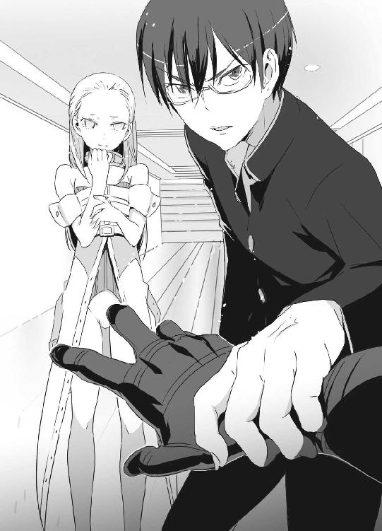
爪兵の正論に、マルゴはまったく反論できなかった。
「......わかりました。申し訳ありません」
と、マルゴは武装兵を連れて引き返していった。
「あ、ありがとうございます......助かりました」
アンナトゥリーは泣きそうな顔で頭を下げる。
「お前を助けたわけじゃない。勘違いするな」
爪兵は吐き捨てた。
「上層部の判断ミスだ。こういうのはビシッと言っておかないと、あとあと困るからな。俺はお前がどうなろうと知ったこっちゃなかった......」
「はい、わかっています......」
──武田爪兵には、姉がいた。子供の頃から凶暴で残忍だった爪兵が、たった一人心を許した人間。姉は、バビロン・メディスンの傭兵だった。
彼女はアンナトゥリーを守るための戦いで死んでいる。
２
セルジュ・ドラグレスクは、海神学園のラボに入院していた。
三九階からの落下は自分で思っていたよりも重傷で、完治まではあと一週間ほどかかるらしい。この時点で、中間テストに参加不可能。再試験決定だ。
ベッドの上で、退屈している。謙吾、彩離、ユキナの三人はよく見舞いに来てくれるが、どうせいつも顔を合わせている面々なので新鮮味はない。
そんなことを考えながらテレビを見ていたら、また面会がきた。
「今度は大迫先生あたりか？」
つまらなさそうに言って、セルジュはテレビから視線を外す。
「大迫さんじゃありません。失礼しました」
今日来てくれたのは、ＩＣＰＯのジャニス・ウィンだった。相変わらずの美貌で、スーツ姿がびしっと決まっている。
「いえいえそんな！ あんなくたびれたオッサンどうでもいいですワ！」
セルジュは慌てて態度を歓迎ムードに切り替えた。
「あなたが倒したジガ・ロッツは国際指名手配中でした。そのお礼です」
ジャニスは、ラッピングされたプレゼントをベッドのサイドテーブルに置いた。
中身が気になって、急いで包装紙を外すセルジュ。
「開けていいっスよね？」
「どうぞ」
中から出てきたのは、大昔に発売された三五分の一、ドイツ重戦車キングタイガー・ポルシェ砲塔だった。
「おお......これレアモノですやん！」
模型が趣味のセルジュには嬉しすぎるブツだ。
「あざーす！」
あまりに嬉しくてセルジュは無理をして立ち上がり、思わずジャニスに抱きつく。
「きゃー！」と、潔癖症気味で男性が苦手なジャニスは少女のような悲鳴をあげ、セルジュを突き飛ばし、懐から拳銃を抜いてドカンドカンドカンと三発撃った。
「うおおおう！」
胸に一発、頭に二発食らってセルジュはのけぞる。
「あッ！ す、すみません！」
反射的にやってしまったこととはいえ、銃を撃ったのはやりすぎだ。ジャニスは泣きそうな顔になって謝罪する。
「俺じゃなかったら死んどるで！」
３
レオン・Ｍ・ジョンソンは、グリークスがＩＣＰＯに引き渡した。そしてＩＣＰＯがレオンをアメリカ連邦捜査局──ＦＢＩに。あとあとややこしいことにならないように、こんな面倒な手順を踏むことになる。
七湖はＵＡＶの攻撃を止めただけではなく、メインフレームからウィルトゥスの犯罪に関わるすべての証拠を引き出していた。人身売買の記録、違法な武器取り引き、数々の殺人──これからグリークスとＦＢＩが協力して、裁判用の証拠を固めていく。レオンが厳罰を免れるのは不可能だろう。
人間の脳を使った忌まわしいニューロ・コンピュータは、破棄。ウィルトゥスとつながりがあったアフリカ諸国の軍人や政治家も、ＩＣＰＯの支援を受けた現地の警察や憲兵隊によって次々と検挙されている。
ユキナが海外から学生寮の自分の部屋に戻ってきて最初に行ったのは、ハードディスクレコーダーのチェックだった。予約しておいた番組がちゃんと録画できているかどうか、まだ買ったばかりのレコーダーだったから不安だったのだ。
ＮＨＫ教育の将棋講座と各局の時代劇、すべて問題なし。
「ふう......よかった。あとで民放の時代劇は編集でＣＭカットしておこう......」
ほっと胸をなでおろし、ユキナは独りごちる。
その時、誰かが部屋をノックした。モニタで確認すると外にいるのが謙吾だったので、鍵を開けた。
「どうした、謙吾」
「いや、これをな」
謙吾は、ユキナに大きなぬいぐるみを手渡した。
「えっ......!?」
それは、グアムで泊まったホテルのアクセサリーショップで売っていた、ポリネシアンダンサーの衣装を身につけた太った猫のぬいぐるみだった。
受け取って「うわあ......嬉しいぞ！」とユキナは目を輝かせて、しかし次の瞬間、はたと気づく。
「でも、あのあとすぐに大迫先生からの呼び出しがあって......これを買う暇なんてなかったはず......」
「ユキナがあんまり欲しそうだったから、情報部の人間に頼んでおいたんだ。で、今朝俺の部屋に届いてたんで持ってきた」
「謙吾......」
ユキナは、ぬいぐるみを「ぎゅ......」と抱きしめる。
謙吾は「うっ」と低くうめいた。幼なじみだし、最近いつも一緒にいるしで慣れたつもりだったが......やはり、改めて見るとユキナはとびきり美貌の少女で、モデル顔負けの抜群のスタイルの持ち主なのだ。それなのにぬいぐるみで大喜びする子供っぽい一面もあり、時々謙吾はどうしたらいいのかわからなくなる。頭から湯気が出てきそうだ。
４
海神学園での日常に戻った大牙謙吾は、ユキナにぬいぐるみを渡し、それからパソコン部の部室に足を向けた。
わくわくしながら歩いていく謙吾。
ファンタスティック・スリーの三人から、例の品物を受け取るのを楽しみにしていた。
パソコン部のドアには、暗証番号と指紋認証のロックが取り付けられていた。暗証番号を打ち込む作業ももどかしく、パネルに人差し指を押し当てて指紋認証もパス。期待に満ちた表情でドアを開ける。
「スーダンで受け取り損ねたゲーム『みみたぶ』の件で来たんだが......！」
「はい、これでしょ」
「ああ、ありが......」
少女からソフトを受け取った。礼を言おうとして、相手がファンタスティック・スリーのメンバーではないことに気づく。
布施七湖──！
謙吾は「ぶふっ！」と噴き出しながら後ずさりした。
「七湖......！ な、なんでここに!?」
「その......私も、海神に通うことになった」
七湖は、薄く頰を染めていた。
「これでねんがんのファンタスティック・フォーだ！」
謙吾の気も知らず、ヒデヨシが楽しそうに歓声をあげた。
七湖は微笑んで、謙吾が手に持ったギャルゲーを指差し、
「謙吾って、そんなゲームもやってたんだね......知らなかった。オンラインゲームをやってた時は、全然教えてくれなかったんだもん......」
「それは、その......」
謙吾はしどろもどろになってしまった。
「約束、覚えてる......？」
七湖が上目遣いで言った。
『私がウィルトゥスの陰謀を暴いたら......また、一緒にゲームしてくれるかな？』
「もちろん......約束は覚えてる」
「もう、今さらウェールズ年代記には戻れないけど......あなたとは、もっと面白いゲームができそうな気がする。これからよろしくね、謙吾」
「え......ええ......？」
七湖に、海神学園でまた会えたことは嬉しい。
だが、同時に一抹の不安を覚えずにはいられなかった。
「謙吾さん......ユキナさんから乗り換えちゃうんですかぁ？」
と、鞠歌がボロボロと涙を流しながら謙吾にすがりついてきた。
「バカかお前は！ 乗るとか乗らないとか......そもそもそんな関係じゃない！」
「うわあ......それマジで言ってんの？ 謙吾......」
ヒデヨシがなぜか呆れたような声で言った。
「俺、なにか変なこと言ったか......？」
「色々とわかってねえんだなあ......」と、コバさん。「まあ、いいや。とにかく仲間になった以上は、俺たちは七湖さんの応援するんでよろしく」
「嫌ですよ、私はユキナさんの味方ですから！」
鞠歌が叫んだ。
「だからお前ら何の話をしてるんだ！ 意味がわからん！」
地下の部室に、謙吾の怒鳴り声が響く──。
〈ＧＥＮＥＺ－２ ジーンズ 了〉
あとがき
今回はちょっと変わった趣向のあとがきでいかがでしょうか。
ライトノベル新人賞を獲るためのいくつかのポイント、とか。
ライトノベルの読者さんは、プロ志望のかたが多いと聞いたので......。
深見は小説の新人賞を二つ、漫画原作の賞を一つ、ドラマの企画書でも一つもらっているので、そこそこ役に立つことが書けるのではないかと。
他の先生が書いた小説指南本のようなものを読むと「アイデアの出し方」とか「プロットの作り方」とか、いわゆる「応用」の部分が中心になっていることが多いと感じました。実は応用はデビューしてから身につけても間に合います。
【その１】確実に文章力をあげる方法
本を写します。そのままです。わりとメジャーな方法かもしれません。
好きな本を用意して、その文章をひたすら自分のパソコン（手書きでもいいけど）に打ち込んでいきます。これを三冊もやれば、新人賞を獲るための最低限の文章力は必ず身についています。「自分には文章力がある」と思っている人も、何度も新人賞に落ちているならこれを試す価値があるでしょう。ちなみに深見はチャック・パラニュークの『ファイト・クラブ』、中山可穂の『猫背の王子』、古橋秀之の『ブラックロッド』（敬称略）をすべてパソコンに書き写しました。
【その２】執筆に集中する方法
これは同業者のアサウラさんと話していた時に出てきたやり方です。執筆に集中するにはネットをやめる。これが一番。ネット通販で資料を買ったり、多少の情報収集に使う分にはいいですが、やりすぎると必ず毒になる。
ネットは一日一時間！ 本気で書くときは、ネット環境が整っていない場所にノートパソコンを持ち込むのがいいでしょう。
【その３】独りよがりにならないために
人の話を聞く。これが大事です。身近にいい友達がいれば、迷惑にならない程度に原稿を読んでもらいましょう。相手が「読みにくい」と言ったら、その意見は素直に受け入れること。あまり辛口ではない、褒め上手だけど言うべきことは言ってくれる。そんな友人が理想的です。「そんな友人が身近にいない」というかたは、積極的に探してみましょう！ 学校でもバイト先でも親戚でも、意外な場所に生涯の友人は潜んでいるもんです。それでも無理なら、自分の作品を「他人のもの」のように読む訓練をするしかありません。
──というわけで、短いですが新人賞を獲るための三つのポイントでした。もっと書きたいことはあるのですが、ページ数の都合もあるので今回はここまで。
では、そろそろ『ＧＥＮＥＺ』の話を。
銃も格闘もいいけど、ラブコメも楽しいなあ......と最近気づきました。ガンガン強化していきたいと思います。七湖と彩離が予想以上によく動いてくれる感じです。
この二巻で敵──バビロン・メディスン側──のギルガメシュとナイチンゲールを出すことができました。武田爪兵とアンナトゥリーはニムロッドの「ユニット２」。次の巻では「ユニット１」の二人組も出すことができればいいなあ。
次の巻といえば、そろそろ謙吾やユキナの過去の亡霊が海神学園に追いついてくる頃でしょうか。特進クラスの他の生徒たちも出番を増やしてあげたいところです。
あと、ＧＥＮＥＺ三巻が出る時期には、何か発表できることがあるかも......。
以上、ではでは次の巻でまたお会いしましょう。深見真でした。
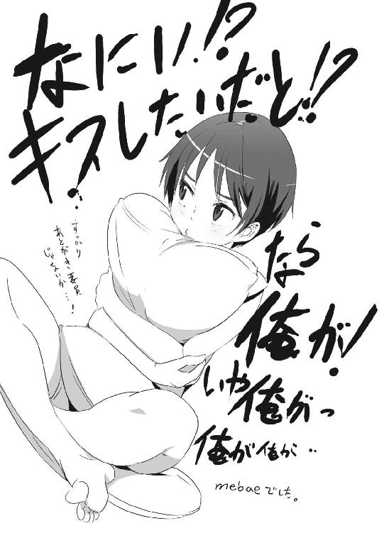
参考資料
「ぼくには数字が風景に見える」（講談社刊）
著／ダニエル・タメット
訳／古屋美登里
「共感覚者の驚くべき日常 形を味わう人、色を聴く人」（草思社刊）
著／リチャード・Ｅ・シトーウィック
訳／山下篤子
ＧＥＮＥＺ－２
ジーンズ
深見 真

平成21年9月25日 発行
発行者 山下直久
発行所 株式会社富士見書房
〒102-8144 東京都千代田区富士見1-12-14
http://www.fujimishobo.co.jp/
(C)2009 Makoto Fukami, mebae/Fujimishobo